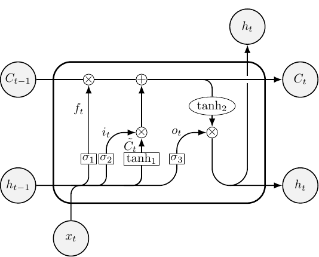

Build Your Own Deep Learning
1 Preface
1.1 License
Copyright © 2020 lascauje
This program is free software: you can redistribute it and/or modify it under the terms of the GNU General Public License as published by the Free Software Foundation, either version 3 of the License, or (at your option) any later version.
This program is distributed in the hope that it will be useful, but WITHOUT ANY WARRANTY; without even the implied warranty of MERCHANTABILITY or FITNESS FOR A PARTICULAR PURPOSE. See the GNU General Public License for more details.
You should have received a copy of the GNU General Public License along with this program. If not, see https://www.gnu.org/licenses/.
1.2 Disclaimer
This document contains my personal project. It was developed for fun, and during my spare time. Since I'm neither a machine learning engineer nor a Lisp hacker, the code could be not perfect, and the commentary associated could miss the advanced theory.
1.3 Philosophy
The purpose of this project was to deep dive into machine learning with Lisp based language, in literate programming manner, and through reproducible computations.
Happy reading!
1.3.1 Machine Learning, The Hard Way
This project is divided into 10 mini projects, and tends to cover several deep learning topics. These projects are inspired by deep learning specialization, tensorflow tutorials, and keras tutorials.
1.3.2 Hylang, The Lisp Language
Hylang is a Lisp dialect that’s embedded in Python, and it provides direct access to Python libraries (TensorFlow, Keras, Django, etc.). Lisp syntax (s-expression) is more convenient in REPL driven development. Lisp is a functional language, in machine learning it's more natural to program in this paradigm than others, because functional programming is closer to mathematical thinking (personal opinion).
1.3.3 Literate Programming, Ou Programmation Lettrée
The main intention of the literate programming is to treat a program as literature: the source code of a program can be read like a (technical) book. In other words, all the documentation and the source code are contained in this file. In this project, literate programming was made with org-mode, a GNU/Emacs library.
1.3.4 Reproducible Computations, Real Dependencies?
In computer science it can be quite difficult to reproduce exactly the same results of computations in long term, because it requires the exact same versions of all packages, with for each all dependencies, and using the same environment. GNU/Guix, a functional package manager, aims to ensure reproducible computations.
1.4 What is Deep Learning
- Artificial Intelligence: Any technique that enables computers to mimic human behavior
- Machine Learning: Ability to learn without explicitly being programmed
- Deep Learning: Extract patterns from data using neural networks
- Deep Learning is a subset of Machine Learning, and Machine Learning is a subset of Artificial Intelligence
— MIT 6.S191 Introduction to Deep Learning
Deep Learning is a superpower. With it you can make a computer see, synthesize novel art, translate languages, render a medical diagnosis, or build pieces of a car that can drive itself. If that isn’t a superpower, I don’t know what is. –— Andrew Ng, Founder of deeplearning.ai and Coursera
1.5 Further Reading
- deeplearning.ai. 2020. Deep Learning Specialization.
- MIT 6.S191. 2020. Introduction to Deep Learning.
- Burkov Andriy. 2020. The Hundred-Page Machine Learning.
- Schulte Eric, Davison Dan, Dye Tom. 2020. Literate Programming with Org-mode.
- Hylang Team. 2020. The Hy Manual.
- Hinsen Konrad. 2020. Reproducible Computations with Guix.
2 Build From Sources
This section describes how to compile-run the source code, and generate the documentation. All steps below are explained for GNU/Guix, a functional package manager for reproducible computations. All commands are executed in a container with reproducible manner (thanks to option time-machine). However, this project is not perfectly reproducible, because it uses Python pip command which doesn't provide this mechanism. For example, TensorFlow-2 is installed with pip command, but should be with GNU/Guix. GNU/Guix has TensorFlow but not the last version (yet). Each subsection has a Bash command line to process an action, and several configuration files as input. For readability, these configuration files are not exported in the documentation, but they can be read in the dl.org file.
2.1 Extract Source Code
First, the source code must be extracted from the dl.org file. Since org-mode is an Elisp module, GNU/Emacs is required.
$ guix time-machine --commit=0a93e8ce328c2dc43eaeddd1033ef67d456bc4df \ -- environment --container --ad-hoc emacs \ -- emacs dl.org --batch --eval "(progn (require 'org) (org-babel-tangle))"
2.2 Compile And Run
2.2.1 Deep Learning
Both compilation and execution required some Python libraries (machine learning framework, Hylang interface, etc.), the following command line performs these actions.
$ guix time-machine --commit=0a93e8ce328c2dc43eaeddd1033ef67d456bc4df \ -- environment --container --network bash --ad-hoc python@3 nss-certs curl \ -- bash export/config/compile_dl.sh
2.2.2 Title Images
Each section has an illustration image (from the book Vingt Mille Lieues sous les mers), and some deep learning projects have technical diagrams (made with LaTeX). The command line below downloads and compiles these images.
$ guix time-machine --commit=0a93e8ce328c2dc43eaeddd1033ef67d456bc4df \ -- environment --container --network bash --ad-hoc curl texlive poppler \ -- bash export/config/compile_img.sh
2.3 HTML Documentation
Generate a documentation in HTML format through org-mode.
$ guix time-machine --commit=0a93e8ce328c2dc43eaeddd1033ef67d456bc4df \ -- environment --container -m export/config/html_requirements.scm \ -- emacs dl.org --batch -l export/config/org_html.el
2.4 LaTeX Documentation
Generate a documentation in pdf format through org-mode and pdflatex.
$ guix time-machine --commit=0a93e8ce328c2dc43eaeddd1033ef67d456bc4df \ -- environment --container -m export/config/latex_requirements.scm \ -- emacs dl.org --batch -l export/config/org_latex.el
2.5 Export Documentation
Move both HTML and LaTeX documentations in doc folder.
$ rm -rf doc/ dl.tex && mkdir doc/ && mv export/ doc/ && mv dl.html doc/ && mv dl.pdf doc/
3 Deep Learning Projects
3.1 Documentation Structure
Each project has a purpose, implementation, result and references sections. In the implementation section, each code block has both a documentation (before) and a test (after) parts associated.
3.2 Logistic Regression Neural Network Classification From Scratch
3.2.1 Purpose
This module implements a basic neural network model (Logistic Regression) for CIFAR-10 photo classification. The objective of this project is to develop an algorithm to recognize animal class over others (airplane, truck, etc.). This neural network is implemented from scratch using NumPy, and CIFAR-10 dataset. The CIFAR-10 dataset is a collection of images used in machine learning for image recognition algorithms. The CIFAR-10 dataset consists of 60000 32x32 color images in 10 classes, with 6000 images per class. The figure 3 represents the neural network architecture used.
{kind=link}
3.2.2 Implementation
- Initialization
Import necessaries modules:
cifar10,numpyandhy.loop(loop with recursion style). Here thekerasframework is only used forcifar10datasets.(require [hy.contrib.loop [loop]]) (require [hytmf [test-case]]) (import [keras.datasets [cifar10]]) (import [matplotlib [pyplot]]) (import [numpy :as np])
Load the CIFAR-10 dataset. There are 50000 examples in the training dataset and 10000 in the test dataset. Images are 32×32 pixels, with 3 channels, and y-axis contains image label. The labels number are:
- airplane
- automobile
- bird
- cat
- deer
- dog
- frog
- horse
- ship
- truck
The shape of
train_set_x_origis 50000x32x32x3, and the shape oftrain_set_y_origis 50000x1. It's similar fortest_setwith 10000 instead 50000, because the number of examples is different.(setv [[train_set_x_orig train_set_y_orig] [test_set_x_orig test_set_y_orig]] (.load_data cifar10))(defn test-dataset_orig [] (assert (= train_set_x_orig.shape '(50000, 32, 32, 3))) (assert (= train_set_y_orig.shape '(50000, 1))) (assert (= test_set_x_orig.shape '(10000, 32, 32, 3))) (assert (= test_set_y_orig.shape '(10000, 1))) (assert (= (get train_set_y_orig 1 0) 9)) (assert (= (get train_set_y_orig 12 0) 7)) (assert (= (get train_set_y_orig 123 0) 2)) (assert (= (get train_set_y_orig 3000 0) 3)) (assert (= (get train_set_y_orig 3103 0) 1)) (assert (= (get test_set_y_orig 1 0) 8)) (assert (= (get test_set_y_orig 12 0) 5)) (assert (= (get test_set_y_orig 149 0) 2)) (assert (= (get test_set_y_orig 3000 0) 5)) (assert (= (get test_set_y_orig 3210 0) 9))) (test-case (test-dataset_orig))
In order to recognize animal label only, labels in the dataset are changed:
- 1 for animal labels (2. bird, 3. cat, 4. deer, 5. dog, 6. frog, 7. horse)
- 0 for others (0. airplane, 1. automobile, 8. ship, 9. truck)
(setv train_set_y_orig (.array np (lfor x train_set_y_orig (lfor y x (int (in y (range 2 7))))))) (setv test_set_y_orig (.array np (lfor x test_set_y_orig (lfor y x (int (in y (range 2 7)))))))
(defn test-dataset_binary_label [] (assert (= train_set_y_orig.shape '(50000, 1))) (assert (= (get train_set_y_orig 1 0) 0)) (assert (= (get train_set_y_orig 12 0) 0)) (assert (= (get train_set_y_orig 123 0) 1)) (assert (= (get train_set_y_orig 3000 0) 1)) (assert (= (get train_set_y_orig 3103 0) 0)) (assert (= test_set_y_orig.shape '(10000, 1))) (assert (= (get test_set_y_orig 1 0) 0)) (assert (= (get test_set_y_orig 12 0) 1)) (assert (= (get test_set_y_orig 149 0) 1)) (assert (= (get test_set_y_orig 3000 0) 1)) (assert (= (get test_set_y_orig 3210 0) 0))) (test-case (test-dataset_binary_label))
Plot the first few images from CIFAR-10 dataset.
(.figure pyplot "cifar") (loop [[i 0]] (when (< i 9) (.subplot pyplot (+ 330 1 i)) (.imshow pyplot (get train_set_x_orig i)) (recur (inc i)))) (.savefig pyplot "cifar") (.close pyplot)
Figure 4: CIFAR-10 dataset example For convenience (in matrix multiplication, etc.), both
train_set_xandtest_set_xare reshaped, and transposed. Images of shape(n, p, 3)are now of shape(n x p x 3, 1), wherenis the number of examples,pis the number of pixels (32x32), and 3 for channels. Bothtrain_set_xandtest_set_xcontain[(n x p x 3, 1), the number of examples]. Bothtrain_set_yandtrain_set_ycontain[a label value, the number of examples].(setv train_set_x_flatten (.transpose np (.reshape train_set_x_orig (get train_set_x_orig.shape 0) -1))) (setv test_set_x_flatten (.transpose np (.reshape test_set_x_orig (get test_set_x_orig.shape 0) -1))) (setv train_set_y (.transpose np train_set_y_orig)) (setv test_set_y (.transpose np test_set_y_orig))
(defn test-datasetx_flatten [] (assert (= train_set_x_flatten.shape '(3072, 50000))) (assert (= test_set_x_flatten.shape '(3072, 10000)))) (test-case (test-datasetx_flatten)) (defn test-datasety_transpose [] (assert (= train_set_y.shape '(1, 50000))) (assert (= (get train_set_y 0 1) 0)) (assert (= (get train_set_y 0 12) 0)) (assert (= (get train_set_y 0 123) 1)) (assert (= (get train_set_y 0 3000) 1)) (assert (= (get train_set_y 0 3103) 0)) (assert (= test_set_y.shape '(1, 10000))) (assert (= (get test_set_y 0 1) 0)) (assert (= (get test_set_y 0 12) 1)) (assert (= (get test_set_y 0 149) 1)) (assert (= (get test_set_y 0 3000) 1)) (assert (= (get test_set_y 0 3210) 0))) (test-case (test-datasety_transpose))
Normalization preprocessing step centers and standardizes the dataset. 255 is the maximum value of a pixel channel.
(setv train_set_x (/ train_set_x_flatten 255)) (setv test_set_x (/ test_set_x_flatten 255))
(defn test-datasetx_norm [] (assert (np.isclose (get train_set_x 0 0) 0.231372)) (assert (np.isclose (get test_set_x 0 0) 0.619607))) (test-case (test-datasetx_norm))
- Functions
\(\operatorname{sigmoid}\) is a non-linear function used for binary classification output. It is used to predict the probability of an output. This model has two labels: animal and no animal, and its output will be the probability that an input image is an animal or not. The definition of \(\operatorname{sigmoid}\) function is:
\begin{align*} \operatorname{sigmoid}(x) & = \frac{1}{1 + e^{-x}}, \mathbb{R} \to [0,1] \\\\ \operatorname{sigmoid}'(x) & = \operatorname{sigmoid}(x)(1 - \operatorname{sigmoid}(x)) \end{align*}(defn sigmoid [Z] (/ 1 (+ 1 (.exp np (- Z))))) (defn dsigmoid [Z] (setv a (sigmoid Z)) (* a (- 1 a)))
(defn test-sigmoid [] (assert (np.isclose (sum (sigmoid(.array np [0 2]))) 1.380797)) (assert (np.isclose (.mean (sigmoid(.array np [0 2]))) 0.690398))) (test-case (test-sigmoid))
Different plots of \(\operatorname{sigmoid}\) function.
(.figure pyplot "sigmoid_1") (setv x (.linspace np -10 10 100)) (.plot pyplot x (sigmoid x)) (.xlabel pyplot "x") (.ylabel pyplot "sigmoid(x)") (.savefig pyplot "sigmoid_1") (.close pyplot) (.figure pyplot "sigmoid_2") (setv x (.linspace np -10 10 100)) (.plot pyplot x (sigmoid (* 2 x))) (.xlabel pyplot "x") (.ylabel pyplot "sigmoid(x)") (.savefig pyplot "sigmoid_2") (.close pyplot) (.figure pyplot "sigmoid_3") (setv x (.linspace np -10 10 100)) (.plot pyplot x (sigmoid (+ (* 2 x) 5))) (.xlabel pyplot "x") (.ylabel pyplot "sigmoid(x)") (.savefig pyplot "sigmoid_3") (.close pyplot) (.figure pyplot "sigmoid_4") (setv x (.linspace np -10 10 100)) (.plot pyplot x (sigmoid (+ (* 100 x) 100))) (.xlabel pyplot "x") (.ylabel pyplot "sigmoid(x)") (.savefig pyplot "sigmoid_4") (.close pyplot)
Figure 5: Plot of \(\operatorname{sigmoid_1}\) Figure 6: Plot of \(\operatorname{sigmoid_2}\) Figure 7: Plot of \(\operatorname{sigmoid_3}\) Figure 8: Plot of \(\operatorname{sigmoid_4}\) In order to train the model, a loss function (denoted as \(\mathcal{L}\)) is used to compute the error for a single training example. A basic loss function would be:
\begin{align*} \mathcal{L}(a, y) & = \frac{1}{2}(a - y)^{2} \end{align*}but it's a non-convex function. It contains local optimum points, which lead to a convergence problem during gradient descent. Instead, cross-entropy function is used because it's a convex function:
\begin{align*} \mathcal{L}(a, y) & = -\sum_{x\in[1,m]} y(x) \log(a(x)) \end{align*}For binary classification (\(M = 2\)):
\begin{align*} \mathcal{L}(a, y) & = - (y(1) \log(a(1)) + y(2) \log(a(2))) \\ & = - (y(1) \log(a(1)) + (1 - y(1)) \log(1 - a(1))) \\ & = - (y \log(a) + (1 - y)\log(1 - a)) \\\\ \mathcal{L}'(a, y) & = -\frac{y}{a} + \frac{1 - y}{1 - a} \end{align*}- if \(y = 1 \implies \mathcal{L}(a, 1) = -\log(a) \implies a\) should be the largest
- if \(y = 0 \implies \mathcal{L}(a, 0) = -\log(1 - a) \implies 1 - a\) should be the largest \(\implies a\) should be smaller
Also, sometimes the parameter \(a\) is denoted \(\hat{y}\).
(defn loss [A Y] (+ (* Y (.log np A)) (* (- 1 Y) (.log np (- 1 A)))))
(defn test-loss [] (assert (np.isclose (.mean (loss 0.8 0.6)) -0.777661))) (test-case (test-loss))
The loss function is applied on only one output. To know the model quality of the entire predictions, a cost function (denoted as \(\mathcal{J}\)) is used, it's the average of the loss functions. The cost function is defined by:
\begin{align*} \mathcal{J}(w,b) & = \frac{1}{m}\sum_{x\in[1,m]}\mathcal{L}(\hat{y}_i, y_i) \end{align*}(defn cost [m A Y] (* (/ -1 m) (.sum np (loss A Y))))
(defn test-cost [] (assert (np.isclose (cost 3 (.array np [[0.8 0.9 0.4]]) (.array np [[1 1 0]])) 0.279776))) (test-case (test-cost))
- Computation Graph
The architecture of the computation graph is the following two steps (as shown in figure 3):
- Forward propagation: it's a forward step from input (calculated weights-bias, features \(x\)) to output (\(\operatorname{sigmoid}\), loss function). The objective is to calculate the loss of output with the current weights-bias.
- Backward propagation: it's a backward step from output to input. The objective is to calculate the gradient (chain rule derivative) in order to minimize the cost function.
- Forward Propagation
The final formula for forward propagation with vectorization (matrix form) is:
\begin{align*} Z & = W^{\operatorname{T}} \cdot X + b \\\\ A & = \operatorname{sigmoid}(Z) \end{align*}The dimensions associated are:
\begin{align*} \dim Z & = 1 \times m \\\\ \dim A & = 1 \times m \\\\ \dim W & = n_x \times 1 \\\\ \dim X & = n_x \times m \\\\ \dim Y & = 1 \times m \\\\ \end{align*}The operands can be represented in a matrix form:
\begin{align*} X & = \begin{bmatrix} x_{11} & x_{12} & \dots & x_{1p} & \dots & x_{1m} \\ x_{21} & x_{22} & \dots & x_{2p} & \dots & x_{2m} \\ \dots & \dots & \dots & \dots & \dots & \dots \\ x_{p1} & x_{p2} & \dots & x_{pp} & \dots & x_{pm} \\ \dots & \dots & \dots & \dots & \dots & \dots \\ x_{n_x1} & x_{n_x2} & \dots & x_{n_xp} & \dots & x_{n_xm} \end{bmatrix} \\\\ W & = \begin{bmatrix} w_{11} \\ w_{21} \\ \dots \\ w_{p1} \\ \dots \\ w_{n_x1} \end{bmatrix} \\\\ Z & = \begin{bmatrix} z_{11} & z_{12} & \dots & z_{1p} & \dots & z_{1m} \end{bmatrix} \\\\ W^{\operatorname{T}} \cdot X & = \begin{bmatrix} w_{11} \times x_{11} + w_{21} \times x_{21} + w_{p1} \times x_{p1} + w_{n_x1} \times x_{n_x1} \\ w_{11} \times x_{12} + w_{21} \times x_{22} + w_{p1} \times x_{p2} + w_{n_x1} \times x_{n_x2} \\ \cdots \\ w_{11} \times x_{1p} + w_{21} \times x_{2p} + w_{p1} \times x_{pp} + w_{n_x1} \times x_{n_xp} \\ \cdots \\ w_{11} \times x_{1m} + w_{21} \times x_{2m} + w_{p1} \times x_{pm} + w_{n_x1} \times x_{n_xm} \end{bmatrix} \end{align*}To understand the forward propagation formula, let \(m = 1\) and \(n_x = 2\):
\begin{align*} z_{11} & = w_{11} \times x_{11} + w_{21} \times x_{21} + b \\\\ \hat{y}_{11} & = a_{11} = \operatorname{sigmoid}(z_{11}) \\\\ \mathcal{L}(a_{11}, y_{11}) & = y_{11} \log(a_{11}) + (1 - y_{11}) \log(1 - a_{11}) \end{align*}All features \(x\) are multiplied by weights \(w\), and the vectors dimension are: \(\dim x_{ji} = \dim w_{j1} = \dim a_{11} = \dim b = \dim z_{11} = 1 \times 1\)
With \(m > 1\) and \(n_x = 2\) the forward propagation formula becomes:
\begin{align*} \mathcal{J} & = \frac{1}{m} \sum_{i\in[1,m]} \mathcal{L}(a_{1i}, y_{1i}) \end{align*}
begin-for\(i\in [1, m]\):
|\(z_{1i} = w_{11} \times x_{1i} + w_{21} \times x_{2i} + b\)
|\(a_{1i} = \operatorname{sigmoid}(z_{1i})\)
|\(\mathcal{L}(a_{1i}, y_{1i}) = y_{1i} \log(a_{1i}) + (1 - y_{1i}) \log(1 - a_{1i})\)
end-for
These equations confirm the final forward propagation formula, and why matrix multiplications are used. Also, the cost function is: - Backward Propagation
The final backward propagation formula is:
\begin{align*} \partial{\tilde{Z}} & = A - Y \\\\ \partial{\tilde{W}} & = \frac{1}{m} X \cdot \partial{\tilde{Z}}^{\operatorname{T}} \\\\ \partial{\tilde{b}} & = \frac{1}{m}\sum \partial{\tilde{Z}} \end{align*}The dimensions associated for each operand are:
\begin{align*} \dim \partial{\tilde{Z}} & = 1 \times m \\\\ \dim \partial{\tilde{b}} & = 1 \times 1 \\\\ \dim \partial{\tilde{W}} & = nx \times 1 \\\\ \dim \partial{\tilde{X}} & = nx \times m \end{align*}The matrix representation for some operands are:
\begin{align*} \partial{\tilde{Z}} & = \begin{bmatrix} \partial{\tilde{z}}_{11} & \partial{\tilde{z}}_{12} & \dots & \partial{\tilde{z}}_{1p} & \dots & \partial{\tilde{z}}_{1m} \end{bmatrix} \\\\ X \cdot \partial{\tilde{Z}}^{\operatorname{T}} & = \begin{bmatrix} x_{11} \times \partial{\tilde{z}}_{11} + x_{12} \times \partial{\tilde{z}}_{12} + \cdots + x_{1p} \times \partial{\tilde{z}}_{1p} + \cdots + x_{1m} \times \partial{\tilde{z}}_{1m} \\ x_{21} \times \partial{\tilde{z}}_{11} + x_{22} \times \partial{\tilde{z}}_{12} + \cdots + x_{2p} \times \partial{\tilde{z}}_{1p} + \cdots + x_{2m} \times \partial{\tilde{z}}_{1m} \\ \dots \\ x_{p1} \times \partial{\tilde{z}}_{11} + x_{p2} \times \partial{\tilde{z}}_{12} + \cdots + x_{pp} \times \partial{\tilde{z}}_{1p} + \cdots + x_{pm} \times \partial{\tilde{z}}_{1m} \\ \dots \\ x_{n_x1} \times \partial{\tilde{z}}_{11} + x_{n_x2} \times \partial{\tilde{z}}_{12} + \cdots + x_{n_xp} \times \partial{\tilde{z}}_{1p} + \cdots + x_{n_xm} \times \partial{\tilde{z}}_{1m} \\ \end{bmatrix} \end{align*}In the same way, to understand these formulas let \(m\) and \(n_x\) be constant values. Here the objective is to optimize input parameters: \(w_{11}\), \(w_{21}\), and \(b\). Also, the notation used for chain rule is:
\begin{align*} \partial{\tilde{g}} & = \frac{\partial{f}}{\partial{g}} \\ & = \frac{\partial{f}}{\partial{a}} \times \frac{\partial{a}}{\partial{g}} \\\\ \end{align*}Below the calculation for backward propagation with \(m = 1\), and \(n_x = 2\),
\begin{align*} \partial{\tilde{a_{11}}} & = \frac{\partial{\mathcal{L}}}{\partial{a_{11}}} \\ & = -\frac{y_{11}}{a_{11}} + \frac{1 - y_{11}}{1 - a_{11}} \\\\ \partial{\tilde{z_{11}}} & = \frac{\partial{\mathcal{L}}}{\partial{z_{11}}} \\ & = \frac{\partial{\mathcal{L}}}{\partial{a_{11}}} \times \frac{\partial{a_{11}}}{\partial{z_{11}}} \\ & = (-\frac{y_{11}}{a_{11}} + \frac{1 - y_{11}}{1 - a_{11}}) \times a_{11} \times (1 - a_{11}) \\ & = a_{11} - y_{11} \\\\ \partial{\tilde{w_{11}}} & = \frac{\partial{\mathcal{L}}}{\partial{w_{11}}} \\ & = \frac{\partial{\mathcal{L}}}{\partial{z_{11}}} \times \frac{\partial{z_{11}}}{\partial{w_{11}}} \\ & = x_{11} \times \partial{\tilde{z_{11}}} \\ & = x_{11} \times (a_{11} - y_{11}) \\\\ \partial{\tilde{w_{21}}} & = \frac{\partial{\mathcal{L}}}{\partial{w_{21}}} \\ & = \frac{\partial{\mathcal{L}}}{\partial{z_{11}}} \times \frac{\partial{z_{11}}}{\partial{w_{21}}} \\ & = x_{21} \times \partial{\tilde{z_{11}}} \\ & = x_{21} \times (a_{11} - y_{11}) \\\\ \partial{\tilde{b}} & = \frac{\partial{\mathcal{L}}}{\partial{b}} \\ & = \frac{\partial{\mathcal{L}}}{\partial{z_{11}}} \times \frac{\partial{z_{11}}}{\partial{b}} \\ & = \partial{\tilde{z_{11}}} \\ & = a_{11} - y_{11} \end{align*}Now, let \(m > 1\), \(n_x = 2\), then the backward propagation formula becomes:
begin-for\(i\in [1, m]\):
|\(\partial{\tilde{z_{1i}}} = a_{1i} - y_{1i}\)
|\(\partial{\tilde{w_{11}}} \mathrel{{+}{=}} x_{1i} \times (a_{1i} - y_{1i})\)
|\(\partial{\tilde{w_{21}}} \mathrel{{ + }{=}} x_{2i} \times (a_{1i} - y_{1i})\)
|\(\partial{\tilde{b}} \mathrel{{+}{=}} a_{1i} - y_{1i}\)
end-for
\(\partial{\tilde{w_{11}}} \mathrel{{/}{=}} m\)
\(\partial{\tilde{w_{21}}} \mathrel{{/}{=}} m\)
\(\partial{\tilde{b}} \mathrel{{/}{=}} m\)
Also, it's \(w_{11}\), \(w_{21}\) and not \(w_{1i}\), \(w_{2i}\), because weights are the same between different examples contained, and sum is used because \(\dim \partial{\tilde{b}}\) is \(1 \times 1\) without vectorization, and must stay the same with vectorization.Implement the \(\partial{\tilde{Z}}\) equation in backward propagation formula described at doc-backward-prop.
(defn dloss_dz [A Y] (- A Y))
Implement the \(\partial{\tilde{W}}\) equation in backward propagation formula described at doc-backward-prop.
(defn dloss_dw [X A Y] (.dot np X (.transpose np (dloss_dz A Y)))) (defn dcost_dw [m X A Y] (* (/ 1 m) (dloss_dw X A Y)))
Implement the \(\partial{\tilde{b}}\) equation in backward propagation formula described at doc-backward-prop.
(defn dloss_db [A Y] (dloss_dz A Y)) (defn dcost_db [m A Y] (* (/ 1 m) (.sum np (dloss_db A Y))))
Process of computation graph, i.e. forward and backward propagation.
(defn propagate [w b X Y] (setv A (sigmoid (+ (.dot np (.transpose np w) X) b))) (setv m (get X.shape 1)) [(cost m A Y) (dcost_dw m X A Y) (dcost_db m A Y)])
(defn test-fb_propagation [] (setv w (.array np [[1.] [2.]])) (setv b 2.) (setv X (.array np [[1. 2. -1.] [3. 4. -3.2]])) (setv Y (.array np [[1 0 1]])) (propagate w b X Y) (assert (np.isclose (get (sum (sum (propagate w b X Y))) 0) 14.999530))) (test-case (test-fb_propagation))
- Gradient Descent
Implement the one step gradient descent algorithm: run the process of computation graph (both forward and backward propagation), and update parameters (both weights and bias) in order to minimize the cost function. This algorithm is repeated in a loop iteration with an arbitrary \(N\).
(defn gradient_descent [w b X Y learning_rate nb_iter] (loop [[i 0] [w_acc w] [b_acc b] [cost_acc []]] (setv [cost dw db] (propagate w_acc b_acc X Y)) (if (>= i nb_iter) [w_acc b_acc dw db cost_acc] (recur (inc i) (- w_acc (* learning_rate dw)) (- b_acc (* learning_rate db)) (if (% i 100) (+ cost_acc [cost]) cost_acc)))))
(defn test-gradient_descent [] (setv w (np.array [[1.] [2.]])) (setv b 2.) (setv X (np.array [[1. 2. -1.] [3. 4. -3.2]])) (setv Y (np.array [[1. 0. 1.]])) (setv [test_w_acc test_b_acc test_dw test_db test_cost_acc] (gradient_descent w b X Y 0.009 100)) (assert (np.isclose (test_w_acc.mean) 0.156463)) (assert (np.isclose (test_b_acc.mean) 1.925359)) (assert (np.isclose (test_dw.mean) 1.036073)) (assert (np.isclose (test_db.mean) 0.219464)) (assert (np.isclose (sum test_cost_acc) 304.243381))) (test-case (test-gradient_descent))
- Model
Predict whether the label is either 0 or 1. It uses both weights and bias calculated by the gradient descent, so the model must be trained before calling this function. Whether the label is > 0.5 then the value for this label will be 1, and it means that the image is an animal.
(defn predict [w b X] (setv A (sigmoid (+ (.dot np (.transpose np w) X) b))) (.array np (lfor x A (lfor y x (int (> y 0.5))))))
(defn test-predict [] (setv w (.array np [[0.1124579] [0.23106775]])) (setv b -0.3) (setv X (.array np [[1. -1.1 -3.2] [1.2 2. 0.1]])) (setv test_predict_out (predict w b X)) (assert (= (get (get test_predict_out 0) 0) 1)) (assert (= (get (get test_predict_out 0) 1) 1)) (assert (= (get (get test_predict_out 0) 2) 0))) (test-case (test-predict))
The model process all necessaries steps to build the Logistic Regression algorithm:
- Forward propagation to calculate the cost of the model
- Backward propagation to calculate the new weights and bias
- Update the weights and bias to minimize the cost function (train the model)
- The final step, once the model is trained, predicts whether labels are either 0 or 1
(defn model [X_train Y_train X_test learning_rate nb_iter] (setv w_zero (.zeros np [(get X_train.shape 0) 1])) (setv b_zero 0) (setv [w_acc b_acc dw db cost_acc] (gradient_descent w_zero b_zero X_train Y_train learning_rate nb_iter)) (setv Y_pred_train (predict w_acc b_acc X_train)) (setv Y_pred_test (predict w_acc b_acc X_test)) [w_acc b_acc dw db cost_acc Y_pred_train Y_pred_test])
(defn test-model [] (setv [w_acc b_acc dw db cost_acc Y_pred_train Y_pred_test] (model train_set_x train_set_y test_set_x 0.005 2000)) (assert (np.isclose (- 100 (* (np.mean (np.abs (- Y_pred_train train_set_y))) 100)) 76.466000)) (assert (np.isclose (- 100 (* (np.mean (np.abs (- Y_pred_test test_set_y))) 100)) 76.72)) (assert (np.isclose (w_acc.mean) -6.4368831e-05)) (assert (np.isclose (b_acc.mean) 0.065301)) (assert (np.isclose (dw.mean) 3.0001236e-06)) (assert (np.isclose (db.mean) -0.00583625184)) (assert (np.isclose (sum cost_acc) 1042.453483)) (assert (np.isclose (Y_pred_train.mean) 0.5091)) (assert (np.isclose (Y_pred_test.mean) 0.5072))) (test-case (test-model))
3.2.3 Results
In order to measure the quality of the model, a simple accuracy method is used. The prediction of the model for both training and test sets are compared with both training and test from the CIFAR-10 dataset. Both training and test accuracy are about 76 %. It shows a high bias (underfitting problem). Underfitting means that the model is not complex enough. It can neither model the training data nor generalize to new data. Nevertheless, a test accuracy of 76 % for a simple Logistic Regression model is tolerable.
(print "Model running...") (setv [w_acc b_acc dw db cost_acc Y_pred_train Y_pred_test] (model train_set_x train_set_y test_set_x 0.005 2000)) (print (.format "train accuracy: {} %" (- 100 (* (np.mean (np.abs (- Y_pred_train train_set_y))) 100)))) (print (.format "test accuracy: {} %" (- 100 (* (np.mean (np.abs (- Y_pred_test test_set_y))) 100))))
train accuracy: 76.46600000000001 % test accuracy: 76.72 %
An example of two pictures correctly classified.
The first one represents a dog, and comes from the vector test_set_x_orig[12].
The prediction output for this image (Y_pred_test[0 12] = 1), is compared
to the vector labels from CIFAR-10 (test_set_y_orig[12 0] = 1).
The second image represents an airplane, and comparisons are similar
to the previous one with 0 as label instead 1.
(.figure pyplot "cifar_picture_classified_animal") (.imshow pyplot (get test_set_x_orig 12)) (.savefig pyplot "cifar_picture_classified_animal") (.close pyplot) (get test_set_y_orig 12 0) (get Y_pred_test 0 12) (.figure pyplot "cifar_picture_classified_noanimal") (.imshow pyplot (get test_set_x_orig 10)) (.savefig pyplot "cifar_picture_classified_noanimal") (.close pyplot) (get test_set_y_orig 10 0) (get Y_pred_test 0 10)
3.2.4 References
- deeplearning.ai. 2020. Deep Learning Specialization.
- Brownlee Jason. 2019. How to Develop a CNN From Scratch for CIFAR-10 Photo Classification.
- Brownlee Jason. 2019. Overfitting and Underfitting With Machine Learning Algorithms.
- Joy Ashwin. 2020. Cifar-10 Image Classification Using Keras.
- U Toronto. 2009. The CIFAR-10 dataset.
- Arunava. 2018. Derivative of the Sigmoid function.
- Olah Christopher. 2015. Calculus on Computational Graphs: Backpropagation.
3.3 Deep Neural Network Classification From Scratch
3.3.1 Purpose
This module implements a Deep Neural Network model for CIFAR-10 photo classification. This project is similar to Logistic Regression Neural Network Classification From Scratch with a deep neural network instead a basic neural network. The figure 12 represents the neural network architecture used.
{kind=link}
3.3.2 Implementation
- Initialization
The code block below is described at src-import-modules.
(require [hy.contrib.loop [loop]]) (require [hytmf [test-case]]) (import [keras.datasets [cifar10]]) (import [matplotlib [pyplot]]) (import [numpy :as np])
The code block below is described at src-import-dataset.
(setv [[train_set_x_orig train_set_y_orig] [test_set_x_orig test_set_y_orig]] (.load_data cifar10))The code block below is described at src-labels-dataset.
(setv train_set_y_orig (.array np (lfor x train_set_y_orig (lfor y x (int (in y (range 2 7))))))) (setv test_set_y_orig (.array np (lfor x test_set_y_orig (lfor y x (int (in y (range 2 7)))))))
The code block below is described at src-flatten-dataset.
(setv train_set_x_flatten (.transpose np (.reshape train_set_x_orig (get train_set_x_orig.shape 0) -1))) (setv test_set_x_flatten (.transpose np (.reshape test_set_x_orig (get test_set_x_orig.shape 0) -1))) (setv train_set_y (.transpose np train_set_y_orig)) (setv test_set_y (.transpose np test_set_y_orig))
The code block below is described at src-normalize-dataset.
(setv train_set_x (/ train_set_x_flatten 255)) (setv test_set_x (/ test_set_x_flatten 255))
- Functions
The \(\operatorname{sigmoid}\) function is described at src-sigmoid.
(defn sigmoid [Z] (/ 1 (+ 1 (.exp np (- Z))))) (defn dsigmoid [Z] (setv a (sigmoid Z)) (* a (- 1 a)))
The loss function is described at src-loss.
(defn loss [A Y] (+ (* Y (.log np A)) (* (- 1 Y) (.log np (- 1 A)))))
The cost function is described at src-cost.
(defn cost [m A Y] (* (/ -1 m) (.sum np (loss A Y))))
\(\operatorname{ReLU}\) function has at least two benefits over \(\operatorname{sigmoid}\) function:
- \(\operatorname{ReLU}\) function avoids the vanishing gradient problem (slow gradient descent), because \(\operatorname{sigmoid}\) derivative is always smaller than 0, then when \(N\) hidden layers use \(\operatorname{sigmoid}\) function-like, \(N\) small derivatives are multiplied together. \(\operatorname{ReLU}\) gradient is either 0 (when \(x < 0\)) or 1 (when \(x > 0\)), so whatever the number of hidden layers. In other words, \(\operatorname{ReLU}\) gradient is faster learning than \(\operatorname{sigmoid}\) gradient.
- \(\operatorname{ReLU}\) is more computationally efficient to compute because it's defined with a max function, while \(\operatorname{sigmoid}\) is defined by an exponential function.
The definition of \(\operatorname{ReLU}\) is:
\begin{align*} \operatorname{ReLU}(x) & = \max(0,x) \\\\ \operatorname{ReLU}'(x) & = \begin{cases} 0 & \text{if } x < 0, \\ 1 & \text{if } x > 0,\\ undefined & \text{if } x = 0 \end{cases} \end{align*}(defn relu [Z] (.maximum np 0 Z)) (defn drelu [Z] (.array np (lfor x Z (lfor y x (if (<= y 0) 0 1)))))
(defn test-relu [] (assert (= (relu 20) 20))) (test-case (test-relu))
Plot of \(\operatorname{ReLU}\) function.
(.figure pyplot "relu") (setv x (.linspace np -10 10 100)) (.plot pyplot x (relu x)) (.xlabel pyplot "x") (.ylabel pyplot "relu(x)") (.savefig pyplot "relu") (.close pyplot)
Figure 13: Plot of \(\operatorname{ReLU}\) - Computation Graph
- Forward Propagation
The formula for forward (respectively, backward) propagation in Deep Neural Network is a generalization of the Logistic Regression one. The formulas for Logistic Regression are described at doc-forward-prop and doc-backward-prop. The formula for forward propagation is:
\begin{align*} Z^{[l]} & = W^{[l]} \cdot A^{[l-1]} + b^{[l]} \\\\ A^{[l]} & = \sigma(Z^{[l]}) \\\\ A^{[0]} & = X \end{align*}The loss function for each example is \(\mathcal{L}(a^{[L]}_{n_{hn}^{[L]}i}, y^{[L]}_{n_{hn}^{[L]}i})\), \(\forall i \in [1,m]\), and the cost function \(\mathcal{J}\) is:
\begin{align*} \mathcal{J} & = \frac{1}{m} \sum_{i\in[1,m]} \mathcal{L}(a^{[L]}_{n_{hn}^{[L]}i} y^{[L]}_{n_{hn}^{[L]}i}), \forall i \in [1,m] \end{align*}The dimension associated are:
\begin{align*} \dim Z^{[l]} & = n_{hn}^{[l]} \times m \\\\ \dim A^{[l]} & = n_{hn}^{[l]} \times m \\\\ \dim W^{[l]} & = n_{hn}^{[l]} \times n_{hn}^{[l-1]} \\\\ \dim b^{[l]} & = n_{hn}^{[l]} \times 1 \end{align*}A neural network can have several activation functions. In this architecture both \(\operatorname{ReLU}\) function and \(\operatorname{sigmoid}\) function are used, thus in the equation above, \(\sigma\) can be either \(\operatorname{ReLU}\) or \(\operatorname{sigmoid}\). Using only a linear activation function in neural network would just output a linear function, thus a non-linear function is needed to increase the range of functions that the model can learn. If \(\sigma\) is the identity function then the model output will be linear.
The examples below are explained with three layers neural network (the input layer isn't counted): \(A^{[0]}\) represents the input layer, \(A^{[1]}\) and \(A^{[2]}\) the hidden neurons layer, \(A^{[3]}\) the output layer. In other words the number of hidden layers is three (\(A^{[1]}\), \(A^{[2]}\), \(A^{[3]}\)), and the number of neurons in each hidden layer (noted \(n^{[i]}_{hn}\), \(hn\) means hidden neuron) is different for each one, for example \(A^{[2]}\) has five (\(n_{hn}^{[2]}\)) neurons (as shown in figure 12). The dimension values are:
\begin{align*} m & = 1 \\\\ n_{hn}^{[0]} & = n_x = 3 \\\\ n_{hn}^{[1]} & = 4 \\\\ n_{hn}^{[2]} & = 5 \\\\ n_{hn}^{[3]} & = 1 \end{align*}The matrix associated are:
\begin{align*} A^{[0]} & = X \\\\ A^{[1]} & = \begin{bmatrix} a_{11}^{[1]} \\ a_{21}^{[1]} \\ a_{31}^{[1]} \\ a_{41}^{[1]} \end{bmatrix} \\\\ A^{[2]} & = \begin{bmatrix} a_{11}^{[2]} \\ a_{21}^{[2]} \\ a_{31}^{[2]} \\ a_{41}^{[2]} \\ a_{51}^{[2]} \end{bmatrix} \\\\ A^{[3]} & = \hat{Y} \\\\ b^{[1]} & = \begin{bmatrix} b_{11}^{[1]} \\ b_{21}^{[1]} \\ b_{31}^{[1]} \\ b_{41}^{[1]} \end{bmatrix} \\\\ X & = \begin{bmatrix} x_{11} \\ x_{21} \\ x_{31} \end{bmatrix} \\\\ W^{[1]} & = \begin{bmatrix} w_{11}^{[1]} & w_{12}^{[1]} & w_{13}^{[1]} \\ w_{21}^{[1]} & w_{22}^{[1]} & w_{23}^{[1]} \\ w_{31}^{[1]} & w_{32}^{[1]} & w_{33}^{[1]} \\ w_{41}^{[1]} & w_{42}^{[1]} & w_{43}^{[1]} \end{bmatrix} \\\\ W^{[3]} & = \begin{bmatrix} w_{11}^{[3]} & w_{12}^{[3]} & w_{13}^{[3]} &w_{14}^{[3]} \end{bmatrix} \end{align*}The following result for forward propagation with \(l = 1\) is similar to the forward propagation for Logistic Regression described at doc-forward-prop.
\begin{align*} Z^{[1]} & = W^{[1]} \cdot A^{[0]} + b^{[1]} = \begin{bmatrix} w_{11}^{[1]} \times x_{11} + w_{12}^{[1]} \times x_{21} + w_{13}^{[1]} \times x_{31} + b_{11}^{[1]} \\ w_{21}^{[1]} \times x_{11} + w_{22}^{[1]} \times x_{21} + w_{23}^{[1]} \times x_{31} + b_{21}^{[1]} \\ w_{31}^{[1]} \times x_{11} + w_{32}^{[1]} \times x_{21} + w_{33}^{[1]} \times x_{31} + b_{31}^{[1]} \\ w_{41}^{[1]} \times x_{11} + w_{42}^{[1]} \times x_{21} + w_{43}^{[1]} \times x_{31} + b_{41}^{[1]} \\ \end{bmatrix} \end{align*}The following two equations are equivalent:
\begin{align*} z^{[1]}_{11} & = w_{11}^{[1]} \times x_{11} + w_{12}^{[1]} \times x_{21} + w_{13}^{[1]} \times x_{31} + b_{11}^{[1]} \\\\ z_{11} & = w_{11} \times x_{11} + w_{21} \times x_{21} + b \end{align*}The second one comes from Logistic Regression. Moreover, the \(W\) matrix is transposed, because \(\dim W^{[l]} = n_{hn}^{[l]} \times n_{x}\) instead of \(n_{x} \times n_{hn}^{[l]}\) (\(n_x = n_{hn}^{[l-1]}\)) in Logistic Regression.
Implement the \(Z^{[l]}\) equation in forward propagation formula described at doc-forward-prop-dnnc.
(defn linear_forward [A W b] (+ (.dot np W A) b))
(defn test-linear_forward [] (np.random.seed 1) (setv A (np.random.randn 3 2)) (setv W (np.random.randn 1 3)) (setv b (np.random.randn 1 1)) (assert (np.isclose (.mean (linear_forward A W b)) 1.014326))) (test-case (test-linear_forward))
The cache mechanism returns both function results and arguments. They are saved during forward propagation and used during backward propagation.
(defn cache_sys [func &rest args] [(func #* args) [#* args]])
(defn test-cache_sys [] (np.random.seed 1) (setv A (np.random.randn 3 2)) (setv W (np.random.randn 1 3)) (setv b (np.random.randn 1 1)) (assert (np.isclose (.mean (get (cache_sys linear_forward A W b) 0)) 1.014326)) (assert (np.isclose (.mean (get (cache_sys linear_forward A W b) 1 0)) -0.337447)) (assert (np.isclose (.mean (get (cache_sys linear_forward A W b) 1 1)) 0.434214)) (assert (np.isclose (.mean (get (cache_sys linear_forward A W b) 1 2)) -0.249370))) (test-case (test-cache_sys))
Implement the \(A^{[l]}\) equation in forward propagation formula described at doc-forward-prop-dnnc.
(defn activation_forward [A_prev W b func] (setv [Z linear_cache] (cache_sys linear_forward A_prev W b)) (setv [A activation_cache] (cache_sys func Z)) [A [linear_cache activation_cache]])
(defn test-activation_forward [] (np.random.seed 1) (setv A_prev (np.random.randn 3 2)) (setv W (np.random.randn 1 3)) (setv b (np.random.randn 1 1)) (assert (np.isclose (len (activation_forward A_prev W b sigmoid)) 2)) (assert (np.isclose (.mean (get (activation_forward A_prev W b sigmoid) 0)) 0.594282)) (assert (np.isclose (.mean (get (get (get (activation_forward A_prev W b sigmoid) 1) 0) 0)) -0.337447)) (assert (np.isclose (.mean (get (get (get (activation_forward A_prev W b sigmoid) 1) 0) 1)) 0.434214)) (assert (np.isclose (.mean (get (get (get (activation_forward A_prev W b sigmoid) 1) 0) 2)) -0.249370)) (assert (np.isclose (.mean (get (get (get (activation_forward A_prev W b sigmoid) 1) 1) 0)) 1.014326)) (assert (np.isclose (len (activation_forward A_prev W b relu)) 2)) (assert (np.isclose (.mean (get (activation_forward A_prev W b relu) 0)) 1.631476687327087)) (assert (np.isclose (.mean (get (get (get (activation_forward A_prev W b relu) 1) 0) 0)) -0.337447)) (assert (np.isclose (.mean (get (get (get (activation_forward A_prev W b relu) 1) 0) 1)) 0.434214)) (assert (np.isclose (.mean (get (get (get (activation_forward A_prev W b relu) 1) 0) 2)) -0.249370)) (assert (np.isclose (.mean (get (get (get (activation_forward A_prev W b relu) 1) 1) 0)) 1.014326))) (test-case (test-activation_forward))
Implement the forward propagation in all hidden layers. It consists of propagating \(A^{[i]} = \sigma(Z^{[i]})\), \(\forall i \in [1, L-1]\), with \(\sigma = \operatorname{ReLU}\).
(defn hidden_layer_forward [X param] (setv num_layer (int (/ (len param) 2))) (loop [[i 1] [A_prev X] [caches []]] (if (>= i num_layer) [A_prev caches] (do (setv [A act_cache] (activation_forward A_prev (get param (+ "W" (str i))) (get param (+ "b" (str i))) relu)) (recur (inc i) A (+ caches [act_cache]))))))
Implement the forward propagation for the output layer (last layer). It consists of computing \(A^{[L]} = \sigma(Z^{[L]})\), with \(\sigma = \operatorname{sigmoid}\), \(L\) the last layer.
(defn output_layer_forward [A param] (setv num_layer (int (/ (len param) 2))) (activation_forward A (get param (+ "W" (str num_layer))) (get param (+ "b" (str num_layer))) sigmoid))
Implement the complete forward propagation described at doc-forward-prop-dnnc.
(defn model_layer_forward [X params] (setv [A h_cache] (hidden_layer_forward X params)) (setv [AL o_cache] (output_layer_forward A params)) [AL (+ h_cache [o_cache])])
(defn test-model_layer_forward [] (np.random.seed 1) (setv X (np.random.randn 5 4)) (setv W1 (np.random.randn 4 5)) (setv b1 (np.random.randn 4 1)) (setv W2 (np.random.randn 3 4)) (setv b2 (np.random.randn 3 1)) (setv W3 (np.random.randn 1 3)) (setv b3 (np.random.randn 1 1)) (setv param {"W1" W1 "W2" W2 "W3" W3 "b1" b1 "b2" b2 "b3" b3}) (setv [AL caches] (model_layer_forward X param)) (assert (np.isclose (.mean AL) 0.7759899100529316)) (assert (= (len caches) 3)) (assert (np.isclose (.mean (get (get (get caches 0) 0) 0)) -0.133364)) (assert (np.isclose (.mean (get (get (get caches 1) 0) 0)) 1.027273)) (assert (np.isclose (.mean (get (get (get caches 2) 0) 0)) 1.809404)) (assert (np.isclose (.mean (get (get (get caches 0) 0) 1)) -0.045831)) (assert (np.isclose (.mean (get (get (get caches 0) 0) 2)) -0.033542)) (assert (np.isclose (.mean (get (get (get caches 2) 1) 0)) 3.481814))) (test-case (test-model_layer_forward))
- Backward Propagation
The final formula for backward propagation is:
\begin{align*} \partial{\tilde{W}^{[l]}} & = \frac{1}{m} \partial{\tilde{Z}^{[l]}} \cdot \partial{\tilde{A}^{[l-1]\operatorname{T}}} \\\\ \partial{\tilde{b}^{[l]}} & = \frac{1}{m} \sum \partial{\tilde{Z}^{[l]}} \\\\ \partial{\tilde{A}^{[l-1]}} & = W^{[l]\operatorname{T}} \cdot \partial{\tilde{Z}^{[l]}} \\\\ \partial{\tilde{Z}^{[l]}} & = \partial{\tilde{A}^{[l]}} \odot \sigma'(Z^{[l]}) \\\\ \partial{\tilde{A}^{[L]}} & = \frac{\partial{\mathcal{L}(A^{[L]}, Y)}}{\partial{\tilde{A}^{[L]}}} \end{align*}The symbol \(\odot\) is the Hadamard product. The procedure to understand the backward propagation formula is to break down it without vectorization, and with fixed dimensions. Let \(L = 2\), \(m = 1\), \(n_{hn}^{[0]} = n_x = 3\), \(n_{hn}^{[1]} = 4\), \(n_{hn}^{[2]} = 2\) be the fixed values for matrix dimension, and let
\begin{align*} Z^{[1]} & = W^{[1]} \cdot A^{[0]} + b^{[1]}, \dim = 4 \times 1 \\\\ A^{[1]} & = \sigma_{1}(Z^{[1]}), \dim = 4 \times 1 \\\\ Z^{[2]} & = W^{[2]} \cdot A^{[1]} + b^{[2]}, \dim = 2 \times 1 \\\\ A^{[2]} & = \sigma_{2}(Z^{[2]}), \dim = 2 \times 1 \\\\ \sigma_{1} & = \operatorname{ReLU} \\\\ \sigma_{2} & = \operatorname{sigmoid} \\\\ \mathcal{L} & (A^{[2]}, Y), \dim = 2 \times 1 \end{align*}Respecting of the chain rule:
\begin{align*} \partial{{\tilde{a}^{[2]}_{11}}} & = \frac{\partial{\mathcal{L}}} {\partial{\tilde{a}^{[2]}_{11}}} \\ & = -\frac{y^{[2]}_{11}}{a^{[2]}_{11}} + \frac{1 - y^{[2]}_{11}}{1 - a^{[2]}_{11}} \\\\ \partial{{\tilde{a}^{[2]}_{21}}} & = \frac{\partial{\mathcal{L}}} {\partial{\tilde{a}^{[2]}_{21}}} \\ & = -\frac{y^{[2]}_{21}}{a^{[2]}_{21}} + \frac{1 - y^{[2]}_{21}}{1 - a^{[2]}_{21}} \\\\ \partial{\tilde{z}^{[2]}_{11}} & = \frac{\partial{\mathcal{L}}} {\partial{z^{[2]}_{11}}} \\ & = \frac{\partial{\mathcal{L}}}{\partial{a^{[2]}_{11}}} \times \frac{\partial{a^{[2]}_{11}}}{\partial{z^{[2]}_{11}}} \\ & = \partial{a^{[2]}_{11}} \times \sigma_{2}'(z^{[2]}_{11}) \\ & = (-\frac{y^{[2]}_{11}}{a^{[2]}_{11}} + \frac{1 - y^{[2]}_{11}} {1 - a^{[2]}_{11}}) \times a^{[2]}_{11} \times (1 - a^{[2]}_{11}) \\ & = a^{[2]}_{11} - y^{[2]}_{11} \\\\ \partial{\tilde{z}^{[2]}_{21}} & = \frac{\partial{\mathcal{L}}} {\partial{z^{[2]}_{21}}} \\ & = \frac{\partial{\mathcal{L}}}{\partial{a^{[2]}_{21}}} \times \frac{\partial{a^{[2]}_{21}}}{\partial{z^{[2]}_{21}}} \\ & = \partial{a^{[2]}_{21}} \times \sigma_{2}'(z^{[2]}_{21}) \\ & = (-\frac{y^{[2]}_{21}}{a^{[2]}_{21}} + \frac{1 - y^{[2]}_{21}} {1 - a^{[2]}_{21}}) \times a^{[2]}_{21} \times (1 - a^{[2]}_{21}) \\ & = a^{[2]}_{21} - y^{[2]}_{21} \\\\ \partial{\tilde{w}^{[2]}_{11}} & = \frac{\partial{\mathcal{L}}} {\partial{w^{[2]}_{11}}} \\ & = \frac{\partial{\mathcal{L}}}{\partial{z^{[2]}_{11}}} \times \frac{\partial{z^{[2]}_{11}}}{\partial{w^{[2]}_{11}}} \\ & = a^{[1]}_{11} \times \partial{\tilde{z}^{[2]}_{11}} \\\\ \partial{\tilde{w}^{[2]}_{21}} & = \frac{\partial{\mathcal{L}}} {\partial{w^{[2]}_{21}}} \\ & = \frac{\partial{\mathcal{L}}}{\partial{z^{[2]}_{21}}} \times \frac{\partial{z^{[2]}_{21}}}{\partial{w^{[2]}_{21}}} \\ & = a^{[1]}_{11} \times \partial{\tilde{z}^{[2]}_{21}} \\\\ \partial{\tilde{w}^{[2]}_{12}} & = \frac{\partial{\mathcal{L}}} {\partial{w^{[2]}_{12}}} \\ & = \frac{\partial{\mathcal{L}}}{\partial{z^{[2]}_{11}}} \times \frac{\partial{z^{[2]}_{11}}}{\partial{w^{[2]}_{12}}} \\ & = a^{[1]}_{21} \times \partial{\tilde{z}^{[2]}_{11}} \\\\ \partial{\tilde{w}^{[2]}_{22}} & = \frac{\partial{\mathcal{L}}} {\partial{w^{[2]}_{22}}} \\ & = \frac{\partial{\mathcal{L}}}{\partial{z^{[2]}_{21}}} \times \frac{\partial{z^{[2]}_{21}}}{\partial{w^{[2]}_{22}}} \\ & = a^{[1]}_{21} \times \partial{\tilde{z}^{[2]}_{21}} \\\\ & \vdots \\\\ \partial{\tilde{w}^{[2]}_{24}} & = \frac{\partial{\mathcal{L}}} {\partial{w^{[2]}_{24}}} \\ & = \frac{\partial{\mathcal{L}}}{\partial{z^{[2]}_{21}}} \times \frac{\partial{z^{[2]}_{21}}}{\partial{w^{[2]}_{24}}} \\ & = a^{[1]}_{41} \times \partial{\tilde{z}^{[2]}_{21}} \\\\ \partial{\tilde{b}^{[2]}_{11}} & = \frac{\partial{\mathcal{L}}} {\partial{b}^{[2]}_{11}} \\ & = \frac{\partial{\mathcal{L}}}{\partial{z^{[2]}_{11}}} \times \frac{\partial{z^{[2]}_{11}}}{\partial{b}^{[2]}_{11}} \\ & = \partial{\tilde{z}^{[2]}_{11}} \\\\ \partial{\tilde{b}^{[2]}_{21}} & = \frac{\partial{\mathcal{L}}} {\partial{b}^{[2]}_{21}} \\ & = \frac{\partial{\mathcal{L}}}{\partial{z^{[2]}_{21}}} \times \frac{\partial{z^{[2]}_{21}}}{\partial{b}^{[2]}_{21}} \\ & = \partial{\tilde{z}^{[2]}_{21}} \\\\ \partial{{\tilde{a}^{[1]}_{11}}} & = \frac{\partial{\mathcal{L}}} {\partial{a^{[1]}_{11}}} \\ & = \frac{\partial{\mathcal{L}}}{\partial{z^{[2]}_{11}}} \times \frac{\partial{z^{[2]}_{11}}}{\partial{a}^{[1]}_{11}} + \frac{\partial{\mathcal{L}}}{\partial{z^{[2]}_{21}}} \times \frac{\partial{z^{[2]}_{21}}}{\partial{a}^{[1]}_{11}} \\ & = \partial{\tilde{z}^{[2]}_{11}} \times w^{[2]}_{11} + \partial{\tilde{z}^{[2]}_{21}} \times w^{[2]}_{21} \\\\ & \vdots \\\\ \partial{{\tilde{a}^{[1]}_{41}}} & = \frac{\partial{\mathcal{L}}} {\partial{a^{[1]}_{41}}} \\ & = \frac{\partial{\mathcal{L}}}{\partial{z^{[2]}_{11}}} \times \frac{\partial{z^{[2]}_{11}}}{\partial{a}^{[1]}_{41}} + \frac{\partial{\mathcal{L}}}{\partial{z^{[2]}_{21}}} \times \frac{\partial{z^{[2]}_{21}}}{\partial{a}^{[1]}_{41}} \\ & = \partial{\tilde{z}^{[2]}_{11}} \times w^{[2]}_{14} + \partial{\tilde{z}^{[2]}_{21}} \times w^{[2]}_{24} \\\\ \partial{\tilde{z}^{[1]}_{11}} & = \frac{\partial{\mathcal{L}}} {\partial{z^{[1]}_{11}}} \\ & = \frac{\partial{\mathcal{L}}}{\partial{a^{[1]}_{11}}} \times \frac{\partial{a^{[1]}_{11}}}{\partial{z^{[1]}_{11}}} \\ & = \partial{{\tilde{a}^{[1]}_{11}}} \times \sigma_{1}'(z^{[1]}_{11}) \\\\ & \vdots \\\\ \partial{\tilde{z}^{[1]}_{41}} & = \frac{\partial{\mathcal{L}}} {\partial{z^{[1]}_{41}}} \\ & = \frac{\partial{\mathcal{L}}}{\partial{a^{[1]}_{41}}} \times \frac{\partial{a^{[1]}_{41}}}{\partial{z^{[1]}_{41}}} \\ & = \partial{{\tilde{a}^{[1]}_{41}}} \times \sigma{1}'(z^{[1]}_{41}) \\\\ \partial{\tilde{w}^{[1]}_{11}} & = \frac{\partial{\mathcal{L}}} {\partial{w^{[1]}_{11}}} \\ & = \frac{\partial{\mathcal{L}}}{\partial{z^{[1]}_{11}}} \times \frac{\partial{z^{[1]}_{11}}}{\partial{w^{[1]}_{11}}} \\ & = a^{[0]}_{11} \times \partial{\tilde{z}^{[1]}_{11}} \\\\ \partial{\tilde{w}^{[1]}_{21}} & = \frac{\partial{\mathcal{L}}} {\partial{w^{[1]}_{21}}} \\ & = \frac{\partial{\mathcal{L}}}{\partial{z^{[1]}_{21}}} \times \frac{\partial{z^{[1]}_{21}}}{\partial{w^{[1]}_{21}}} \\ & = a^{[0]}_{11} \times \partial{\tilde{z}^{[1]}_{21}} \\\\ & \vdots \\\\ \partial{\tilde{w}^{[1]}_{43}} & = \frac{\partial{\mathcal{L}}} {\partial{w^{[1]}_{43}}} \\ & = \frac{\partial{\mathcal{L}}}{\partial{z^{[1]}_{41}}} \times \frac{\partial{z^{[1]}_{41}}}{\partial{w^{[1]}_{43}}} \\ & = a^{[0]}_{31} \times \partial{\tilde{z}^{[1]}_{41}} \\\\ \partial{\tilde{b}^{[1]}_{11}} & = \frac{\partial{\mathcal{L}}} {\partial{b}^{[1]}_{11}} \\ & = \frac{\partial{\mathcal{L}}}{\partial{z^{[1]}_{11}}} \times \frac{\partial{z^{[1]}_{11}}}{\partial{b}^{[1]}_{11}} \\ & = \partial{\tilde{z}^{[1]}_{11}} \\\\ & \vdots \\\\ \partial{\tilde{b}^{[1]}_{41}} & = \frac{\partial{\mathcal{L}}} {\partial{b}^{[1]}_{41}} \\ & = \frac{\partial{\mathcal{L}}}{\partial{z^{[1]}_{41}}} \times \frac{\partial{z^{[1]}_{41}}}{\partial{b}^{[1]}_{41}} \\ & = \partial{\tilde{z}^{[1]}_{41}} \end{align*}With \(m > 1\) and the same other dimensions (\(n_{hn}^{[0]} = n_x = 3\), \(n_{hn}^{[1]} = 4\), \(n_{hn}^{[2]} = 2\)), the above equations become:
\begin{align*} \partial{{\tilde{a}^{[2]}_{1i}}} & = \frac{\partial{\mathcal{L}}} {\partial{\tilde{a}^{[2]}_{1i}}} \\\\ \partial{{\tilde{a}^{[2]}_{2i}}} & = \frac{\partial{\mathcal{L}}} {\partial{\tilde{a}^{[2]}_{2i}}} \\\\ \partial{\tilde{z}^{[2]}_{1i}} & = \partial{a^{[2]}_{1i}} \times \sigma_{2}'(z^{[2]}_{1i}) \\\\ \partial{\tilde{z}^{[2]}_{2i}} & = \partial{a^{[2]}_{2i}} \times \sigma_{2}'(z^{[2]}_{2i}) \\\\ \partial{\tilde{w}^{[2]}_{11}} & \mathrel{{+}{=}} a^{[1]}_{1i} \times \partial{\tilde{z}^{[2]}_{1i}} \\\\ & \vdots \\\\ \partial{\tilde{w}^{[2]}_{24}} & \mathrel{{+}{=}} a^{[1]}_{4i} \times \partial{\tilde{z}^{[2]}_{2i}} \\\\ \partial{\tilde{b}^{[2]}_{11}} & \mathrel{{+}{=}} \partial{\tilde{z}^{[2]}_{1i}} \\\\ \partial{\tilde{b}^{[2]}_{21}} & \mathrel{{+}{=}} \partial{\tilde{z}^{[2]}_{2i}} \\\\ \partial{{\tilde{a}^{[1]}_{1i}}} & = \partial{\tilde{z}^{[2]}_{1i}} \times w^{[2]}_{11} + \partial{\tilde{z}^{[2]}_{2i}} \times w^{[2]}_{21} \\\\ & \vdots \\\\ \partial{{\tilde{a}^{[1]}_{4i}}} & = \partial{\tilde{z}^{[2]}_{1i}} \times w^{[2]}_{14} + \partial{\tilde{z}^{[2]}_{2i}} \times w^{[2]}_{24} \\\\ \partial{\tilde{z}^{[1]}_{1i}} & = \partial{{\tilde{a}^{[1]}_{1i}}} \times \sigma_{1}'(z^{[1]}_{1i}) \\\\ & \vdots \\\\ \partial{\tilde{z}^{[1]}_{4i}} & = \partial{{\tilde{a}^{[1]}_{4i}}} \times \sigma{1}'(z^{[1]}_{4i}) \\\\ \partial{\tilde{w}^{[1]}_{11}} & \mathrel{{+}{=}} a^{[0]}_{1i} \times \partial{\tilde{z}^{[1]}_{1i}} \\\\ & \vdots \\\\ \partial{\tilde{w}^{[1]}_{43}} & \mathrel{{+}{=}} a^{[0]}_{3i} \times \partial{\tilde{z}^{[1]}_{4i}} \\\\ \partial{\tilde{b}^{[1]}_{11}} & \mathrel{{+}{=}} \partial{\tilde{z}^{[1]}_{1i}} \\\\ & \vdots \\\\ \partial{\tilde{b}^{[1]}_{41}} & \mathrel{{+}{=}} \partial{\tilde{z}^{[1]}_{4i}} \end{align*}
for\(i\in [1, m]\):In case of both no fixed dimension and with matrix forms, the above equations are the same as doc-backward-prop-dnnc.
Implement the three equations \(\partial{\tilde{W}^{[l]}}\), \(\partial{\tilde{b}^{[l]}}\), \(\partial{\tilde{A}^{[l-1]}}\), as described at doc-backward-prop-dnnc. These equations are returned to produce a linear backward propagation.
(defn dcost_dw [m A_prev dZ] (* (/ 1 m) (.dot np dZ (.transpose np A_prev)))) (defn dcost_db [m dZ] (* (/ 1 m) (.sum np dZ :axis 1 :keepdims True))) (defn dloss_daprev [W dZ] (.dot np (.transpose np W) dZ)) (defn linear_backward [cache dZ] (setv [A_prev W b] cache) (setv m (get A_prev.shape 1)) [(dloss_daprev W dZ) (dcost_dw m A_prev dZ) (dcost_db m dZ)])
(defn test-linear_backward [] (np.random.seed 1) (setv dZ (np.random.randn 3 4)) (setv A (np.random.randn 5 4)) (setv W (np.random.randn 3 5)) (setv b (np.random.randn 3 1)) (setv [test_daprev test_dw test_db] (linear_backward [A W b] dZ)) (assert (np.isclose (test_daprev.mean) 0.048344507)) (assert (np.isclose (test_dw.mean) 0.11302689)) (assert (np.isclose (test_db.mean) -0.130786))) (test-case (test-linear_backward))
Implement the \(\partial{\tilde{Z}^{[l]}}\) equation in backward propagation formula described at doc-backward-prop-dnnc.
(defn activation_backward [dfunc dA Z] (* dA (dfunc Z))) (defn linear_activation_backward [cache dfunc dA] (setv [linear_cache activation_cache] cache) (setv dZ (activation_backward dfunc dA (get activation_cache 0))) (linear_backward linear_cache dZ))
(defn test-linear_activation_backward [] (np.random.seed 1) (setv dA (np.random.randn 1 2)) (setv A (np.random.randn 3 2)) (setv W (np.random.randn 1 3)) (setv b (np.random.randn 1 1)) (setv Z (np.random.randn 2 1 1)) (setv linear_activation_cache [[A W b] Z]) (setv [[test_daprev test_dw test_db] test_cache test_dz] (linear_activation_backward linear_activation_cache dsigmoid dA)) (assert (np.isclose (test_daprev.mean) 0.039350)) (assert (np.isclose (test_dw.mean) -0.0307574)) (assert (np.isclose (test_db.mean) 0.180336)) (assert (np.isclose (test_cache.mean) 0.240041)) (assert (np.isclose (test_dz.mean) 0.123340)) (setv [[test_daprev test_dw test_db] test_cache test_dz] (linear_activation_backward linear_activation_cache drelu dA)) (assert (np.isclose (test_daprev.mean) 0.0)) (assert (np.isclose (test_dw.mean) 0.0)) (assert (np.isclose (test_db.mean) 0.0)) (assert (np.isclose (test_cache.mean) 0.0)) (assert (np.isclose (test_dz.mean) 0.0))) (test-case (test-linear_activation_backward))
Implement the backward propagation for the input layer (last layer in forward, but the first in backward). It consists of computing \(\partial{\tilde{A}^{[L]}}\), \(\partial{\tilde{A}^{[L-1]}}\), \(\partial{\tilde{Z}^{[L]}}\), \(\partial{\tilde{W}^{[L]}}\) and \(\partial{\tilde{b}^{[L]}}\), with \(L\) the last layer, \(\sigma = \operatorname{sigmoid}\). The formula is described at doc-backward-prop-dnnc.
(defn input_layer_backward [AL Y caches] (setv num_layer (len caches)) (setv dALL (+ (.divide np (- Y) AL) (.divide np (- 1 Y) (- 1 AL)))) (setv [dAL_prev dW db] (linear_activation_backward (get caches (- num_layer 1)) dsigmoid dALL)) {(+ "dA" (str (- num_layer 1))) dAL_prev (+ "dW" (str num_layer)) dW (+ "db" (str num_layer)) db})
Implement the backward propagation in all hidden layers. It consists of computing \(\partial{\tilde{A}^{[i]}}\), \(\partial{\tilde{A}^{[i-1]}}\), \(\partial{\tilde{Z}^{[i]}}\), \(\partial{\tilde{W}^{[i]}}\) and \(\partial{\tilde{b}^{[i]}}\), \(\forall i \in [1, L-1]\), with \(\sigma = \operatorname{ReLU}\). The formula is described at doc-backward-prop-dnnc.
(defn hidden_layer_backward [AL Y caches grads_prev] (setv num_layer (len caches)) (loop [[l (- num_layer 2)] [grads grads_prev]] (if (< l 0) grads (do (setv [dAL_prev dW db] (linear_activation_backward (get caches l) drelu (get grads (+ "dA" (str (+ l 1)))))) (recur (dec l) {#** grads #** {(+ "dA" (str l)) dAL_prev (+ "dW" (str (+ l 1))) dW (+ "db" (str (+ l 1))) db}})))))
Implement the complete backward propagation described at doc-backward-prop-dnnc.
(defn model_layer_backward [AL Y caches] (setv grads_prev (input_layer_backward AL Y caches)) (hidden_layer_backward AL Y caches grads_prev))
(defn test-model_layer_backward [] (np.random.seed 1) (setv AL (np.random.randn 1 2)) (setv Y (np.random.randn 1 2)) (setv A1 (np.random.randn 4 2)) (setv W1 (np.random.randn 3 4)) (setv b1 (np.random.randn 3 1)) (setv Z1 (np.random.randn 1 3 2)) (setv A2 (np.random.randn 3 2)) (setv W2 (np.random.randn 1 3)) (setv b2 (np.random.randn 1 1)) (setv Z2 (np.random.randn 1 2)) (setv caches [[[A1 W1 b1] Z1] [[A2 W2 b2] Z2]]) (setv test_grads (model_layer_backward AL Y caches)) (assert (np.isclose (.mean (get test_grads "dA1")) 0.0222427)) (assert (np.isclose (.mean (get test_grads "dW2")) 0.0314625)) (assert (np.isclose (.mean (get test_grads "db2")) -0.1977597)) (assert (np.isclose (.mean (get test_grads "dA0")) -0.002841569)) (assert (np.isclose (.mean (get test_grads "dW1")) 0.009781)) (assert (np.isclose (.mean (get test_grads "db1")) 0.00890932))) (test-case (test-model_layer_backward))
- Gradient Descent
The gradient descent algorithm for deep neural network is similar to Logistic Regression one, and it's described at src-gradientd-lrnnc. The following implementation, \(\forall i \in [1,L]\), is:
\begin{align*} W^{[i]} & \mathrel{{-}{=}} \alpha \text{ } \partial{\tilde{W}^{[i]}} \\\\ b^{[i]} & \mathrel{{-}{=}} \alpha \text{ } \partial{\tilde{b}^{[i]}} \end{align*}(defn gradient_descent [params grads learning_rate] (setv num_layer (int (/ (len params) 2))) (loop [[l 0] [update_params {}]] (setv next_l (str (+ l 1))) (if (>= l num_layer) [update_params] (recur (inc l) {#** update_params #** {(+ "W" next_l) (- (get params (+ "W" next_l)) (* learning_rate (get grads (+ "dW" next_l)))) (+ "b" next_l) (- (get params (+ "b" next_l)) (* learning_rate (get grads (+ "db" next_l))))}}))))
(defn test-gradient_descent [] (np.random.seed 1) (setv W1 (np.random.randn 3 4)) (setv b1 (np.random.randn 3 1)) (setv W2 (np.random.randn 1 3)) (setv b2 (np.random.randn 1 1)) (setv dW1 (np.random.randn 3 4)) (setv db1 (np.random.randn 3 1)) (setv dW2 (np.random.randn 1 3)) (setv db2 (np.random.randn 1 1)) (setv param {"W1" W1 "b1" b1 "W2" W2 "b2" b2}) (setv grads {"dW1" dW1 "db1" db1 "dW2" dW2 "db2" db2}) (setv [test_update_params] (gradient_descent param grads 0.1)) (assert (np.isclose (.mean (get test_update_params "W1")) -0.137122)) (assert (np.isclose (.mean (get test_update_params "b1")) 0.206737023)) (assert (np.isclose (.mean (get test_update_params "W2")) -0.6566852)) (assert (np.isclose (.mean (get test_update_params "b2")) 0.018772))) (test-case (test-gradient_descent))
- Forward Propagation
- Model
Initialize both weights and bias with random values, and dimension according the
layer_dimparameter.layer_dimparameter contains the dimensions of each layer. The calculation for the dimensions is described at doc-forward-prop-dnnc.(defn init_param_deep [layer_dim &optional [seed 2]] (.seed np.random seed) {#** (dfor i (range 1 (len layer_dim)) [(+ "W" (str i)) (* (.randn np.random (get layer_dim i) (get layer_dim (- i 1))) 0.01)]) #** (dfor i (range 1 (len layer_dim)) [(+ "b" (str i)) (.zeros np [(get layer_dim i) 1])])})
(defn test-init_param [] (assert (np.isclose (.mean (get (init_param_deep [1 2 3 4]) "W1")) -0.0023651)) (assert (np.isclose (.mean (get (init_param_deep [1 2 3 4]) "W2")) -0.0064558)) (assert (np.isclose (.mean (get (init_param_deep [1 2 3 4]) "W3")) 0.00013353)) (assert (np.isclose (.mean (get (init_param_deep [1 2 3 4]) "b1")) 0.0)) (assert (np.isclose (.mean (get (init_param_deep [1 2 3 4]) "b2")) 0.0))) (test-case (test-init_param))
The code block below implements the Deep Neural Network model. It's similar to the Logistic Regression model described at src-model-lrnnc, but using \(L\) layers instead of only 1 layer. The algorithm is the following steps:
- Load the MNIST dataset in input, and initialize the dimension for \(L\) layers
- Forward propagation as \((\operatorname{linear} \Rightarrow \operatorname{ReLU})^{(L-1)}\) \(\Rightarrow\) \((\operatorname{linear} \Rightarrow \operatorname{sigmoid})^{1}\)
- Calculate the cost of the model through the cost function
- Backward propagation as \((\operatorname{sigmoid} \Rightarrow \operatorname{linear})^{1}\) \(\Rightarrow\) \((\operatorname{linear} \Rightarrow \operatorname{ReLU})^{(L-1)}\)
- Update parameters (weights and bias) to minimize the cost function, this step trains the model
- Loop these previous steps until
nb_iter - When the training is finished, the model is ready for classification, i.e. to predict whether the labels are either 0 or 1. In this part the model uses the test set, unlike the other steps that use the training set.
layers_dimsrepresents the dimension for the elements \(A\) in the vector \(\begin{bmatrix} A^{[0]} & A^{[1]} & A^{[2]} & A^{[3]} & A^{[4]} \end{bmatrix}\).(setv layers_dims [3072, 10, 7, 5, 1]) (defn deep_model [X_train Y_train layers_dims learning_rate nb_iter] (loop [[i 0] [params (init_param_deep layers_dims)]] (when (< i nb_iter) (setv [AL caches] (model_layer_forward X_train params)) (setv cost_l (cost (get Y_train.shape 1) AL Y_train)) (print "cost" i cost_l) (setv grads (model_layer_backward AL Y_train caches)) (recur (inc i) (get (gradient_descent params grads learning_rate) 0)))))
3.3.3 Results
A Memory error occurs during the third iteration due to my computer performance: only 4 GB RAM, single-core CPU. However, as shown in the output block the cost decreases after each iteration. Of course this doesn't validate the model, but it gives a good sanity check.
(deep_model train_set_x train_set_y layers_dims 0.0075 5)
cost 0 0.6931471834644863 cost 1 0.6931471811113991 cost 2 0.6931471787358986 MemoryError: Unable to allocate 1.14 GiB for an array with shape (3072, 50000) and data type float64
3.3.4 References
- deeplearning.ai. 2020. Deep Learning Specialization.
- Sharma Avinash. 2017. Understanding Activation Functions in Neural Networks.
- Wang Chi-Feng. 2019. The Vanishing Gradient Problem.
3.4 Convolutional Neural Network Classification Using Keras
3.4.1 Purpose
The objective is to build a CIFAR-10 image classification using Keras framework.
3.4.2 Implementation
- Initialization
Import necessaries modules: different types of layers to build the model, CIFAR-10 dataset, and Numpy.
(require [hy.contrib.loop [loop]]) (require [hytmf [test-case]]) (import [keras.models [Model load_model]]) (import [keras.layers [Input Dense Dropout Flatten Conv2D MaxPooling2D]]) (import [keras.constraints [maxnorm]]) (import [keras.optimizers [SGD]]) (import [keras.utils [np_utils plot_model]]) (import [keras.datasets [cifar10]]) (import [keras [backend :as K]]) (import [numpy :as np])
Load data from CIFAR-10 dataset.
(setv [[X_train_load y_train_load] [X_test_load y_test_load]] (.load_data cifar10))Normalize in order to have a range between 0 and 1.
(setv X_train_norm (/ X_train_load 255)) (setv X_test_norm (/ X_test_load 255))
One-hot encode (convert the vectors into binary vectors), it's required by Keras framework.
(setv y_train_hot (.to_categorical np_utils y_train_load)) (setv y_test_hot (.to_categorical np_utils y_test_load))
Rename data for convenient usage.
(setv X_train X_train_norm) (setv y_train y_train_hot) (setv X_test X_test_norm) (setv y_test y_test_hot)
- Model
Build the model with different types of layers:
- Conv2D filters some specific features of the image
- Dropout is used to prevent overfitting
- MaxPooling reduces the dimension of each feature
- Flatten and Dense are used to create a fully connected network
(setv num_classes (get y_test_hot.shape 1)) (setv visible (Input :shape [32 32 3])) (setv output (-> visible ((Conv2D :filters 32 :kernel_size [3 3] :activation "relu" :padding "same")) ((Dropout 0.2)) ((Conv2D :filters 32 :kernel_size [3 3] :activation "relu" :padding "same")) ((MaxPooling2D :pool_size [2 2])) ((Conv2D :filters 64 :kernel_size [3 3] :activation "relu" :padding "same")) ((Dropout 0.2)) ((Conv2D :filters 64 :kernel_size [3 3] :activation "relu" :padding "same")) ((MaxPooling2D :pool_size [2 2])) ((Conv2D :filters 128 :kernel_size [3 3] :activation "relu" :padding "same")) ((Dropout 0.2)) ((Conv2D :filters 128 :kernel_size [3 3] :activation "relu" :padding "same")) ((MaxPooling2D :pool_size [2 2])) ((Flatten)) ((Dropout 0.2)) ((Dense :units 1024 :activation "relu" :kernel_constraint (maxnorm 3))) ((Dropout 0.2)) ((Dense :units 512 :activation "relu" :kernel_constraint (maxnorm 3))) ((Dropout 0.2)) ((Dense :units num_classes :activation "softmax")))) (setv model (Model :inputs visible :outputs output))
Model summary.
(print (.summary model))_________________________________________________________________ Layer (type) Output Shape Param # ================================================================= input_1 (InputLayer) [(None, 32, 32, 3)] 0 _________________________________________________________________ conv2d_5 (Conv2D) (None, 32, 32, 32) 896 _________________________________________________________________ dropout_5 (Dropout) (None, 32, 32, 32) 0 _________________________________________________________________ conv2d_4 (Conv2D) (None, 32, 32, 32) 9248 _________________________________________________________________ max_pooling2d_2 (MaxPooling2 (None, 16, 16, 32) 0 _________________________________________________________________ conv2d_3 (Conv2D) (None, 16, 16, 64) 18496 _________________________________________________________________ dropout_4 (Dropout) (None, 16, 16, 64) 0 _________________________________________________________________ conv2d_2 (Conv2D) (None, 16, 16, 64) 36928 _________________________________________________________________ max_pooling2d_1 (MaxPooling2 (None, 8, 8, 64) 0 _________________________________________________________________ conv2d_1 (Conv2D) (None, 8, 8, 128) 73856 _________________________________________________________________ dropout_3 (Dropout) (None, 8, 8, 128) 0 _________________________________________________________________ conv2d (Conv2D) (None, 8, 8, 128) 147584 _________________________________________________________________ max_pooling2d (MaxPooling2D) (None, 4, 4, 128) 0 _________________________________________________________________ flatten (Flatten) (None, 2048) 0 _________________________________________________________________ dropout_2 (Dropout) (None, 2048) 0 _________________________________________________________________ dense_2 (Dense) (None, 1024) 2098176 _________________________________________________________________ dropout_1 (Dropout) (None, 1024) 0 _________________________________________________________________ dense_1 (Dense) (None, 512) 524800 _________________________________________________________________ dropout (Dropout) (None, 512) 0 _________________________________________________________________ dense (Dense) (None, 10) 5130 ================================================================= Total params: 2,915,114 Trainable params: 2,915,114 Non-trainable params: 0 _________________________________________________________________
Compile the model with specific parameters.
(setv lrate 0.01) (setv sgd (SGD :lr lrate :momentum 0.9 :nesterov False)) (.compile model :loss "categorical_crossentropy" :optimizer sgd :metrics ["accuracy"])
Then train the model, and save it into a file.
(.fit model :x X_train :y y_train :validation_data [X_test y_test] :epochs 5 :batch_size 32) (.save model "keras_model.h5") (setv model (load_model "keras_model.h5"))(defn test-model [] (assert (np.isclose (* (get (.evaluate model :x X_test :y y_test :verbose 1) 1) 100) 65.05))) (test-case (test-model))
3.4.3 Results
Print the final score.
(print "Accuracy:" (* (get (.evaluate model :x X_test :y y_test :verbose 1) 1) 100))
Accuracy: 65.04999995231628
3.4.4 References
- Joy Ashwin. 2020. Cifar-10 Image Classification Using Keras.
- Brownlee Jason. 2017. How to Use the Keras Functional API for Deep Learning.
3.5 Data Augmentation Using Keras
3.5.1 Purpose
The data augmentation is a technique used in deep learning, to increase the diversity of data from one already available. This project implements it with Keras framework.
3.5.2 Implementation
- Initialization
Import necessaries modules for image processing.
(require [hy.contrib.loop [loop]]) (import [keras.preprocessing.image [ImageDataGenerator :as image_data_generator array_to_img img_to_array load_img]]) (import urllib.request)
Initialize and configure the image generator.
(setv datagen (image_data_generator :rotation_range 40 :width_shift_range 0.2 :height_shift_range 0.2 :shear_range 0.2 :zoom_range 0.2 :horizontal_flip True :fill_mode "nearest"))
Load image as Python Imaging Library.
(urllib.request.urlretrieve (+ "https://upload.wikimedia.org/wikipedia/commons/thumb/e/e5/" "Green_turtle_swimming_over_coral_reefs_in_Kona.jpg/" "320px-Green_turtle_swimming_over_coral_reefs_in_Kona.jpg") "turtle_base.png") (setv img_turtle (load_img "turtle_base.png"))
Figure 16: Source image Transform image PIL into image array of shape (3, 100, 50).
(setv lst_turtle (img_to_array img_turtle))
Add a new dimension to the image (1, 3, 100, 50), it's required by Keras framework.
(setv lst_turtle_res (.reshape lst_turtle (+ '(1,) lst_turtle.shape)))
- Generator
Create an iterator, and loop in order to generate new images.
(setv k_it (.flow datagen lst_turtle_res :batch_size 1 :save_to_dir "." :save_prefix "turtle_gen" :save_format "png")) (loop [[i 0]] (when (< i 10) (next k_it) (recur (inc i))))
3.5.3 Results

3.5.4 References
- Chollet Francois. 2016. Building powerful image classification models using very little data.
3.6 Optimization Algorithms From Scratch
3.6.1 Purpose
The objective is to compare different optimization algorithms used during gradient descent step. The optimization algorithms implemented in this project are:
- Standard gradient descent
- Momentum, uses exponentially weighted averages method to speed up the standard gradient descent
- RMSprop, similar to Momentum
- Adam, combines both Momentum and RMSprop
3.6.2 Implementation
- Initialization
Import necessaries modules.
(require [hy.contrib.loop [loop]]) (require [hytmf [test-case]]) (import [numpy :as np]) (import [matplotlib [pyplot :as plt]]) (import [random :as rdm]) (import math)
Temperature of Paris in the last four years.
(setv temp_paris [4 8 2 6 8 2 11 6 10 7 11 7 12 14 11 10 14 17 17 15 20 20 21 18 22 24 21 21 21 22 20 21 17 18 16 21 13 14 14 19 8 8 8 12 7 7 6 8])
(defn plot_temp_paris [] (.figure plt "temp_paris") (.scatter plt :x (list (range (len temp_paris))) :y temp_paris :c "b") (.savefig plt "temp_paris") (.close plt)) (plot_temp_paris)
Figure 20: Temperature of Paris in the last four years Implement a basic function used in algorithms below in order to compare them each other.
(defn func [x] (+ (- (** x 3) (* 3 (** x 2))) 7)) (defn deriv_func [x] (- (* 3 (** x 2)) (* 6 x)))
(defn plot_func [] (setv x (.linspace np -1 3 500)) (.figure plt "gradient_func") (.plot plt x (func x)) (.savefig plt "gradient_func") (.close plt)) (plot_func)
Figure 21: The gradient function - Optimization Functions
Implement the standard gradient descent algorithm, a complete description is located at src-gradientd-lrnnc.
\(\mathtt{for:}\)
|\(\mathtt{x = x - learning\_rate \times dx}\)(defn gradient_descent [x_next x_first precision l_r] (loop [[x_acc_prev x_first] [x_acc x_next] [x_list [x_next]] [y_list [(func x_next)]]] (if (<= (abs (- x_acc x_acc_prev)) precision) [x_acc x_list y_list] (recur x_acc (- x_acc (* l_r (deriv_func x_acc))) (+ x_list [x_acc]) (+ y_list [(func x_acc)])))))
(defn test-gradient_descent [] (setv [test_x_acc test_x_list test_y_list] (gradient_descent 0.5 0 0.001 0.05)) (setv [test_local_min test_nb_step] [test_x_acc (len test_x_list)]) (assert (np.isclose test_local_min 1.998026)) (assert (= test_nb_step 25))) (test-case (test-gradient_descent))
(defn plot_gradient_descent [] (setv [x_acc x_list y_list] (gradient_descent 0.5 0 0.001 0.05)) (setv x (.linspace np -1 3 500)) (print "Gradient descent local minimum:" (str x_acc)) (print "Gradient descent Number of steps:" (str (len x_list))) (.figure plt "gradient_descent") (.subplot plt 1 2 2) (.scatter plt x_list y_list :c "g") (.plot plt x (func x) :c "r") (.savefig plt "gradient_descent") (.close plt)) (plot_gradient_descent)
Figure 22: The gradient descent algorithm With the given parameters (cf. function above), the standard gradient descent finds the local minimum in 25 steps.
Gradient descent local minimum: 1.9980265135950486 Gradient descent Number of steps: 25
The purpose of the exponentially weighted averages algorithm is to smooth the data. It is not a gradient descent algorithm, instead it's a technique used by Momentum algorithm (src-momentum-oa).
\(\mathtt{v = 0}\)
\(\mathtt{for\ t:}\)
|\(\mathtt{get\ \theta_{t}}\)
|\(\mathtt{v_{t} = \beta \times v_{t-1} + (1 - \beta) \times \theta_{t}}\)
\(\mathtt{\beta = 0.9}\) is a common values used, and \(\mathtt{\beta < 1}\). The formula is equals to \(\mathtt{v_{t} = 0.9 \times v_{t-1} + (0.1 - \beta) \times \theta_{t}}\), with \(\mathtt{\beta = 0.9}\).(defn exp_w_avg [beta] (loop [[i 0] [v_acc 0] [v_acc_list []]] (if (>= i (len temp_paris)) v_acc_list (recur (inc i) (+ (* beta v_acc) (* (- 1 beta) (get temp_paris i))) (+ v_acc_list [v_acc])))))
(defn test-exp_w_avg [] (assert (np.isclose (get (exp_w_avg 0.09) -1) 6.093383)) (assert (= (len (exp_w_avg 0.09)) 48))) (test-case (test-exp_w_avg))
(defn plot_exp_w_avg [] (setv v_acc_list (exp_w_avg 0.9)) (print "Exponentially weighted average:" (str (get v_acc_list -1))) (.figure plt "plot_exp_w_avg") (.scatter plt :x (list (range (len temp_paris))) :y temp_paris :c "b") (.plot plt (list (range (len temp_paris))) v_acc_list :c "r") (.savefig plt "plot_exp_w_avg") (.close plt)) (plot_exp_w_avg)
Figure 23: The exponentially weighted averages algorithm The average of Paris temperature in the last four years.
Exponentially weighted average: 12.261606029039104
Improve the exponentially weighted averages with the bias correction technique.
\(\mathtt{v = 0}\)
\(\mathtt{for\ t:}\)
|\(\mathtt{get\ \theta_{t}}\)
|\(\mathtt{v_{t} = \beta \times v_{t-1} + (1 - \beta) \times \theta_{t}}\)
|\(\mathtt{v\_list.append(v_{t} / (1 - \beta^{t}))}\)
Since the curve starts from 0, values accumulated are lower than expected. Only initial values need to be compensated. Each values at \(\mathtt{t}\) time are divided by \(\mathtt{(1 - \beta^{t})}\). Bias correction factor has effect when \(\mathtt{t}\) value is small, but no effect when \(\mathtt{t}\) is large, because \((1 - \beta^{t})\) becomes close to 1.(defn exp_w_avg_bias [beta] (loop [[i 0] [v_acc 0] [v_acc_list []]] (if (>= i (len temp_paris)) v_acc_list (recur (inc i) (+ (* beta v_acc) (* (- 1 beta) (get temp_paris i))) (+ v_acc_list [(/ v_acc (- 1 (** beta (+ i 1))))])))))
(defn test-exp_w_avg_bias [] (assert (np.isclose (get (exp_w_avg_bias 0.09) -1) 6.093383)) (assert (= (len (exp_w_avg_bias 0.09)) 48))) (test-case (test-exp_w_avg_bias))
(defn plot_exp_w_avg_bias [] (setv v_acc_list_bias (exp_w_avg_bias 0.9)) (print "Exponentially weighted average bias:" (str (get v_acc_list_bias -1))) (.figure plt "plot_exp_w_avg_bias") (.scatter plt :x (list (range (len temp_paris))) :y temp_paris :c "b") (.plot plt (list (range (len temp_paris))) (exp_w_avg 0.9) :c "r") (.plot plt (list (range (len temp_paris))) v_acc_list_bias :c "g") (.savefig plt "plot_exp_w_avg_bias") (.close plt)) (plot_exp_w_avg_bias)
Figure 24: The exponentially weighted averages bias algorithm The average with bias correction is greater than the average without bias correction (cf. src-expwavg-oa), because initial values are compensated.
Exponentially weighted average bias: 12.340122345830757
Implementation of the Momentum algorithm. It's a technique to speed up the standard gradient descent (described at src-gradientd-oa).
\(\mathtt{vdx = 0}\)
\(\mathtt{for:}\)
|\(\mathtt{vdx = \beta \times vdx + (1 - \beta) \times dx}\)
|\(\mathtt{x = x - learning\_rate \times vdx}\)
For some loss functions, the standard gradient descent convergence time is long. Momentum algorithm reduces oscillation by adding a portion of the previous weight (exponentially weighted average of the derivatives, src-expwavg-oa) to the current one.(defn momentum [x_next x_first precision l_r beta] (loop [[x_acc_prev x_first] [vdx (* (- 1 beta) (deriv_func x_next))] [x_acc x_next] [x_list [x_next]] [y_list [(func x_next)]]] (if (<= (abs (- x_acc x_acc_prev)) precision) [x_acc x_list y_list] (recur x_acc (+ (* beta vdx) (* (- 1 beta) (deriv_func x_acc))) (- x_acc (* l_r vdx)) (+ x_list [x_acc]) (+ y_list [(func x_acc)])))))
(defn test-momentum [] (setv [test_x_acc_m test_x_list_m test_y_list_m] (momentum 0.5 0 0.001 0.05 0.09)) (setv [test_mom_localmin test_mom_nbstep] [test_x_acc_m (len test_x_list_m)]) (assert (np.isclose test_mom_localmin 2.0044111)) (assert (= test_mom_nbstep 18))) (test-case (test-momentum))
(defn plot_momentum [] (setv [x_acc_gd x_list_gd y_list_gd] (gradient_descent 0.5 0 0.001 0.05)) (setv [x_acc_m x_list_m y_list_m] (momentum 0.5 0 0.001 0.05 0.09)) (setv x (.linspace np -1 3 500)) (print "Gradient descent local minimum:" (str x_acc_gd)) (print "Gradient descent number of steps:" (str (len x_list_gd))) (print "Momentum local minimum:" (str x_acc_m)) (print "Momentum number of steps:" (str (len x_list_m))) (.figure plt "momentum") (.subplot plt 1 2 2) (.scatter plt x_list_gd y_list_gd :c "g") (.scatter plt x_list_m y_list_m :c "r") (.plot plt x (func x) :c "b") (.savefig plt "momentum") (.close plt) (.figure plt "momentum_zoomed") (.subplot plt 1 2 1) (.scatter plt x_list_gd y_list_gd :c "g") (.scatter plt x_list_m y_list_m :c "r") (.plot plt x (func x) :c "b") (.xlim plt 1.0 2.1) (.savefig plt "momentum_zoomed") (.close plt)) (plot_momentum)
Figure 25: The momentum algorithm Figure 26: The momentum algorithm (zoomed) The Momentum algorithm finds the local minimum faster than the standard gradient descent, with well-tuned parameters.
Gradient descent local minimum: 1.9980265135950486 Gradient descent number of steps: 25 Momentum local minimum: 2.0044111590230216 Momentum number of steps: 18
Implementation of the RMSprop (Root mean square prop) algorithm. Similar to the Momentum algorithm (described at src-momentum-oa), its goal is to speed up the standard gradient descent with a moving-average-like.
\(\mathtt{sdx = 0}\)
\(\mathtt{for:}\)
|\(\mathtt{sdx = \beta \times sdx + (1 - \beta) \times dx^{2}}\)
|\(\mathtt{x = x - learning\_rate \times dx / \sqrt(sdx)}\)(defn rmsprop [x_next x_first precision l_r beta] (loop [[x_acc_prev x_first] [sdx (* (- 1 beta) (** (deriv_func x_next) 2))] [x_acc x_next] [x_list [x_next]] [y_list [(func x_next)]]] (if (<= (abs (- x_acc x_acc_prev)) precision) [x_acc x_list y_list] (recur x_acc (+ (* beta sdx) (* (- 1 beta) (** (deriv_func x_acc) 2))) (- x_acc (/ (* l_r (deriv_func x_acc)) (math.sqrt sdx))) (+ x_list [x_acc]) (+ y_list [(func x_acc)])))))
(defn test-rmsprop [] (setv [test_x_acc_r test_x_list_r test_y_list_r] (rmsprop 0.5 0 0.001 0.09 0.9)) (setv [test_local_min test_nb_step] [test_x_acc_r (len test_x_list_r)]) (assert (np.isclose test_local_min 1.99948)) (assert (= test_nb_step 21))) (test-case (test-rmsprop))
(defn plot_rmsprop [gd m rms] (setv [x_acc_gd x_list_gd y_list_gd] gd) (setv [x_acc_m x_list_m y_list_m] m) (setv [x_acc_r x_list_r y_list_r] rms) (setv x (.linspace np -1 3 500)) (print "Gradient descent local minimum:" (str x_acc_gd)) (print "Gradient descent number of steps:" (str (len x_list_gd))) (print "Momentum local minimum:" (str x_acc_m)) (print "Momentum number of steps:" (str (len x_list_m))) (print "RMSprop local minimum:" (str x_acc_r)) (print "RMSprop number of steps:" (str (len x_list_r))) (.figure plt "rmsprop") (.subplot plt 1 2 2) (.scatter plt x_list_gd y_list_gd :c "g") (.scatter plt x_list_m y_list_m :c "r") (.scatter plt x_list_r y_list_r :c "magenta") (.plot plt x (func x) :c "b") (.savefig plt "rmsprop") (.close plt) (.figure plt "rmsprop_zoomed") (.subplot plt 1 2 1) (.scatter plt x_list_gd y_list_gd :c "g") (.scatter plt x_list_m y_list_m :c "r") (.scatter plt x_list_r y_list_r :c "magenta") (.plot plt x (func x) :c "b") (.xlim plt 1.0 2.1) (.savefig plt "rmsprop_zoomed") (.close plt)) (plot_rmsprop (gradient_descent 0.5 0 0.001 0.09) (momentum 0.5 0 0.001 0.09 0.9) (rmsprop 0.5 0 0.001 0.09 0.9)) (plot_rmsprop (gradient_descent 0.5 0 0.001 0.001) (momentum 0.5 0 0.001 0.001 0.9) (rmsprop 0.5 0 0.001 0.001 0.9))
Figure 27: The RMSprop algorithm 
Figure 28: The RMSprop algorithm (zoomed) In the first case the standard gradient descent is the best choice, and RMSprop is faster than Momentum. In the second case RMSprop is the fastest, and Momentum doesn't work.
Gradient descent local minimum: 1.9995816511863498 Gradient descent number of steps: 15 Momentum local minimum: 2.170613047523136 Momentum number of steps: 75 RMSprop local minimum: 1.9994846996509628 RMSprop number of steps: 21 Gradient descent local minimum: 1.8177270754230204 Gradient descent number of steps: 567 Momentum local minimum: 0.500225 Momentum number of steps: 2 RMSprop local minimum: 1.0109592377573589 RMSprop number of steps: 500
Implementation of Adam (Adaptive Moment Estimation) optimization algorithm. Adam algorithm uses both Momentum and RMSprop algorithms with fixing bias.
\(\mathtt{vdx = 0}\)
\(\mathtt{sdx = 0}\)
\(\mathtt{for:}\)
|\(\mathtt{vdx = (\beta_1 \times vdx) + (1 - \beta_1) \times dx\ ;\ Momentum}\)
|\(\mathtt{vdx = vdx / (1 - \beta_1^{t})\ ;\ Fixing\ bias\ for\ momentum}\)
|
|\(\mathtt{sdx = (\beta_2 \times sdx) + (1 - \beta_2) \times dx^{2}\ ;\ RMSprop}\)
|\(\mathtt{sdx = sdx / (1 - \beta_2^{t})\ ;\ Fixing\ bias\ for\ RMSprop}\)
|
|\(\mathtt{x = x - learning\_rate \times vdx / (\sqrt(sdx) + \epsilon)}\)
|\(\mathtt{\ ;\ Momentum\ because\ "\times vdx"}\)
|\(\mathtt{\ ;\ RMSprop\ because\ "/ (\sqrt(sdx) + \epsilon)"}\)(defn momentum_bias [x vdx beta t] (/ (+ (* beta vdx) (* (- 1 beta) (deriv_func x))) (- 1 (** beta t)))) (defn rmsprop_bias [x sdx beta t] (/ (+ (* beta sdx) (* (- 1 beta) (** (deriv_func x) 2))) (- 1 (** beta t)))) (defn adam [x_next x_first precision l_r beta1 beta2 epsilon] (loop [[t 2] [x_acc_prev x_first] [vdx (momentum_bias x_next 0 beta1 1)] [sdx (rmsprop_bias x_next 0 beta2 1)] [x_acc x_next] [x_list [x_next]] [y_list [(func x_next)]]] (if (<= (abs (- x_acc x_acc_prev)) precision) [x_acc x_list y_list] (recur (inc t) x_acc (momentum_bias x_next vdx beta1 t) (rmsprop_bias x_next sdx beta2 t) (- x_acc (/ (* l_r vdx) (+ (math.sqrt sdx) epsilon))) (+ x_list [x_acc]) (+ y_list [(func x_acc)])))))
(defn test-adam [] (setv [test_x_acc_a test_x_list_a test_y_list_a] (adam 0.5 0 0.001 0.6 0.9 0.99 (** 10 -8))) (setv [test_local_min test_nb_step] [test_x_acc_a (len test_x_list_a)]) (assert (np.isclose test_local_min 2.068365)) (assert (= test_nb_step 12))) (test-case (test-adam))
3.6.3 Results
(defn plot_adam [only_adam_plot] (setv [x_acc_gd x_list_gd y_list_gd] (gradient_descent 0.5 0 0.001 0.09)) (setv [x_acc_m x_list_m y_list_m] (momentum 0.5 0 0.001 0.09 0.9)) (setv [x_acc_r x_list_r y_list_r] (rmsprop 0.5 0 0.001 0.09 0.9)) (setv [x_acc_a x_list_a y_list_a] (adam 0.5 0 0.001 0.6 0.9 0.99 (** 10 -8))) (setv x (.linspace np -1 3 500)) (print "Gradient descent local minimum:" (str x_acc_gd)) (print "Gradient descent number of steps:" (str (len x_list_gd))) (print "Momentum local minimum:" (str x_acc_m)) (print "Momentum number of steps:" (str (len x_list_m))) (print "RMSprop local minimum:" (str x_acc_r)) (print "RMSprop number of steps:" (str (len x_list_r))) (print "Adam local minimum:" (str x_acc_a)) (print "Adam number of steps:" (str (len x_list_a))) (.figure plt "adam") (.subplot plt 1 2 2) (when (is only_adam_plot False) (.scatter plt x_list_gd y_list_gd :c "g") (.scatter plt x_list_m y_list_m :c "r") (.scatter plt x_list_r y_list_r :c "magenta")) (.scatter plt x_list_a y_list_a :c "cyan") (.plot plt x (func x) :c "b") (.savefig plt "adam") (.close plt) (.figure plt "adam_zoomed") (.subplot plt 1 2 1) (.scatter plt x_list_gd y_list_gd :c "g") (.scatter plt x_list_m y_list_m :c "r") (.scatter plt x_list_r y_list_r :c "magenta") (.scatter plt x_list_a y_list_a :c "cyan") (.plot plt x (func x) :c "b") (.xlim plt 1.0 2.1) (.savefig plt "adam_zoomed") (.close plt)) (plot_adam False) (plot_adam True)
In this configuration (data, beta choice, learning rate, etc.) Adam algorithm is the fastest. It finds the local minimum in a few steps. Again in this configuration the standard gradient descent is better than both Momentum and RMSprop algorithms. Adam algorithm can be tuned with two parameters (beta1, beta2), and it's an advantage over the other algorithms.
Gradient descent local minimum: 1.9995816511863498 Gradient descent number of steps: 15 Momentum local minimum: 2.170613047523136 Momentum number of steps: 75 RMSprop local minimum: 1.9994846996509628 RMSprop number of steps: 21 Adam local minimum: 2.068365088385878 Adam number of steps: 12
3.6.4 References
- deeplearning.ai. 2020. Deep Learning Specialization.
- Battini Deepak. 2018. Implementation of Gradient Descent in Python.
- Battini Deepak. 2018. Adam Optimization algorithms in Deep Learning.
- Brownlee Jason. 2017. Gentle Introduction to the Adam Optimization Algorithm for Deep Learning.
- Ashyibo. 2019. Exponentially Weighted Average for Deep Neural Networks.
- Chang Henry. 2018. Visualizing Gradient Descent with Momentum in Python.
3.7 LeNet-5: Convolutional Neural Network Model From Scratch
3.7.1 Purpose
The objective is to implement all layers of a Convolutional Neural Network (CNN) from scratch, and use them to build a LeNet-5 model. LeNet-5 is a CNN architecture used for handwritten digit recognition. This project contains only the forward propagation (first step), so the model will be not trained, and its output will be only used to check if the forward propagation algorithm works correctly. The dataset used here comes from MNIST (handwritten digit) database, however it could be anything else since only forward propagation is implemented.
3.7.2 Implementation
- Definition
Convolutional Neural Networks (CNN) are one of the neural network architectures. For image processing, CNNs are successful compare to classic fully connected layers. CNNs are also used for many other tasks such as speech recognition and Natural Language Processing (NLP). The two main advantages of CNN are:
- Parameter sharing (filters stacked)
- Each output value depends only on a few inputs
The CNN layers are (described in the next section):
- Conv
- Pool
- FC
- Activation function
In Conv layer an activation function is also used, because the purpose of an activation function is to introduce non-linearity to a system that basically has just been computing linear operations during the Conv layers (element wise multiplications and summations). If only linear functions are used then the neural network would just capable of learning a linear function. Adding a non-linearity is needed to increase the range of functions that the neural network can learn. Non-linear functions could be either \(\operatorname{ReLU}\) or Max-pool. Below the mathematical proof, and let the following equations:
\begin{align*} z^{[1]} & = W^{[1]} x + b^{[1]} \\\\ a^{[1]} & = g^{[1]} (z^{[1]}) \\\\ z^{[2]} & = W^{[2]} a^{[1]} + b^{[2]} \\\\ a^{[2]} & = g^{[2]} (z^{[2]}) \end{align*}If \(a\) is an linear activation function then \(a = Wx + b\), thus \(a = Z\), then:
\begin{align*} a^{[1]} & = z^{[1]} = W^{[1]} x + b^{[1]} \\\\ a^{[2]} & = z^{[2]} = W^{[2]} a^{[1]} + b^{[2]} \\\\ a^{[2]} & = W^{[2]} \times (W^{[1]} x + b^{[1]}) + b^{[2]} \\\\ a^{[2]} & = (W^{[2]} \times W^{[1]}) x + (W^{[2]} \times b^{[1]} + b^{[2]}) \\\\ a^{[2]} & = W' x + b' \end{align*}To conclude, using linear activation function in neural network would just output a linear function.
The main classical CNN architectures are:
- LeNet-5: identify handwritten digits: Conv -> Pool -> Conv -> Pool -> FC -> FC -> \(\operatorname{softmax}\)
- AlexNet: ImageNet challenge which classifies images: Conv -> Max-pool -> Conv -> Max-pool -> Conv -> Conv -> Conv -> Max-pool -> FC -> FC -> \(\operatorname{softmax}\)
- VGG: a modification for AlexNet
- ResNet: skip connection (based on Residual block), won the last ImageNet competition
- Inception: use all layers at the same time
- Initialization
Import necessaries modules: the MNIST dataset, and NumPy.
(require [hy.contrib.loop [loop]]) (require [hytmf [test-case]]) (import keras) (import [keras.datasets [mnist]]) (import [matplotlib [pyplot]]) (import [numpy :as np]) (import [keras [backend :as K]])
- Functions
The code block below is described at src-relu.
(defn relu [Z] (.maximum np 0 Z)) (defn drelu [Z] (.array np (lfor x Z (lfor y x (if (<= y 0) 0 1)))))
The \(\operatorname{softmax}\) regression is a generalization of Logistic Regression (binary output) that produces a probability distribution, and it is used for multiclass classification. \(\operatorname{softmax}\) is defined as following:
\begin{align*} \sigma(z)_i = \frac{e^{z_i}}{\sum_{j=1}^K e^{z_j}}, \text{ for } i = 1, \dotsc , K \text{ and } z=(z_1,\dotsc,z_K) \in \mathbb{R}^K \end{align*}It means that the exponential function is applied to each element \(z_i\) of the input vector \(\mathbf{z}\), and normalizes these values by dividing by the sum of all these exponential functions, that ensures that the sum of the element of vector \(\mathbf{z}\) is 1.
(defn softmax [Z] (setv e_Z (.exp np Z)) (/ e_Z (.sum np e_Z :axis 0)))
(defn test-softmax [] (assert (= 1 (int (sum (softmax [1 3 2.5 5 4 2])))))) (test-case (test-softmax))
The code block below is described at src-loss.
(defn cross_entropy_loss [Y Y_hat] (- (.sum np (* Y (.log np Y_hat)))))
- Convolutional Functions
Zero padding has two main features:
- It avoids shrinking image when using Conv layer: when building deep networks it's important to preserve image size, this form of network is called same convolution
- It allows keeping more information about the border of an image
Let a matrix \(\mathbf{A}\) of \(\dim n \times n\) be convolved with \(f \times f\) filter/kernel and padding \(p\), then the dimension output of \(\mathbf{A}\) is \([n+2p-f+1] \times [n+2p-f+1]\). In case of same convolutional, \(p = (f-1) / 2\).
For example, let the matrix \(\mathbf{A}\) be:
\begin{align*} \begin{bmatrix} 123 & 94 & 83 & 2 \\ 34 & 44 & 187 & 92 \\ 34 & 76 & 232 & 124 \\ 67 & 83 & 194 & 202 \end{bmatrix} \end{align*}With a padding of 2, the matrix \(\mathbf{A}\) becomes:
\begin{align*} \begin{bmatrix} 0 & 0 & 0 & 0 & 0 & 0 & 0 & 0 \\ 0 & 0 & 0 & 0 & 0 & 0 & 0 & 0 \\ 0 & 0 & 123 & 94 & 83 & 2 & 0 & 0 \\ 0 & 0 & 34 & 44 & 187 & 92 & 0 & 0 \\ 0 & 0 & 34 & 76 & 232 & 124 & 0 & 0 \\ 0 & 0 & 67 & 83 & 194 & 202 & 0 & 0 \\ 0 & 0 & 0 & 0 & 0 & 0 & 0 & 0 \\ 0 & 0 & 0 & 0 & 0 & 0 & 0 & 0 \end{bmatrix} \end{align*}(defn zero_pad [X pad] (.pad np X :pad_width [[0 0] [pad pad] [pad pad] [0 0]] :mode "constant" :constant_values [0 0]))
(defn test-zero_pad [] (np.random.seed 1) (setv test_X (np.random.randn 4 3 3 2)) (setv test_X_pad (zero_pad test_X 2)) (get test_X 1 1) (get test_X_pad 1 1) (assert (np.isclose (.mean (get test_X 1 1)) -0.0965106)) (assert (np.isclose (.mean (get test_X_pad 1 1)) 0))) (test-case (test-zero_pad))
Convolution/filter operation is one of the fundamental blocks of CNN. It applies a filter: element-wise (Hadamard product) with the original matrix, then summing them up and adding a bias. An example of filter could be edge detection. The following code block implements a single step (in green) of the algorithm:
\begin{align*} \begin{bmatrix} \color{green}{3} & \color{green}{0} & \color{green}{1} & 2 & 7 & 4 \\ \color{green}{1} & \color{green}{5} & \color{green}{8} & 9 & 3 & 1 \\ \color{green}{2} & \color{green}{7} & \color{green}{2} & 5 & 1 & 3 \\ 0 & 1 & 3 & 1 & 7 & 8 \\ 4 & 2 & 1 & 6 & 2 & 8 \\ 2 & 4 & 5 & 2 & 3 & 9 \end{bmatrix} \odot \begin{bmatrix} 1 & 0 & -1 \\ 1 & 0 & -1 \\ 1 & 0 & -1 \end{bmatrix} = \begin{bmatrix} \color{green}{3} & \color{green}{0} & \color{green}{-1} \\ \color{green}{1} & \color{green}{0} & \color{green}{-8} \\ \color{green}{2} & \color{green}{0} & \color{green}{-2} \\ \end{bmatrix} \end{align*}The result output of this function is the sum of all elements of the matrix, in this example: \(-5 + bias\). Apply this function on the entire matrix with a stride of 1 (the filter moves at the column +1), give:
\begin{align*} \begin{bmatrix} \color{green}{-5 + b} & -4 & 0 & 8 \\ -10 & -2 & 2 & 3 \\ 0 & -2 & -4 & -7 \\ -3 & -2 & -3 & -16 \end{bmatrix} \end{align*}(defn conv_func [A_slice Filter bias] (->> (.multiply np A_slice Filter) (.sum np) (.add np (.float np bias))))
(defn test-conv_func [] (np.random.seed 1) (setv test_A_slice (np.random.randn 4 4 3)) (setv test_F (np.random.randn 4 4 3)) (setv test_b (np.random.randn 1 1 1)) (assert (np.isclose (conv_func test_A_slice test_F test_b) -6.9990894))) (test-case (test-conv_func))
Convolution over volumes is a method to apply one or many filters on \(N\) dimension input, for example on a RGB image (3D). Each operation gives a \(K\) dimension matrix output, and then all outputs are stacked to get a new \(K'\) dimension matrix. In case of a single filter:
- Input image: 6x6x3 (height x weight x rgb/previous filter number)
- 1 Filter: 3x3x3
- Result image: 4x4x1
- With padding=0, stride(the number of pixels to jump)=1
In case of multiple filters (10):
- Input image: 6x6x3 (height x weight x rgb/previous filter number)
- 10 Filters: 3x3x3
- Result image: 4x4x10 (10 stacked filters)
- With padding=0, stride(the number of pixels to jump)=1
The implementation uses the following formula:
\begin{align*} n_{height} & = \lfloor \frac{(n_{height\_prev} - n_{f}) + (2 \times pad)}{stride} \rfloor + 1 \\\\ n_{weight} & = \lfloor \frac{(n_{weight\_prev} - n_{f}) + (2 \times pad)}{stride} \rfloor + 1 \end{align*}\(n_{channel}\) is the number of filters used, \(n_{height}\) and \(n_{weight}\) correspond to a line and column matrix, respectively. The dimension of the output matrix is \(n_{height} \times n_{weight} \times n_{channel}\).
In the following matrix:
line_start= 1line_end= 2col_start= 0col_end= 2- The filter (in green) is of dimension 2x2
- This example shows only an operation on a single channel
(defn conv [A Filter bias pad stride activation_func] (setv [training_example n_height_prev n_weight_prev n_channel_prev] A.shape) (setv [n_f n_f n_channel_prev n_channel] Filter.shape) (setv n_height (int (+ (/ (+ (- n_height_prev n_f) (* 2 pad)) stride) 1))) (setv n_weight (int (+ (/ (+ (- n_weight_prev n_f) (* 2 pad)) stride) 1))) (setv A_pad (zero_pad A pad)) (.array np (lfor i (range training_example) (lfor h (range n_height) :setv line_start (* h stride) :setv line_end (+ line_start n_f) (lfor w (range n_weight) :setv col_start (* w stride) :setv col_end (+ col_start n_f) (lfor c (range n_channel) (activation_func (conv_func (get A_pad (, i (slice line_start line_end) (slice col_start col_end) (slice None))) (get Filter (, (slice None) (slice None) (slice None) c)) (get bias (, (slice None) (slice None) (slice None) c))))))))))
(defn test-conv [] (np.random.seed 1) (setv test_A (np.random.randn 4 3 2 1)) (setv test_Filter (np.random.randn 3 3 4 8)) (setv test_bias (np.random.randn 1 1 1 8)) (setv Z (conv test_A test_Filter test_bias 1 2 (fn [x] x))) (assert (np.isclose (.mean Z) 0.8798607))) (test-case (test-conv))
Pooling (sampling) layer reduces the size of the inputs to speed up/reduce computation. It's applied for each dimension individually (on
n_channel). The types of pooling layers are:- Max-pooling layer: keeps the max value
- Average-pooling layer: keeps the average value
Since padding are rarely used in pooling layer, the code block implements the following formula:
\begin{align*} n_{height} & = \lfloor \frac{(n_{height\_prev} - n_{f})}{stride} \rfloor + 1 \\\\ n_{weight} & = \lfloor \frac{(n_{weight\_prev} - n_{f})}{stride} \rfloor + 1 \\\\ \end{align*}\(n_{channel}\) is the number of filters used.
Let the following matrix be an image with a specific channel (2D):
\begin{align*} \begin{bmatrix} \color{blue}{2} & \color{blue}{3} & \color{cyan}{1} & \color{cyan}{9} \\ \color{blue}{4} & \color{blue}{7} & \color{cyan}{3} & \color{cyan}{5} \\ \color{red}{8} & \color{red}{2} & \color{green}{2} & \color{green}{2} \\ \color{red}{1} & \color{red}{3} & \color{green}{4} & \color{green}{5} \end{bmatrix} \end{align*}By applying the Max-pool with a 2x2 filter and stride 2, the result is:
\begin{align*} \begin{bmatrix} \color{blue}{7} & \color{cyan}{9} \\ \color{red}{8} & \color{green}{5} \end{bmatrix} \end{align*}and then, with the Average-pool:
\begin{align*} \begin{bmatrix} \color{blue}{4} & \color{cyan}{4.5} \\ \color{red}{3.25} & \color{green}{3.25} \end{bmatrix} \end{align*}(defn pool [A n_f stride pool_func] (setv [training_example n_height_prev n_weight_prev n_channel_prev] A.shape) (setv n_height (int (+ (/ (- n_height_prev n_f) stride) 1))) (setv n_weight (int (+ (/ (- n_weight_prev n_f) stride) 1))) (setv n_channel n_channel_prev) (.array np (lfor i (range training_example) (lfor h (range n_height) :setv line_start (* h stride) :setv line_end (+ line_start n_f) (lfor w (range n_weight) :setv col_start (* w stride) :setv col_end (+ col_start n_f) (lfor c (range n_channel) (pool_func (get A (, i (slice line_start line_end) (slice col_start col_end) c)))))))))
(defn test-pool [] (np.random.seed 1) (setv test_A (np.random.randn 2 4 4 3)) (setv test_Z (pool test_A 3 1 np.max)) (assert (= test_Z.shape '(2 2 2 3))) (assert (np.isclose (.mean test_Z) 1.506436)) (setv test_Z (pool test_A 3 1 np.mean)) (assert (= test_Z.shape '(2 2 2 3))) (assert (np.isclose (.mean test_Z) 0.0284164)) (setv test_Z (pool test_A 3 2 np.max)) (assert (= test_Z.shape '(2 1 1 3))) (assert (np.isclose (.mean test_Z) 1.430168408)) (setv test_Z (pool test_A 3 2 np.mean)) (assert (= test_Z.shape '(2 1 1 3))) (assert (np.isclose (.mean test_Z) 0.0318414))) (test-case (test-pool))
- MNIST Initialization
The MNIST (Modified National Institute of Standards and Technology database) is a database composed of handwritten digits. It has a training set of 60000 examples, and a test set of 10000 examples. The code below loads data from MNIST dataset, and split it between training and test sets.
(setv [[train_set_x_orig train_set_y_orig] [test_set_x_orig test_set_y_orig]] (.load_data mnist))Set constant with specific value from MNIST documentation.
(setv num_classes 10) (setv num_examples 60000) (setv num_examples_small 60) (setv img_rows 28) (setv img_cols 28) (setv img_depth 1)
Show some MNIST entries.
(.figure pyplot "mnist") (loop [[i 0]] (when (< i 9) (.subplot pyplot (+ 330 1 i)) (.imshow pyplot (get train_set_x_orig i)) (recur (inc i)))) (.savefig pyplot "mnist") (.close pyplot)
Figure 32: MNIST picture example For convenience during matrix multiplication both
train_set_xandtest_set_xare reshaped (new dimension added).(setv train_set_x_flatten (.reshape train_set_x_orig (get train_set_x_orig.shape 0) img_rows img_cols img_depth)) (setv test_set_x_flatten (.reshape test_set_x_orig (get test_set_x_orig.shape 0) img_rows img_cols img_depth))
(defn test-flatten [] (assert (= train_set_x_orig.shape (, 60000 28 28))) (assert (= test_set_x_orig.shape (, 10000 28 28))) (assert (= train_set_x_flatten.shape (, 60000 28 28 1))) (assert (= test_set_x_flatten.shape (, 10000 28 28 1)))) (test-case (test-flatten))
Normalization preprocessing step centers and standardizes dataset, where 255 is the maximum value of a pixel channel. The code block converts also class vectors into binary class matrix.
(setv train_set_x (/ train_set_x_flatten 255)) (setv test_set_x (/ test_set_x_flatten 255)) (setv train_set_y (.to_categorical keras.utils train_set_y_orig num_classes)) (setv test_set_y (.to_categorical keras.utils test_set_y_orig num_classes))
Resize both training and test sets to reduce the number of training examples in order to speed up computation time. Both
train_set_xandtest_train_xrepresent only 60 images (num_examples_small), of dimensionimg_rowsximg_colsximg_depth. Bothtrain_set_yandtest_set_ycontain a probability distribution (10 probabilities proportional) for each image. For example the vector \(\begin{bmatrix} 0 & 0 & 1 & 0 & 0 & 0 & 0 & 0 & 0 & 0 \end{bmatrix}\) informs that the image corresponds to the digit 2 with probability 1 and others with probability 0.(setv train_set_x_small (.resize np train_set_x [num_examples_small img_rows img_cols img_depth])) (setv test_set_x_small (.resize np test_set_x [num_examples_small img_rows img_cols img_depth])) (setv train_set_y_small (.resize np train_set_y [num_examples_small num_classes])) (setv test_set_y_small (.resize np test_set_y [num_examples_small num_classes]))
- Model
Fully connected layer (
dense_func) is used to connect feature extraction part (conv, pooling, etc.) to classification part (\(\operatorname{softmax}\), etc.), so the output can be handled like in classic neural network.flatfunction must be called beforedenseone.densefunction applies weights-bias and then calls an activation function on it.(defn flat [Z] (setv [num_examples n_f n_f n_channel] Z.shape) (.reshape Z [num_examples (* n_f n_f n_channel) 1])) (defn dense_func [Z w b] (+ (.dot np (.transpose np w) Z) b)) (defn dense [Z w b activation_func] (setv num_examples (get Z.shape 0)) (.array np (lfor i (range num_examples) (activation_func (dense_func (get Z i) w b)))))
Initialize filter for conv layer using a random normal distribution.
(defn init_weight [size] (* (.standard_normal np.random :size size) 0.01))
Implementation of an arbitrary CNN model. The model specification is described below. The dimensions used in the model are:
- \(\dim\) Input: \(n_{l-1} \times n_{l-1} \times nc_{l-1}\)
- \(\dim\) Output: \(n_{l} \times n_{l} \times nc_{l}\)
- Where \(n_{l} = \lfloor (n_{l-1} + 2p_{l} - f_{l} / s_{l}) + 1 \rfloor\)
- \(\dim\) of Each filter: \(f_{l} \times f_{l} \times nc_{l-1}\)
- \(\dim\) Weights: \(f_{l} \times f_{l} \times nc_{l-1} \times nc_{l}\), (it can be viewed like a filter with channel dimension)
- \(\dim\) bias: \(1 \times 1 \times 1 \times nc_l\)
For example, let the previous variables be fixed values:
- \(n_{l-1} = 28\)
- \(nc_{l-1} = 1\)
- \(p_l = 1\)
- \(s_l = 2\)
- \(f_l = 3\)
- \(nc_l = 8\)
then \(n_l = 14 = \lfloor ((28 + 2 - 3) / 2) + 1 \rfloor\)
The model steps in the following code block are:
conv[image filter bias pad stride] -> Z
relu[Z] -> Z
conv[Z filter bias pad stride] -> Z
relu[Z] -> Z
pool[Z A nf stride poolfunc] -> Z
flat[Z] -> Z
dense[Z] -> Z
relu[Z] -> Z
dense[Z] -> Z
softmax[Z] -> Yhat
cross_entropy_loss[Y Yhat](defn model_forward_prop [n_f_l1 n_f_l2 n_f_l3 n_channel_l1 n_channel_l2 n_pad n_stride n_neurons_l4 n_neurons_l5 n_output_flat] (.seed np.random 1) (setv weight_l1 (init_weight [n_f_l1 n_f_l1 img_depth n_channel_l1])) (setv bias_l1 (.zeros np [1 1 1 n_channel_l1])) (setv weight_l2 (init_weight [n_f_l2 n_f_l2 n_channel_l1 n_channel_l2])) (setv bias_l2 (.zeros np [1 1 1 n_channel_l2])) (setv weight_dense_l4 (init_weight [n_output_flat n_neurons_l4])) (setv bias_dense_l4 (.zeros np [n_neurons_l4 1])) (setv weight_dense_l5 (init_weight [n_neurons_l4 n_neurons_l5])) (setv bias_dense_l5 (.zeros np [n_neurons_l5 1])) (-> (conv train_set_x_small weight_l1 bias_l1 n_pad n_stride relu) (conv weight_l2 bias_l2 n_pad n_stride relu) (pool n_f_l3 n_stride np.max) (flat) (dense weight_dense_l4 bias_dense_l4 relu) (dense weight_dense_l5 bias_dense_l5 softmax)))
(defn test-prediction [] (setv test_prediction (model_forward_prop :n_f_l1 4 :n_f_l2 4 :n_f_l3 2 :n_channel_l1 8 :n_channel_l2 10 :n_pad 1 :n_stride 2 :n_neurons_l4 40 :n_neurons_l5 10 :n_output_flat 90)) (setv test_cost (cross_entropy_loss train_set_y_small (.squeeze np test_prediction))) (assert (= (.sum test_prediction) 60.0)) (assert (np.isclose test_cost 138.1544723))) (test-case (test-prediction))
The following code block implements the LeNet-5 model, and below a description of how shapes look like at each layer:
Figure 33: The LeNet-5 model used #0 Input
Input image: a0 = 28x28x1
n0 = 28, nc0 = 1
#1 Conv layer
#1.1 Conv (filter):
f1 = 5, s1 = 1, p1 = 0
Number of filters = 6
Output a1 = 24x24x6
n1 = 24, nc1 = 6
#1.2 Max-pooling (sampling):
f1p = 2, s1p = 2
Output a1 = 12x12x6
#2 Conv layer
#2.1 Conv (filter):
f2 = 5, s2 = 1, p2 = 0
Number of filters = 16
Output a2 = 8x8x16
n2 = 8, nc2 = 16
#2.2 Max-pooling (sampling):
f2p = 2, s2p = 2
Output a2 = 4x4x16
#3 Fully connected layer
120 neurons (arbitrary)
Output a3 = 120 x 1
#4 Fully connected layer
84 neurons
Output a4 = 84 x 1
#5 Softmax layer
Number of neurons is \(N\) if application needs to identify \(N\) digits(defn model_lenet5 [] (.seed np.random 1) (setv n_channel_l0 1) (setv n_f_l1_conv 5) (setv stride_l1_conv 1) (setv pad_l1_conv 0) (setv n_channel_l1_conv 6) (setv n_f_l1_pool 2) (setv stride_l1_pool 2) (setv n_f_l2_conv 5) (setv stride_l2_conv 1) (setv pad_l2_conv 0) (setv n_channel_l2_conv 16) (setv n_f_l2_pool 2) (setv stride_l2_pool 2) (setv n_output_flat 256) (setv n_neurons_l3 120) (setv n_neurons_l4 84) (setv n_neurons_l5 10) (setv weight_l1 (init_weight [n_f_l1_conv n_f_l1_conv n_channel_l0 n_channel_l1_conv])) (setv bias_l1 (.zeros np [1 1 1 n_channel_l1_conv])) (setv weight_l2 (init_weight [n_f_l2_conv n_f_l2_conv n_channel_l1_conv n_channel_l2_conv])) (setv bias_l2 (.zeros np [1 1 1 n_channel_l2_conv])) (setv weight_l3 (init_weight [n_output_flat n_neurons_l3])) (setv bias_l3 (.zeros np [n_neurons_l3 1])) (setv weight_l4 (init_weight [n_neurons_l3 n_neurons_l4])) (setv bias_l4 (.zeros np [n_neurons_l4 1])) (setv weight_l5 (init_weight [n_neurons_l4 n_neurons_l5])) (setv bias_l5 (.zeros np [n_neurons_l5 1])) (-> (conv train_set_x_small weight_l1 bias_l1 pad_l1_conv stride_l1_conv (fn [x] x)) (pool n_f_l1_pool stride_l1_pool np.max) (conv weight_l2 bias_l2 pad_l2_conv stride_l2_conv (fn [x] x)) (pool n_f_l2_pool stride_l2_pool np.max) (flat) (dense weight_l3 bias_l3 relu) (dense weight_l4 bias_l4 relu) (dense weight_l5 bias_l5 softmax)))
(defn test-model [] (setv test_prediction (model_lenet5)) (setv test_cost (cross_entropy_loss train_set_y_small (.squeeze np test_prediction))) (assert (= (.sum test_prediction) 60.0)) (assert (np.isclose test_cost 138.1544723))) (test-case (test-model))
3.7.3 Results
Run the Lenet-5 model and print both prediction and cost.
(print "Model running...") (setv prediction (model_lenet5)) (print "prediction shape: " prediction.shape) (print "prediction for second training example:") (print (get prediction 1)) (setv cost (cross_entropy_loss train_set_y_small (.squeeze np prediction))) (print "cost: " cost)
The model contains 60 examples of handwritten digit with for each 10 probabilities associated (one for each digit). This is shown by the prediction shape (60, 10). Also, the sum of probabilities for each example must be 1, as shown by the prediction of second training example. These sanity checks valid that the model for the first step is correct. The cost here is high because the model predictions are all wrong. It's normal for the first step, and the cost will be reduced during the second step after apply backward propagation and gradient calculation (not implemented in this project).
Model running... prediction shape: (60, 10, 1) prediction for second training example: [[0.09999991] [0.09999946] [0.10000007] [0.10000016] [0.10000036] [0.09999985] [0.1 ] [0.10000005] [0.09999992] [0.10000021]] cost: 138.15511943114262
3.7.4 References
- deeplearning.ai. 2020. Deep Learning Specialization.
- LeCun Yann, et al. 1998. Gradient-Based Learning Applied to Document Recognition.
- LeCun Yann. 2017. The Mnist Database.
- Escontrela Alejandro. 2018. Convolutional Neural Networks from the ground up.
3.8 MNIST Handwritten Digit Classification Using Keras
3.8.1 Purpose
The objective is to build a simple Convolutional Neural Network (CNN) using the MNIST dataset, and Keras framework.
3.8.2 Implementation
- Initialization
Import necessaries modules: different types of layers to build the model (from Keras framework), MNIST dataset, and Numpy.
(require [hytmf [test-case]]) (import [numpy :as np]) (import keras) (import [keras.datasets [mnist]]) (import [keras.models [Model load_model]]) (import [keras.layers [Input Dense Dropout Flatten Conv2D MaxPooling2D]])
The code block below is described at src-import-dataset-mnist.
(setv [[train_set_x_orig train_set_y_orig] [test_set_x_orig test_set_y_orig]] (.load_data mnist))The code block below is described at src-set-params.
(setv num_classes 10) (setv num_examples 60000) (setv num_examples_small 60) (setv img_rows 28) (setv img_cols 28) (setv img_depth 1)
The code block below is described at src-flatten-dataset-mnist.
(setv train_set_x_flatten (.reshape train_set_x_orig (get train_set_x_orig.shape 0) img_rows img_cols img_depth)) (setv test_set_x_flatten (.reshape test_set_x_orig (get test_set_x_orig.shape 0) img_rows img_cols img_depth))
The code block below is described at src-normalize-dataset-mnist.
(setv train_set_x (/ train_set_x_flatten 255)) (setv test_set_x (/ test_set_x_flatten 255)) (setv train_set_y (.to_categorical keras.utils train_set_y_orig num_classes)) (setv test_set_y (.to_categorical keras.utils test_set_y_orig num_classes))
- Model
Build the model with different types of layers:
- Conv2D filters some specific features of the image
- Dropout is used to prevent overfitting
- MaxPooling reduces the dimension of each feature
- Flatten and Dense are used to create a fully connected network
(setv visible (Input :shape [img_rows img_cols img_depth])) (setv output (-> visible ((Conv2D :filters 32 :kernel_size [3 3] :activation "relu")) ((Conv2D :filters 64 :kernel_size [3 3] :activation "relu")) ((MaxPooling2D :pool_size [2 2])) ((Dropout 0.25)) ((Flatten)) ((Dense :units 128 :activation "relu")) ((Dropout 0.5)) ((Dense :units num_classes :activation "softmax")))) (setv model (Model :inputs visible :outputs output))
Model summary.
(print (.summary model))_________________________________________________________________ Layer (type) Output Shape Param # ================================================================= input_1 (InputLayer) [(None, 28, 28, 1)] 0 _________________________________________________________________ conv2d_1 (Conv2D) (None, 26, 26, 32) 320 _________________________________________________________________ conv2d (Conv2D) (None, 24, 24, 64) 18496 _________________________________________________________________ max_pooling2d (MaxPooling2D) (None, 12, 12, 64) 0 _________________________________________________________________ dropout_1 (Dropout) (None, 12, 12, 64) 0 _________________________________________________________________ flatten (Flatten) (None, 9216) 0 _________________________________________________________________ dense_1 (Dense) (None, 128) 1179776 _________________________________________________________________ dropout (Dropout) (None, 128) 0 _________________________________________________________________ dense (Dense) (None, 10) 1290 ================================================================= Total params: 1,199,882 Trainable params: 1,199,882 Non-trainable params: 0 _________________________________________________________________
Compile and train the model with specific parameters.
(.compile model :loss "categorical_crossentropy" :optimizer (.Adadelta keras.optimizers) :metrics ["accuracy"]) (.fit model :x train_set_x :y train_set_y :validation_data [test_set_x test_set_y] :epochs 5 :batch_size 32)(defn test-model [] (assert (np.isclose (* (get (.evaluate model :x test_set_x :y test_set_y :verbose 1) 1) 100) 84.1 :rtol 0.1))) (test-case (test-model))
3.8.3 Results
(setv scores (.evaluate model :x test_set_x :y test_set_y :verbose 1)) (print "Loss:" (* (get scores 0) 100)) (print "Accuracy:" (* (get scores 1) 100))
Loss: 78.94231677055359 Accuracy: 82.59000182151794
3.8.4 References
- Keras Team. 2020. MNIST digits classification dataset.
3.9 Neural Style Transfer Using TensorFlow
3.9.1 Purpose
Neural Style Transfer (NST) is about Deep Neural Network that creates artistic images. Neural Style Transfer is an algorithm which combines two images -a content image (denoted \(C\)) and a style image (denoted \(S\))- to generate a new content image with the style of the style image (denoted \(G\)), thus \(G = C + S\). Neural Style Transfer is here implemented with TensorFlow framework.
3.9.2 Implementation
- Initialization
Import and configure modules.
(require [hytmf [test-case]]) (import [tensorflow :as tf]) (import [matplotlib.pyplot :as plt]) (import [numpy :as np]) (import PIL.Image) (import functools)
Download both style image and content image.
(setv content_path (tf.keras.utils.get_file "louvre_museum.jpg" (+ "https://upload.wikimedia.org/wikipedia/commons/" "thumb/0/0e/Vista_exterior_del_Museo_del_Louvre.JPG/" "640px-Vista_exterior_del_Museo_del_Louvre.JPG"))) (setv style_path (tf.keras.utils.get_file "monet_poppies.jpg" (+ "https://upload.wikimedia.org/wikipedia/commons/" "thumb/2/22/Monet_Poppies.jpg" "/629px-Monet_Poppies.jpg")))
Load an image, and scale it to 512 pixels maximum.
(defn load_img [path_to_img] (setv img (-> path_to_img (tf.io.read_file) (tf.image.decode_image :channels 3) (tf.image.convert_image_dtype tf.float32))) (setv shape (tf.cast (get (tf.shape img) (slice None -1)) tf.float32)) (setv scale (/ 512 (max shape))) (setv new_shape (tf.cast (* shape scale) tf.int32)) (get (tf.image.resize img new_shape) tf.newaxis (slice None)))
Set both content and style images with ones previously downloaded.
(setv content_image (load_img content_path)) (setv style_image (load_img style_path))
(defn test-img_raw [] (assert (np.isclose (.mean (content_image.numpy)) 0.5256987)) (assert (= (. (content_image.numpy) shape) (, 1 384 512 3))) (assert (np.isclose (.mean (style_image.numpy)) 0.55430293)) (assert (= (. (style_image.numpy) shape) (, 1 390 512 3)))) (test-case (test-img_raw))
Convert an object TensorFlow to a Python Imaging Library array. It will be used for visualization.
(defn tensor_to_image [tensor] (as-> tensor t (* t 255) (np.array t :dtype np.uint8) (if (> (np.ndim t) 3) (get t 0) t) (PIL.Image.fromarray t))) (defn show_img [img title] (.figure plt title) (.subplot plt 1 2 1) (.imshow plt img) (.savefig plt title) (.close plt))
Show both content and style images.
(show_img (get content_image 0) "nst_content_image") (show_img (get style_image 0) "nst_style_image")
Figure 36: The content image Figure 37: The style image - Fast Arbitrary Image Style Transfer
The Fast Arbitrary Image Style Transfer module is used to show the Neural Style Transfer result. This module is downloaded from TensorFlow Hub, a library for reusable machine learning modules. The following code block shows the expected result, and it will be not used in the rest of the implementation.
(import [tensorflow_hub :as hub]) (setv hub_module (hub.load (+ "https://tfhub.dev/google/magenta/" "arbitrary-image-stylization-v1-256/2"))) (setv hub_image_final (get (hub_module (tf.constant content_image) (tf.constant style_image)) 0)) (show_img (tensor_to_image hub_image_final) "nst_hub_image_final")
Figure 38: The expected image - VGG19 Model Extraction
Load a VGG19 model on content image. VGG19 is a Convolutional Neural Network of 19 layers. This model has been trained on the ImageNet database, and has learned a variety of low level features as edges and textures, and high level features as object parts (wheels or eyes). The first layers represent the low level features, and the last layers represent the high level features. The goal is to use some of these layers to build a Neural Style Transfer application. The technique of using a network trained on a different task and applying it to a new one is called transfer learning.
(setv prediction_probabilities (-> content_image (* 255) (tf.keras.applications.vgg19.preprocess_input) (tf.image.resize [224 224]) ((tf.keras.applications.VGG19 :include_top True :weights "imagenet"))))
(defn test-prediction_probabilities [] (assert (= (get prediction_probabilities.shape 0) 1)) (assert (= (get prediction_probabilities.shape 1) 1000))) (test-case (test-prediction_probabilities))
Print the best matching layers of the content image.
(setv predicted_top_5 (get (tf.keras.applications.vgg19.decode_predictions (prediction_probabilities.numpy)) 0)) (lfor [number class_name prob] predicted_top_5 [class_name prob])
The input image is the Louvre Museum, thus the model has detected a triumphal arch, monastery, etc.
[["palace" 0.90893257] ["triumphal_arch" 0.02393725] ["obelisk" 0.015971914] ["pedestal" 0.008485573] ["monastery" 0.007763176]]
(defn test-predicted_top [] (assert (np.isclose (get predicted_top_5 2 2) 0.015971914))) (test-case (test-predicted_top))
List all the layers names.
(setv vgg (tf.keras.applications.VGG19 :include_top False :weights "imagenet")) (for [layer vgg.layers] (print layer.name))
input_2 block1_conv1 block1_conv2 block1_pool block2_conv1 block2_conv2 block2_pool block3_conv1 block3_conv2 block3_conv3 block3_conv4 block3_pool block4_conv1 block4_conv2 block4_conv3 block4_conv4 block4_pool block5_conv1 block5_conv2 block5_conv3 block5_conv4 block5_pool
(defn test-vgg_layers [] (assert (= (len vgg.layers) 22)) (assert (= (. (get vgg.layers 3) name) "block1_pool"))) (test-case (test-vgg_layers))
Choose arbitrary intermediate layers from the network to represent the style and the content of the image. The VGG19 model serves as a feature extractor: the content and style of input images are described in the intermediate layers of the model. The
block5_conv2represents the information about the content of the image, whileblock1_conv1,block2_conv1,block3_conv1,block4_conv1andblock5_conv1, represent the information about the style of the image.(setv content_layers ["block5_conv2"]) (setv style_layers ["block1_conv1" "block2_conv1" "block3_conv1" "block4_conv1" "block5_conv1"]) (setv num_content_layers (len content_layers)) (setv num_style_layers (len style_layers))
Build a VGG19 model that returns a list of intermediate layers.
(defn vgg_layers [layer_names] (setv vgg (tf.keras.applications.VGG19 :include_top False :weights "imagenet")) ;; HACK: because VGG19 function has not trainable args!!! (setv vgg.trainable False) (setv outputs (lfor l_name layer_names (. (vgg.get_layer l_name) output))) (tf.keras.Model [vgg.input] outputs))
Print the intermediate layers for the style image.
(setv style_extractor (vgg_layers style_layers)) (setv style_outputs (style_extractor (* style_image 255))) (for [[s_name output] (zip style_layers style_outputs)] (setv out_numpy (output.numpy)) (print s_name) (print " shape: " out_numpy.shape) (print " min: " (out_numpy.min)) (print " max: " (out_numpy.max)) (print " mean: " (out_numpy.mean)) (print))
block1_conv1 shape: (1, 390, 512, 64) min: 0.0 max: 827.73413 mean: 30.123056 block2_conv1 shape: (1, 195, 256, 128) min: 0.0 max: 3248.6877 mean: 150.94392 block3_conv1 shape: (1, 97, 128, 256) min: 0.0 max: 8521.9375 mean: 123.5119 block4_conv1 shape: (1, 48, 64, 512) min: 0.0 max: 15103.936 mean: 505.6873 block5_conv1 shape: (1, 24, 32, 512) min: 0.0 max: 2060.6445 mean: 32.697186
(defn test-style_outputs [] (assert (= (len style_outputs) 5)) (assert (= (sum (. (get style_outputs 0) shape)) 967))) (test-case (test-style_outputs))
- Gram Matrix
Since the reason why Gram matrix can represent artistic style still remains a mystery (Li Yanghao, et all. 2017. Demystifying Neural Style Transfer), explanations given below are minimalist. In the paper: Gatys Leon, et al. 2015. A Neural Algorithm of Artistic Style, authors illustrate what the content image looks like from lower layers to higher layers of the network. In lower layers the image is perfect, while the higher layers memorize only the high-level content of the image. In case of the style image, the computation of the correlations between the different features in different layers, creates an image, that matches the style of a given image while discarding information of the global arrangement of the scene. In other words only the style of the image is preserved. This computation is made using the Gram matrix.
The Gram matrix is defined as following: \(G_{ij}=\langle v_i, v_j \rangle\), where \(v_i\), \(v_j\) are vector, and \(\langle .,. \rangle\) is the inner product (dot product in the Euclidean spaces). The dot product compares how similar vectors \(v_i\), \(v_j\) are: if they are highly similar, then the result would be large. The Gram matrix is calculated with the following formula:
\begin{align*} G_{(gram)cd}^{[l](I)} & = K \overbrace{\sum \limits_{i=1}^{n_{H}^{[l]}}\sum\limits_{j=1}^{n_{W}^{[l]}}a_{ijc}^{[l](I)} \times a_{ijd}^{[l](I)}}^{dot\ product} \\\\ G_{(gram)}^{(I)} & = \sum_{l} G_{(gram)}^{[l](I)} \\\ \dim G_{(gram)}^{[l]} & = n_{C}^{[l]} \times n_{C}^{[l]} \end{align*}\(a^{[l]}\) is the hidden layer activations \(l\) representing the style of the style image. \(n_{H}\), \(n_{W}\) and \(n_{C}\) are the height, width and number of filters (channels), respectively, with \((c,d)\in[1,n_{C}^{[l]}]\). \(K\) is a normalization constant, its value doesn't really matter since adjusted during model training, and here \(K = 1 / IJ\). \((I)\) can be either the style image (\(S\)) or the generated image (\(G\)). The figure 39 represents (graphically) the Gram matrix equation.
Figure 39: The style image representation Let \(c = 1\), and \(d = 2\), then the entry \(_{12}\) in the Gram matrix is calculated as following (as shown in figure 40):
\begin{align*} G_{(gram)12} & = 6 \times 1 + 7 \times 2 + 8 \times 3 + 0 \times 4 + 5 \times 0 \\ & + 6 \times 1 + 7 \times 2 + 8 \times 3 + 4 \times 8 + 5 \times 0 \\ & + 6 \times 1 + 7 \times 2 + 3 \times 7 + 4 \times 8 + 5 \times 0 + 6 \times 1 \\ & = 199 \end{align*}Figure 40: Gram matrix calculation (defn gram_matrix [input_tensor] (setv numerator (tf.linalg.einsum "bijc,bijd->bcd" input_tensor input_tensor)) (setv input_shape (tf.shape input_tensor)) (setv denominator (tf.cast (* (get input_shape 1) (get input_shape 2)) tf.float32)) (/ numerator denominator))
- Model
Build a model that returns the style and the content of an image. It uses the VGG19 model with intermediate layers selected previously, and apply the Gram matrix on the style layers.
(defclass StyleContentModel [tf.keras.models.Model] (defn __init__ [self style_layers content_layers] (.__init__ (super StyleContentModel self)) (setv self.vgg (vgg_layers (+ style_layers content_layers))) (setv self.style_layers style_layers) (setv self.content_layers content_layers) (setv self.num_style_layers (len style_layers)) (setv self.vgg.trainable False)) (defn call [self image] (setv outputs (-> image (* 255.0) (tf.keras.applications.vgg19.preprocess_input) (self.vgg))) (setv style_out_raw (get outputs (slice None self.num_style_layers))) (setv content_out_raw (get outputs (slice self.num_style_layers None))) (setv style_out_gram (lfor s style_out_raw (gram_matrix s))) (setv content_dict (dfor [content_name value] (zip self.content_layers content_out_raw) [content_name value])) (setv style_dict (dfor [style_name value] (zip self.style_layers style_out_gram) [style_name value])) {"content" content_dict "style" style_dict})) (setv extractor (StyleContentModel style_layers content_layers))
Print the intermediate layers for both style and content images.
(setv content_image_extract (extractor (tf.constant content_image))) (print "Styles:") (for [[s_name output] (sorted (.items (get content_image_extract "style")))] (setv out_numpy (output.numpy)) (print s_name) (print " shape: " out_numpy.shape) (print " min: " (out_numpy.min)) (print " max: " (out_numpy.max)) (print " mean: " (out_numpy.mean)) (print)) (print "Contents:") (for [[c_name output] (sorted (.items (get content_image_extract "content")))] (setv out_numpy (output.numpy)) (print c_name) (print " shape: " out_numpy.shape) (print " min: " (out_numpy.min)) (print " max: " (out_numpy.max)) (print " mean: " (out_numpy.mean)) (print))
Styles: block1_conv1 shape: (1, 64, 64) min: 0.040253956 max: 35860.715 mean: 436.2575 block2_conv1 shape: (1, 128, 128) min: 0.0 max: 89071.31 mean: 13139.537 block3_conv1 shape: (1, 256, 256) min: 0.0 max: 257941.3 mean: 11392.026 block4_conv1 shape: (1, 512, 512) min: 0.0 max: 2987568.0 mean: 182728.28 block5_conv1 shape: (1, 512, 512) min: 0.0 max: 176838.52 mean: 2137.6206 Contents: block5_conv2 shape: (1, 24, 32, 512) min: 0.0 max: 1579.4816 mean: 16.581339
(defn test-img_extract [] (assert (= (len (sorted (.items (get content_image_extract "style")))) 5)) (assert (= (get (get (sorted (.items (get content_image_extract "style"))) 4) 0) "block5_conv1")) (assert (= (sum (. (get (get (sorted (.items (get content_image_extract "style"))) 4) 1) shape)) 1025)) (assert (= (len (sorted (.items (get content_image_extract "content")))) 1)) (assert (= (get (get (sorted (.items (get content_image_extract "content"))) 0) 0) "block5_conv2")) (assert (= (sum (. (get (get (sorted (.items (get content_image_extract "content"))) 0) 1) shape)) 569))) (test-case (test-img_extract))
Set the style and content expected.
(setv style_targets (get (extractor style_image) "style")) (setv content_targets (get (extractor content_image) "content"))
(defn test-img_target [] (assert (np.isclose (.mean (.numpy (get style_targets "block5_conv1"))) 1015.8152)) (assert (np.isclose (.mean (.numpy (get content_targets "block5_conv2"))) 16.581339))) (test-case (test-img_target))
Create the image to optimize, and initialize it with the value of the content image.
(setv generate_image (tf.Variable content_image))
Keep the pixel values between 0 and 1 (reduce noise).
(defn clip_0_1 [img] (tf.clip_by_value img :clip_value_min 0.0 :clip_value_max 1.0))
Create an optimizer with the Adam algorithm, and set the weights.
(setv opt_adam (tf.optimizers.Adam :learning_rate 0.02 :beta_1 0.99 :epsilon 1e-1)) (setv style_weight 1e-2) (setv content_weight 1e4)
Define the loss function as mean squared error method.
Content loss function is defined as:
\begin{align*} \mathcal{L}_{content}(C, G, l) & = K(A^{(G)[l]} - A^{(C)[l]})^2 \\\\ \mathcal{L}_{content}(C, G) & = \sum_{l}L_{content}(C, G, l) \end{align*}Where \(C\) is the content image, \(S\) is the style image, and \(G\) is the generated image.
Style loss function is defined as:
\begin{align*} \mathcal{L}_{style}(S, G, l) & = K(G_{gram}^{(G)[l]} - G_{gram}^{(S)[l]})^2 \\\\ \mathcal{L}_{style}(S, G) & = \sum_{l}\mathcal{L}_{style}(S, G, l) \end{align*}Finally, the total loss function is:
\begin{align*} \mathcal{L}_{total}(C, S, G) = \alpha \mathcal{L}_{content}(C, G) + \beta \mathcal{L}_{style}(S, G) \end{align*}(defn style_content_loss [gen_img_extract] (setv gen_img_style (get gen_img_extract "style")) (setv gen_img_content (get gen_img_extract "content")) (setv style_loss (-> (lfor s_name (.keys gen_img_style) (tf.reduce_mean (** (- (get gen_img_style s_name) (get style_targets s_name)) 2))) (tf.add_n) (* (/ style_weight num_style_layers)))) (setv content_loss (-> (lfor c_name (.keys gen_img_content) (tf.reduce_mean (** (- (get gen_img_content c_name) (get content_targets c_name)) 2))) (tf.add_n) (* (/ content_weight num_content_layers)))) (+ style_loss content_loss))
Build a one-step training model. Gradient tape gives direct access to the individual gradients that are in the layer. Because
apply_gradientsfunction is used,with tf.GradientTape()block is needed to save the loss variable. Also, a decorator(with-decorator tf.function (defn train_step [args1] body))allows to compile a function into a callable TensorFlow graph for better performance (not used here).(defn train_step [gen_img] (with [g_tape (tf.GradientTape)] (setv loss (style_content_loss (extractor gen_img)))) (setv grad (g_tape.gradient loss gen_img)) ;; HACK: opt_adam.apply_gradients is side effect. ;; It changes gen_img values!!! (opt_adam.apply_gradients [(, grad gen_img)]) (gen_img.assign (clip_0_1 gen_img)) [loss grad])
Build the Neural Style Transfer model.
(defn model [epochs steps_per_epoch] (for [e (range epochs)] (for [se (range steps_per_epoch)] (train_step generate_image))) (train_step generate_image))
(defn test-model [] (setv generate_image (tf.Variable content_image)) (setv [test_loss test_grad] (model 1 10)) (assert (np.isclose (.mean (.numpy test_grad)) 4.3584385)) (assert (np.isclose (.numpy test_loss) 27180544.0))) (test-case (test-model))
{kind=link}
{kind=link}
3.9.3 Results
The model has been trained during 200 steps, and below are only printed the steps 10, 100, and 200. These steps show the evolution of the generated image. At each step the style of the generated image is closer to the style of the style image, but keeps the content of the content image. There is a little noise on the generated image, but it can be reduced by using the total variation loss technique. Also, due to low performance computer the number of training steps is limited to 200.
(model 1 10) (show_img (tensor_to_image generate_image) "nst_generated_image_10") (model 1 100) (show_img (tensor_to_image generate_image) "nst_generated_image_100") (model 1 200) (show_img (tensor_to_image generate_image) "nst_generated_image_200")
3.9.4 References
- deeplearning.ai. 2020. Deep Learning Specialization.
- Gatys Leon, et al. 2015. A Neural Algorithm of Artistic Style.
- Gatys Leon, et al. 2016. Image Style Transfer Using Convolutional Neural Networks.
- Li Yanghao, et all. 2017. Demystifying Neural Style Transfer.
- Asokan Raghul. 2019. Neural Style Transfer, Gram Matrix.
- TensorFlow Team. 2019. Fast arbitrary image style transfer.
- TensorFlow Team. 2020. Neural Style Transfer.
3.10 Character-Level Language From Scratch
3.10.1 Purpose
The objective is to implement a Recurrent Neural Network from scratch in order to build a character level language model. The model generates new Gallic names thanks to a dataset that contains character names from the Asterix bande dessinée. The figure 45 represents the neural network architecture used. \(a^{\langle p \rangle}\) is a RNN cell describes in figure 46.
{kind=link}
{kind=link}
3.10.2 Implementation
- Definition
Recurrent Neural Network (RNN) is used in sequence tasks (Natural Language Processing), because they have memory. In sequence task, input and output can be of different length, and the features learned must be shared through the model, since the current output depends on the previous inputs. A Recurrent Neural Network can handle these problems. RNN can be used for speech recognition, music generation, and sentiment classification. The different types of RNN gates are:
- Simple RNN: a basic RNN implementation (used in this project)
- Long Short Term Memory (LSTM) and Gated Recurrent Unit (GRU): architectures to handle better the long-term dependencies
- Bidirectional RNN (BRNN): an architecture to get information from the past and the future
- Deep RNN: stacks RNN layers to build a deeper network
- Initialization
Import necessaries modules.
(require [hy.contrib.loop [loop]]) (require [hytmf [test-case]]) (import [numpy :as np]) (import [matplotlib [pyplot]])
The code block below is described at src-softmax.
(defn softmax [Z] (setv e_Z (.exp np Z)) (/ e_Z (.sum np e_Z :axis 0)))
In this project immutable data structures are preferred, and both
shuffleandassocfunctions modify the data structure in place, the functions below fix this issue.(defn clj_shuffle [lst] (setv lst_tmp (list lst)) (np.random.shuffle lst_tmp) lst_tmp) (defn clj_assoc [d ind val] (setv d_tmp (d.copy)) (assoc d_tmp ind val) d_tmp)
Load the data which contains the Asterix character names. All names are split in characters and are saved into a list. The characters are a-z (26 characters), plus special characters, plus end of line (eol).
(setv name_lines (lfor l (-> "asterix.txt" (open "r") (.readlines)) (-> l (.lower) (.strip)))) (setv name_chars (-> "asterix.txt" (open "r") (.read) (.lower) (set) (list))) (setv vocab_size (len name_chars))
(defn test-vocab [] (assert (= vocab_size 37)) (assert (= (len name_lines) 187))) (test-case (test-vocab))
All characters are saved into a dictionary with a key from 0 to 36.
(setv char_to_ind (dfor [ind ch] (enumerate (sorted name_chars)) [ch ind])) (setv ind_to_char (dfor [ind ch] (enumerate (sorted name_chars)) [ind ch]))
(defn test-ind_char [] (assert (= (len char_to_ind) 37)) (assert (= (len ind_to_char) 37))) (test-case (test-ind_char))
Initialize both weights and bias with random values.
(defn init_params [na nx ny seed] (np.random.seed seed) {"Wax" (* (np.random.randn na nx) 0.01) "Waa" (* (np.random.randn na na) 0.01) "Wya" (* (np.random.randn ny na) 0.01) "ba" (np.zeros [na 1]) "by" (np.zeros [ny 1])})
Initialize the vector \(x\) and \(y\). In a simplified way the vectors \(x\) (the input vector) and \(y\) (the expected result vector) can be viewed as:
\begin{align*} x & = \left[\begin{array}{r|r} x^{\langle 1 \rangle} & \emptyset \\ x^{\langle 2 \rangle} & a \\ x^{\langle 3 \rangle} & s \\ x^{\langle 4 \rangle} & t \\ x^{\langle 5 \rangle} & e \\ x^{\langle 6 \rangle} & r \\ x^{\langle 7 \rangle} & i \\ x^{\langle 8 \rangle} & x \end{array}\right] \\\\ y & = \left[\begin{array}{r|r} y^{\langle 1 \rangle} & a \\ y^{\langle 2 \rangle} & s \\ y^{\langle 3 \rangle} & t \\ y^{\langle 4 \rangle} & e \\ y^{\langle 5 \rangle} & r \\ y^{\langle 6 \rangle} & i \\ y^{\langle 7 \rangle} & x \\ y^{\langle 8 \rangle} & eol \end{array}\right] \end{align*}Nevertheless, in this project the vectors \(x\) and \(y\) are in one-hot representation. The vector \(x\) contains the characters, and \(y\) the probability distribution associated. In the vector \(y\) the probability is either 0 or 1, in \(\hat{y}\) this is the output of \(\operatorname{softmax}\) function i.e. probability distribution.
\begin{align*} x & = \left[\begin{array}{r|r|r} x^{\langle 1 \rangle} & vect() & 0 \\ x^{\langle 2 \rangle} & vect[1] & 1 \\ x^{\langle 3 \rangle} & vect[19] & 1 \\ x^{\langle 4 \rangle} & vect[20] & 1 \\ x^{\langle 5 \rangle} & vect[5] & 1 \\ x^{\langle 6 \rangle} & vect[18] & 1 \\ x^{\langle 7 \rangle} & vect[9] & 1 \\ x^{\langle 8 \rangle} & vect[24] & 1 \end{array}\right] \\\\ y & = \left[\begin{array}{r|r|r} y^{\langle 1 \rangle} & vect[1] & p = 1 \\ y^{\langle 2 \rangle} & vect[19] & p = 1 \\ y^{\langle 3 \rangle} & vect[20] & p = 1 \\ y^{\langle 4 \rangle} & vect[5] & p = 1 \\ y^{\langle 5 \rangle} & vect[18] & p = 1 \\ y^{\langle 6 \rangle} & vect[9] & p = 1 \\ y^{\langle 7 \rangle} & vect[24] & p = 1 \\ y^{\langle 8 \rangle} & vect[27] & p = 1 \end{array}\right] \\\\ \end{align*}(defn init_train_data [data ind] (setv X (+ [None] (lfor ch (get data ind) (get char_to_ind ch)))) (setv Y (+ (get X (slice 1 None)) [(get char_to_ind "\n")])) [X Y])
(defn test-init_data [] (setv [test_X test_Y] (init_train_data :data name_lines :ind 15)) (assert (= (len test_X) 11)) (assert (= (len test_Y) 11))) (test-case (test-init_data))
- Computation Graph
The equations for both forward and backward propagation are based on the figure 46.
Figure 46: A simple Recurrent Neural Network cell - Forward Propagation
In the RNN cell the \(\tanh\) function is used. This function has three benefits over \(\operatorname{sigmoid}\) function and \(\operatorname{ReLU}\) function:
- RNN models could have very large outputs, and using \(\tanh\) over \(\operatorname{ReLU}\) avoids or reduces the exploding gradient problem (large error gradients accumulated)
- \(\tanh\) converges a little faster in practice than \(\operatorname{sigmoid}\)
- \(\tanh\) is more computationally efficient to compute, in contrast to \(\operatorname{sigmoid}\) which is defined by an exponential function
The following formula shows the relation between \(\tanh\) and \(\operatorname{sigmoid}\):
\begin{align*} \operatorname{sigmoid}(x) & = \frac{1}{1 + e^{-x}} \\ & = \frac{e^x}{e^x + 1} \\\\ \tanh(x) & = \frac{\sinh(x)}{\cosh(x)} \\ & = \frac{e^x - e^{-x}}{e^x + e^{-x}} \\ & = \frac{e^{2x} - 1}{e^{2x} + 1} \\ & = 2 \times \operatorname{sigmoid}(2x) - 1 \end{align*}Also the \(\tanh\) derivative is \(1 - \tanh(x) \times \tanh(x)\).
Plot the \(\operatorname{tanh}\) function.
(.figure pyplot "tanh") (setv x (.linspace np -10 10 100)) (.plot pyplot x (np.tanh x)) (.xlabel pyplot "x") (.ylabel pyplot "tanh(x)") (.savefig pyplot "tanh") (.close pyplot)
Figure 47: Plot of \(\operatorname{tanh}\) The general forward propagation formula is described at doc-forward-prop, in RNN the formula is:
\begin{align*} u & = W_{ax} \cdot x^{\langle t \rangle} + W_{aa} \cdot a^{\langle t-1 \rangle} + b_a \\\\ a^{\langle t \rangle} & = \tanh(u) \\\\ z^{\langle t \rangle} & = W_{ya} \cdot a^{\langle t \rangle} + b_y \\\\ \hat{y}^{\langle t \rangle} & = \operatorname{softmax}(z^{\langle t \rangle}) \\\\ \mathcal{L}&(\hat{y}^{\langle t \rangle}, y^{\langle t \rangle}) \end{align*}The dimension of the vectors are:
- \(\dim W_{ax} = n_a \times n_x\)
- \(\dim W_{aa} = n_a \times n_a\)
- \(\dim W_{ya} = n_y \times n_a\)
- \(\dim a = n_a \times m \times T_x\)
- \(\dim a^{\langle t \rangle} = n_a \times m\)
- \(\dim \hat{y} = n_y \times m \times T_x\)
- \(\dim \hat{y}^{\langle t \rangle} = n_y \times m\)
- \(\dim x^{\langle t \rangle} = n_x \times m\)
- \(\dim b_a = n_a \times 1\)
- \(\dim b_y = n_y \times 1\)
Below the description of the symbols in the previous equation:
- \(m\) is the number of examples
- \(n_a\) is the number of hidden neurons
- In one-hot vector representation \(n_x = n_y =\) vocabulary size \(=\) alphabet
- In this implementation \(n_x = 37\), because alphabet + special characters (Gallic characters)
- \(T_x\) and \(T_y\) are the size of the input and the output sequence, respectively
- In this implementation \(T_x = T_y\), it corresponds to a Many to Many architecture with input size equals to output size
- The input sequence is the vector \(x = \begin{bmatrix} x^{\langle 1\rangle} & x^{\langle 2 \rangle} & \dots & x^{\langle t \rangle} & \dots & x^{\langle T_x \rangle} \end{bmatrix}\)
- The output sequence is the vector \(y = \begin{bmatrix} y^{\langle 1 \rangle} & y^{\langle 2 \rangle} & \dots & y^{\langle t \rangle} & \dots & y^{\langle T_y \rangle} \end{bmatrix}\)
- At each time-step \(t\), \(y^{\langle t \rangle} = x^{\langle t + 1 \rangle}\)
- The hidden state is \(a = \begin{bmatrix} a^{\langle 1 \rangle} & a^{\langle 2 \rangle} & \dots & a^{\langle t \rangle} & \dots & a^{\langle T_x \rangle} \end{bmatrix}\)
- \(a^{\langle 0 \rangle}\) represents the zero vector
The following equation \(u = W_{ax} \cdot x^{\langle t \rangle} + W_{aa} \cdot a^{\langle t-1 \rangle} + b_a\), corresponds to the matrix:
\begin{align*} x^{\langle t \rangle} & = \begin{bmatrix} x^{\langle t \rangle}_{11} & x^{\langle t \rangle}_{12} & \dots & x^{\langle t \rangle}_{1p} & \dots & x^{\langle t \rangle}_{1m} \\ x^{\langle t \rangle}_{21} & x^{\langle t \rangle}_{22} & \dots & x^{\langle t \rangle}_{2p} & \dots & x^{\langle t \rangle}_{2m} \\ \dots & \dots & \dots & \dots & \dots & \dots \\ x^{\langle t \rangle}_{p1} & x^{\langle t \rangle}_{p2} & \dots & x^{\langle t \rangle}_{pp} & \dots & x^{\langle t \rangle}_{pm} \\ \dots & \dots & \dots & \dots & \dots & \dots \\ x^{\langle t \rangle}_{n_x1} & x^{\langle t \rangle}_{n_x2} & \dots & x^{\langle t \rangle}_{n_xp} & \dots & x^{\langle t \rangle}_{n_xm} \end{bmatrix} \\\\ W_{ax} & = \begin{bmatrix} w_{ax11} & w_{ax12} & \dots & w_{ax1p} & \dots & w_{ax1n_x} \\ w_{ax21} & w_{ax22} & \dots & w_{ax2p} & \dots & w_{ax2n_x} \\ \dots & \dots & \dots & \dots & \dots & \dots \\ w_{axp1} & w_{axp2} & \dots & w_{axpp} & \dots & w_{axpn_x} \\ \dots & \dots & \dots & \dots & \dots & \dots \\ w_{axn_a1} & w_{axn_a2} & \dots & w_{axn_ap} & \dots & w_{axn_an_x} \\ \end{bmatrix} \\\\ W_{ax} \cdot x^{\langle t \rangle} & = \begin{bmatrix} w_{ax11} \times x^{\langle t \rangle}_{11} + w_{ax12} \times x^{\langle t \rangle}_{21} + \dots + w_{ax1p} \times x^{\langle t \rangle}_{p1} + \dots + w_{ax1n_x} \times x^{\langle t \rangle}_{n_x1} \\ w_{ax21} \times x^{\langle t \rangle}_{12} + w_{ax22} \times x^{\langle t \rangle}_{22} + \dots + w_{ax2p} \times x^{\langle t \rangle}_{p2} + \dots + w_{ax2n_x} \times x^{\langle t \rangle}_{n_x2} \\ \dots \\ w_{axp1} \times x^{\langle t \rangle}_{1p} + w_{axp2} \times x^{\langle t \rangle}_{2p} + \dots + w_{axpp} \times x^{\langle t \rangle}_{pp} + \dots + w_{axpn_x} \times x^{\langle t \rangle}_{n_xp} \\ \dots \\ w_{axn_a1} \times x^{\langle t \rangle}_{1m} + w_{axna2} \times x^{\langle t \rangle}_{2m} + \dots + w_{axn_ap} \times x^{\langle t \rangle}_{pm} + \dots + w_{axn_an_x} \times x^{\langle t \rangle}_{n_xm} \end{bmatrix} \end{align*}The calculation for forward propagation in RNN is a little different compared to Logistic Regression one (doc-forward-prop). Since the formula used is \(u_{1i} = w_{ax11} \times x^{\langle t \rangle}_{1i} + w_{ax12} \times x^{\langle t \rangle}_{2i}\) , instead of \(z_{1i} = w_{11} \times x_{1i} + w_{21} \times x_{2i}\), because \(\dim W_{ax} = n_a \times n_x\) is different from \(\dim W = n_x \times 1\), and this is also similar for \(W_{aa}\), and \(a^{\langle t-1 \rangle}\).
The procedure to understand the forward propagation formula is to break down it without vectorization (matrix form), and with fixed dimensions: let \(n_{a} = 1\), \(n_{y} = 1\) and \(n_{x} = 2\),
\begin{align*} u_{1i} & = w_{ax11} \times x^{\langle t \rangle}_{1i} + w_{ax12} \times x^{\langle t \rangle}_{2i} + w_{aa11} \times a^{\langle t-1 \rangle}_{1i} + b_a \\\\ a^{\langle t \rangle}_{1i} & = \tanh(u_{1i}) \\\\ z^{\langle t \rangle}_{1i} & = w_{ya11} \times a^{\langle t \rangle}_{1i} + b_y \\\\ \hat{y}^{\langle t \rangle}_{1i} & = \operatorname{softmax}(z_{1i}) \\\\ \mathcal{L}&(\hat{y}^{\langle t \rangle}_{1i}, y^{\langle t \rangle}_{1i}) \end{align*}
for\(i\in [1, m]\):The matrix associated for some operands are:
\begin{align*} W_{ya} & = \begin{bmatrix} w_{ya11} & w_{ya12} & \dots & w_{ya1p} & \dots & w_{ya1n_a} \\ w_{ya21} & w_{ya22} & \dots & w_{ya2p} & \dots & w_{ya2n_a} \\ \dots \\ w_{yap1} & w_{yap2} & \dots & w_{yapp} & \dots & w_{yapn_a} \\ \dots \\ w_{yan_y1} & w_{yan_y2} & \dots & w_{yan_yp} & \dots & w_{yan_yn_a} \\ \end{bmatrix} \\\\ a^{\langle t \rangle} & = \begin{bmatrix} a^{\langle t \rangle}_{11} & a^{\langle t \rangle}_{12} & \dots & a^{\langle t \rangle}_{1p} & \dots & a^{\langle t \rangle}_{1m} \\ a^{\langle t \rangle}_{21} & a^{\langle t \rangle}_{22} & \dots & a^{\langle t \rangle}_{2p} & \dots & a^{\langle t \rangle}_{2m} \\ \dots \\ a^{\langle t \rangle}_{p1} & a^{\langle t \rangle}_{p2} & \dots & a^{\langle t \rangle}_{pp} & \dots & a^{\langle t \rangle}_{pm} \\ \dots \\ a^{\langle t \rangle}_{n_a1} & a^{\langle t \rangle}_{n_a2} & \dots & a^{\langle t \rangle}_{n_ap} & \dots & a^{\langle t \rangle}_{n_am} \end{bmatrix} \end{align*}(defn rnn_cell_forward [xt_curr at_prev params] (setv at_curr (np.tanh (+ (np.dot (get params "Wax") xt_curr) (np.dot (get params "Waa") at_prev) (get params "ba")))) (setv ythat_curr (softmax (+ (np.dot (get params "Wya") at_curr) (get params "by")))) [at_curr ythat_curr]) (defn rnn_forward [X Y at_0 params] (loop [[i 0] [X_onehot {}] [A_onehot {-1 at_0}] [Yhat_onehot {}] [loss 0]] (if (>= i (len X)) [loss [Yhat_onehot A_onehot X_onehot]] (do (setv xt_curr (clj_assoc (np.zeros [vocab_size 1]) (get X i) (int (!= (get X i) None)))) (setv [at_curr ythat_curr] (rnn_cell_forward xt_curr (get A_onehot (- i 1)) params)) (recur (inc i) (clj_assoc X_onehot i xt_curr) (clj_assoc A_onehot i at_curr) (clj_assoc Yhat_onehot i ythat_curr) (- loss (get (np.log (get ythat_curr (get Y i))) 0)))))))
(defn test-rnn_cell_forward [] (np.random.seed 1) (setv test_xt_curr (np.random.randn 3 10)) (setv test_at_prev (np.random.randn 5 10)) (setv test_params {"Wax" (np.random.randn 5 3) "Waa" (np.random.randn 5 5) "Wya" (np.random.randn 2 5) "ba" (np.random.randn 5 1) "by" (np.random.randn 2 1)}) (setv [test_at_curr_out test_ythat_curr_out] (rnn_cell_forward test_xt_curr test_at_prev test_params)) (assert (= test_at_curr_out.shape (, 5 10))) (assert (= test_ythat_curr_out.shape (, 2 10))) (assert (np.isclose (test_at_curr_out.mean) -0.10435089)) (assert (np.isclose (test_ythat_curr_out.mean) 0.5))) (test-case (test-rnn_cell_forward)) (defn test-rnn_forward [] (np.random.seed 1) (setv test_na 2) (setv test_Wax (np.random.randn test_na vocab_size)) (setv test_Waa (np.random.randn test_na test_na)) (setv test_Wya (np.random.randn vocab_size test_na)) (setv test_ba (np.random.randn test_na 1)) (setv test_by (np.random.randn vocab_size 1)) (setv [test_X test_Y] (init_train_data name_lines 15)) (setv test_at_0 (np.random.randn test_na 1)) (setv test_params {"Wax" test_Wax "Waa" test_Waa "Wya" test_Wya "ba" test_ba "by" test_by}) (setv [test_loss [test_Yhat_res test_A_res test_X_res]] (rnn_forward test_X test_Y test_at_0 test_params)) (assert (np.isclose (get (sum (sum (test_Yhat_res.values))) 0) 11)) (assert (np.isclose (get (sum (sum (test_A_res.values))) 0) 6.40218838)) (assert (np.isclose (get (sum (sum (test_X_res.values))) 0) 10.0)) (assert (np.isclose test_loss 49.606304))) (test-case (test-rnn_forward))
- Backward Propagation
The general backward propagation formula is described at doc-backward-prop, in RNN the formula is:
\begin{align*} \partial{\tilde{W}_{ya(n_y \times n_a)}} & \mathrel{{+}{=}} \partial{\tilde{Z}_{(n_y \times m)}} \cdot A^{\langle t \rangle\operatorname{T}}_{(n_a \times m)} \partial{\tilde{b}_{y11(n_y \times 1)}} \\ & \mathrel{{+}{=}} \sum \partial{\tilde{Z}_{(n_y \times m)}} \\\\ \partial{\tilde{W}_{ax(n_a \times n_x)}} & \mathrel{{+}{=}} (\partial{\tilde{u}_{(n_a \times m)}} \times D_{out(n_a \times m)}) \cdot X^{\langle t \rangle\operatorname{T}}_{(n_x \times m)} \\\\ \partial{\tilde{W}_{aa(n_a \times n_a)}} & \mathrel{{+}{=}} (\partial{\tilde{u}_{(n_a \times m)}} \times D_{out(n_a \times m)}) \cdot A^{\langle t-1 \rangle\operatorname{T}}_{(n_a \times m)} \\\\ \partial{\tilde{b}_{a(n_a \times 1)}} & \mathrel{{+}{=}} \sum \partial{\tilde{u}_{(n_a \times m)}} \times D_{out(n_a \times m)} \\\\ \partial{\tilde{A}^{\langle t-1 \rangle}_{(n_a \times m)}} & = W^{\operatorname{T}}_{aa(n_a \times n_a)} \cdot (\partial{\tilde{u}_{(n_a \times m)}} \times D_{out(n_a \times m)}) \end{align*}The loss function (described at src-loss) can be rewritten as following:
\begin{align*} \mathcal{L}(\hat{y}, y) = - \sum_{i}y_i\log(\hat{y_i}) \end{align*}For example, let \(y = \begin{bmatrix}0 & 1 & 0 & 0\end{bmatrix}\), \(z = \begin{bmatrix}1 & 3 & 2.5 & 4\end{bmatrix}\), and \(\hat{y} = \operatorname{softmax}(z) = \begin{bmatrix}0.030 & 0.224 & 0.135 & 0.609\end{bmatrix}\) then
\begin{align*} \mathcal{L}(\hat{y}, y) & = - \sum_{i}y_i\log(\hat{y_i}) \\ & = -0\log(0.030) -1\log(0.224) -0\log(0.135) -0\log(0.609) \\ & = -log(0.224) \\ & = 1.496 \end{align*}Because of one-hot vector \(y\), the only term left is the negative log probability of the true class at index \(k\), therefore the loss function can be rewritten as following:
\begin{align*} \mathcal{L}(\hat{y}, y) & = -\log(\hat{y_k}) \\ & = -\log(\operatorname{softmax}(z_k)) \\ & = -\log(\frac{e^{z_k}}{\sum_{j} e^{z_j}}) \\ & = -z_k + \log(\sum_{j} e^{z_j}) \end{align*}Its derivative for each \(z_i\) is:
\begin{align*} \frac{\partial{\mathcal{L}}}{\partial{z_i}} & = \frac{\partial}{\partial{z_i}} (-z_k + \log(\sum_{j} e^{z_j})) \\ & = \frac{\partial}{\partial{z_i}} \log(\sum_{j} e^{z_j}) - \frac{\partial}{\partial{z_i}} z_k \\ & = \frac{1}{\sum_{j} e^{z_j}} \frac{\partial}{\partial{z_i}} \sum_{j} e^{z_j} - \frac{\partial}{\partial{z_i}} z_k \\ & = \frac{e^{z_i}}{\sum_{j} e^{z_j}} - \frac{\partial}{\partial{z_i}} z_k \\ & = \hat{y_i} - \frac{\partial}{\partial{z_i}} z_k \\ & = \hat{y_i} - \mathbf{1}(k=i) \end{align*}Where \(\mathbf{1}(k=i)\) is the indicator function defined as:
\begin{align*} \mathbf{1}(k=i) := \begin{cases} 1 &\text{if } k=i \\ 0 &\text{if } otherwise \end{cases} \end{align*}Thus, for the true label \(k\) the derivative is \(\frac{\partial{\mathcal{L}}}{\partial{z_k}} = \hat{y_k} - 1\), otherwise, the derivative is \(\frac{\partial{\mathcal{L}}}{\partial{z_i}} = \hat{y_i}, \forall i \neq k\). In a perfect world, with a perfect classification, \(\hat{y_k} = 1\) and \(\hat{y_i} = 0, \forall i \neq k\), thus the total loss is \(\frac{\partial{\mathcal{L}}}{\partial{z_i}} = 0, \forall i\). In this case none of the parameters will be updated.
The paragraphs below explain how to calculate the equation doc-backward-prop-rnn. The first examples use the non-vectorization form with fixed values for \(n_a\), \(n_y\), \(n_x\), as described at doc-forward-prop-rnn.
Also, in the implementation this is \(\mathcal{L}(\operatorname{softmax}(z^{\langle t \rangle}_{1i}), y^{\langle t \rangle}_{1i})\) instead of \(\mathcal{L}(\hat{y}^{\langle t \rangle}_{1i}, y^{\langle t \rangle}_{1i})\).
The notation used for the chain rule derivative is: \(\partial{\tilde{g}} = \frac{\partial{f}}{\partial{g}} = \frac{\partial{f}}{\partial{a}} \times \frac{\partial{a}}{\partial{g}}\)
The optimization has to be applied on the weights (\(W_{ax}\), \(b_a\), \(W_{aa}\), \(a^{\langle t-1 \rangle}\), \(W_{ya}\), \(b_y\)), but not on the features (\(x^{\langle t \rangle}\)).
Unlike the classical neural networks, in the RNN there are two outputs: \(\hat{y}^{\langle t \rangle}\) and \(a^{\langle t \rangle}\), thus a backward propagation in three steps: loss step (\(\hat{y}^{\langle t \rangle}\)), \(a^{\langle t \rangle}\) step and the addition step of both to get the final formula described at doc-backward-prop-rnn.
First, the backward propagation step for loss function, with non-vectorization and fixed dimensions is :
\begin{align*} \partial{\tilde{W}^{(Loss)}_{ya11}} & \mathrel{{+}{=}} \frac{\partial{\mathcal{L}}}{\partial{W_{ya11}}} \\ & = \frac{\partial{\mathcal{L}}}{\partial{z^{\langle t \rangle}_{1i}}} \times \frac{\partial{z^{\langle t \rangle}_{1i}}}{\partial{W_{ya11}}} \\ & = \partial{\tilde{z}^{\langle t \rangle}_{1i}} \times a^{\langle t \rangle}_{1i} \\\\ \partial\tilde{b}^{(Loss)}_{y11} & \mathrel{{+}{=}} \frac{\partial{\mathcal{L}}}{\partial{b_{y11}}} \\ & = \frac{\partial{\mathcal{L}}}{\partial{z^{\langle t \rangle}_{1i}}} \times \frac{\partial{z^{\langle t \rangle}_{1i}}}{\partial{b_{y11}}} \\ & = \partial{\tilde{z}^{\langle t \rangle}_{1i}} \\\\ \partial{\tilde{W}^{(Loss)}_{ax11}} & \mathrel{{+}{=}} \frac{\partial{\mathcal{L}}}{\partial{W_{ax11}}} \\ & = \frac{\partial{\mathcal{L}}}{\partial{z_{1i}}} \times \frac{\partial{z_{1i}}}{\partial{a^{\langle t \rangle}_{1i}}} \times \frac{\partial{a^{\langle t \rangle}_{1i}}}{\partial{u_{1i}}} \times \frac{\partial{u_{1i}}}{\partial{W_{ax11}}} \\ & = \partial{\tilde{z}^{\langle t \rangle}_{1i}} \times W_{ya11} \times (1 - a^{\langle t \rangle}_{1i} \times a^{\langle t \rangle}_{1i}) \times x^{\langle t \rangle}_{1i} \\\\ \partial{\tilde{W}^{(Loss)}_{ax12}} & \mathrel{{+}{=}} \frac{\partial{\mathcal{L}}}{\partial{W_{ax12}}} \\ & = \frac{\partial{\mathcal{L}}}{\partial{z_{1i}}} \times \frac{\partial{z_{1i}}}{\partial{a^{\langle t \rangle}_{1i}}} \times \frac{\partial{a^{\langle t \rangle}_{1i}}}{\partial{u_{1i}}} \times \frac{\partial{u_{1i}}}{\partial{W_{ax12}}} \\ & = \partial{\tilde{z}^{\langle t \rangle}_{1i}} \times W_{ya11} \times (1 - a^{\langle t \rangle}_{1i} \times a^{\langle t \rangle}_{1i}) \times x^{\langle t \rangle}_{2i} \\\\ \partial{\tilde{b}^{(Loss)}_{a11}} & \mathrel{{+}{=}} \frac{\partial{\mathcal{L}}}{\partial{b_{a11}}} \\ & = \frac{\partial{\mathcal{L}}}{\partial{z_{1i}}} \times \frac{\partial{z_{1i}}}{\partial{a^{\langle t \rangle}_{1i}}} \times \frac{\partial{a^{\langle t \rangle}_{1i}}}{\partial{u_{1i}}} \times \frac{\partial{u_{1i}}}{\partial{b_{a11}}} \\ & = \partial{\tilde{z}^{\langle t \rangle}_{1i}} \times W_{ya11} \times (1 - a^{\langle t \rangle}_{1i} \times a^{\langle t \rangle}_{1i}) \\\\ \partial{\tilde{W}^{(Loss)}_{aa11}} & \mathrel{{+}{=}} \frac{\partial{\mathcal{L}}}{\partial{W_{aa11}}} \\ & = \frac{\partial{\mathcal{L}}}{\partial{z_{1i}}} \times \frac{\partial{z_{1i}}}{\partial{a^{\langle t \rangle}_{1i}}} \times \frac{\partial{a^{\langle t \rangle}_{1i}}}{\partial{u_{1i}}} \times \frac{\partial{u_{1i}}}{\partial{W_{aa11}}} \\ & = \partial{\tilde{z}^{\langle t \rangle}_{1i}} \times W_{ya11} \times (1 - a^{\langle t \rangle}_{1i} \times a^{\langle t \rangle}_{1i}) \times a^{\langle t-1 \rangle}_{1i} \\\\ \partial{a^{\langle t-1 \rangle(Loss)}_{1i}} & = \frac{\partial{\mathcal{L}}}{\partial{a^{\langle t-1 \rangle}_{1i}}} \\ & = \frac{\partial{\mathcal{L}}}{\partial{z_{1i}}} \times \frac{\partial{z_{1i}}}{\partial{a^{\langle t \rangle}_{1i}}} \times \frac{\partial{a^{\langle t \rangle}_{1i}}}{\partial{u_{1i}}} \times \frac{\partial{u_{1i}}}{\partial{a^{\langle t-1 \rangle}_{1i}}} \\ & = \partial{\tilde{z}^{\langle t \rangle}_{1i}} \times W_{ya11} \times (1 - a^{\langle t \rangle}_{1i} \times a^{\langle t \rangle}_{1i}) \times W_{aa11} \end{align*}
for\(i\in [1, m]\):
Then, the backward propagation step for \(a^{\langle t \rangle(a_{out})}\), with non-vectorization and fixed dimensions is :
\begin{align*} \partial{\tilde{W}^{(a_{out})}_{ax11}} & \mathrel{{+}{=}} \frac{\partial{a^{\langle t+1 \rangle}_{1i}}}{\partial{W_{ax11}}} \\ & = \frac{\partial{a^{\langle t+1 \rangle}_{1i}}} {\partial{a^{\langle t \rangle}_{1i}}} \times \frac{\partial{a^{\langle t \rangle}_{1i}}}{\partial{u_{1i}}} \times \frac{\partial{u_{1i}}}{\partial{W_{ax11}}} \\ & = \partial{\tilde{a}^{\langle t \rangle}_{1i}} \times (1 - a^{\langle t \rangle}_{1i} \times a^{\langle t \rangle}_{1i}) \times x^{\langle t \rangle}_{1i} \\\\ \partial{\tilde{W}^{(a_{out})}_{ax12}} & \mathrel{{+}{=}} \frac{\partial{a^{\langle t+1 \rangle}_{1i}}}{\partial{W_{ax12}}} \\ & = \frac{\partial{a^{\langle t+1 \rangle}_{1i}}} {\partial{a^{\langle t \rangle}_{1i}}} \times \frac{\partial{a^{\langle t \rangle}_{1i}}}{\partial{u_{1i}}} \times \frac{\partial{u_{1i}}}{\partial{W_{ax12}}} \\ & = \partial{\tilde{a}^{\langle t \rangle}_{1i}} \times (1 - a^{\langle t \rangle}_{1i} \times a^{\langle t \rangle}_{1i}) \times x^{\langle t \rangle}_{2i} \\\\ \partial{\tilde{b}^{(a_{out})}_{a11}} & \mathrel{{+}{=}} \frac{\partial{a^{\langle t+1 \rangle}_{1i}}}{\partial{b_{a11}}} \\ & = \frac{\partial{a^{\langle t+1 \rangle}_{1i}}} {\partial{a^{\langle t \rangle}_{1i}}} \times \frac{\partial{a^{\langle t \rangle}_{1i}}}{\partial{u_{1i}}} \times \frac{\partial{u_{1i}}}{\partial{b_{a11}}} \\ & = \partial{\tilde{a}^{\langle t \rangle}_{1i}} \times (1 - a^{\langle t \rangle}_{1i} \times a^{\langle t \rangle}_{1i}) \\\\ \partial{\tilde{W}^{(a_{out})}_{aa11}} & \mathrel{{+}{=}} \frac{\partial{a^{\langle t+1 \rangle}_{1i}}}{\partial{W_{aa11}}} \\ & = \frac{\partial{a^{\langle t+1 \rangle}_{1i}}} {\partial{a^{\langle t \rangle}_{1i}}} \times \frac{\partial{a^{\langle t \rangle}_{1i}}}{\partial{u_{1i}}} \times \frac{\partial{u_{1i}}}{\partial{W_{aa11}}} \\ & = \partial{\tilde{a}^{\langle t \rangle}_{1i}} \times (1 - a^{\langle t \rangle}_{1i} \times a^{\langle t \rangle}_{1i}) \times a^{\langle t-1 \rangle}_{1i} \\\\ \partial{\tilde{a}^{\langle t-1 \rangle(a_{out})}_{1i}} & \mathrel{{+}{=}} \frac{\partial{a^{\langle t+1 \rangle}_{1i}}} {\partial{a^{\langle t-1 \rangle}_{1i}}} \\ & = \frac{\partial{a^{\langle t+1 \rangle}_{1i}}}{ \partial{a^{\langle t \rangle}_{1i}}} \times \frac{\partial{a^{\langle t \rangle}_{1i}}}{\partial{u_{1i}}} \times \frac{\partial{u_{1i}}}{\partial{a^{\langle t-1 \rangle}_{1i}}} \\ & = \partial{\tilde{a}^{\langle t \rangle}_{1i}} \times (1 - a^{\langle t \rangle}_{1i} \times a^{\langle t \rangle}_{1i}) \times W_{aa11} \end{align*}
for\(i\in [1, m]\):
Finally, the backward propagation step for addition of both loss function and \(a^{\langle t \rangle(a_{out})}\) with non-vectorization and fixed dimensions is:
\begin{align*} \partial{\tilde{W}_{ax11}} & \mathrel{{+}{=}} \partial{\tilde{W}^{(Loss)}_{ax11}} + \partial{\tilde{W}^{(a_{out})}_{ax11}} \\ & = (1 - a^{\langle t \rangle}_{1i} \times a^{\langle t \rangle}_{1i}) \times x^{\langle t \rangle}_{1i} \times (\partial{\tilde{z_{1i}}} \times W_{ya11} + \partial{\tilde{a}^{\langle t \rangle}_{1i}}) \\\\ \partial{\tilde{W}_{ax12}} & \mathrel{{+}{=}} \partial{\tilde{W}^{(Loss)}_{ax12}} + \partial{\tilde{W}^{(a_{out})}_{ax12}} \\ & = (1 - a^{\langle t \rangle}_{1i} \times a^{\langle t \rangle}_{1i}) \times x^{\langle t \rangle}_{2i} \times (\partial{\tilde{z_{1i}}} \times W_{ya11} + \partial{\tilde{a}^{\langle t \rangle}_{1i}}) \\\\ \partial{\tilde{b}_{a11}} & \mathrel{{+}{=}} \partial{\tilde{b}^{(Loss)}_{a11}} + \partial{\tilde{b}^{(a_{out})}_{a11}} \\ & = (1 - a^{\langle t \rangle}_{1i} \times a^{\langle t \rangle}_{1i}) \times (\partial{\tilde{z_{1i}}} \times W_{ya11} + \partial{\tilde{a}^{\langle t \rangle}_{1i}}) \\\\ \partial{\tilde{W}_{aa11}} & \mathrel{{+}{=}} \partial{\tilde{W}^{(Loss)}_{aa11}} + \partial{\tilde{W}^{(a_{out})}_{aa11}} \\ & = (1 - a^{\langle t \rangle}_{1i} \times a^{\langle t \rangle}_{1i}) \times a^{\langle t-1 \rangle}_{1i} \times (\partial{\tilde{z_{1i}}} \times W_{ya11} + \partial{\tilde{a}^{\langle t \rangle}_{1i}}) \\\\ \partial{\tilde{a}^{\langle t-1 \rangle}_{1i}} & \mathrel{{+}{=}} \partial{\tilde{a}^{\langle t-1 \rangle(Loss)}_{1i}} + \partial{\tilde{a}^{\langle t-1 \rangle(a_{out})}_{1i}} \\ & = (1 - a^{\langle t \rangle}_{1i} \times a^{\langle t \rangle}_{1i}) \times W_{aa11} \times (\partial{\tilde{z_{1i}}} \times W_{ya11} + \partial{\tilde{a}^{\langle t \rangle}_{1i}}) \\\\ \partial{\tilde{W}_{ya}} & \mathrel{{+}{=}} \partial{\tilde{W}^{(Loss)}_{ya}} \\\\ \partial{\tilde{b}_{y}} & \mathrel{{+}{=}} \partial{\tilde{b}^{(Loss)}_{y}} \\\\ \end{align*}
for\(i\in [1, m]\):
The following paragraphs show the equation with fixed values for the dimensions \(n_a\), \(n_y\), \(n_x\), but with no
forloop anymore.The following equation:
\begin{align*} \partial{\tilde{W}_{ax11}} \mathrel{{ + } { = }} (1 - a^{\langle t \rangle}_{1i} \times a^{\langle t \rangle}_{1i}) \times x^{\langle t \rangle}_{1i} \times (\partial{\tilde{z_{1i}}} \times W_{ya11} + \partial{\tilde{a}^{\langle t \rangle}_{1i}}) \end{align*}can be rewritten (for explanation purpose) as:
\begin{align*} \partial{\tilde{W}_{ax11}} \mathrel{{+}{=}} h_i \times g_i \times x^{\langle t \rangle}_{1i} \end{align*}with \(h_i = (1 - a^{\langle t \rangle}_{1i} \times a^{\langle t \rangle}_{1i})\) and \(g_i = (\partial{\tilde{z_{1i}}} \times W_{ya11} + \partial{\tilde{a}^{\langle t \rangle}_{1i}})\).
Let the \(\mathrel{{ + }{ = }}\) operator be replaced by \(=\) operator in the equation below:
\begin{align*} \partial{\tilde{W}_{ax11}} & = h_1 \times g_1 \times x^{\langle t \rangle}_{11} + h_2 \times g_2 \times x^{\langle t \rangle}_{12} \\ & + \dots \\ & + h_p \times g_p \times x^{\langle t \rangle}_{1p} \\ & + \dots \\ & + h_m \times g_m \times x^{\langle t \rangle}_{1m} \end{align*}and let it be expressed in a matrix form:
\begin{align*} \partial{\tilde{W}_{ax11}} = [(1 - A^{\langle t \rangle}_{(1 \times m)} \times A^{\langle t \rangle}_{(1 \times m)}) \times (\partial{\tilde{Z}_{(1 \times m)}} \times W_{ya11} + \partial{\tilde{A}^{\langle t \rangle}_{(1 \times m)}})] \cdot X^{\langle t \rangle\operatorname{T}}_{(1 \times m)} \end{align*} \begin{align*} Z & = \begin{bmatrix} z_{11} & z_{12} & \dots & z_{1p} & \dots & z_{1m} \\ z_{21} & z_{22} & \dots & z_{2p} & \dots & z_{2m} \\ \dots \\ z_{p1} & z_{p2} & \dots & z_{pp} & \dots & z_{pm} \\ \dots \\ z_{n_y1} & z_{n_y2} & \dots & z_{n_yp} & \dots & z_{n_ym} \end{bmatrix} \\\\ A^{\langle t \rangle} & = \begin{bmatrix} a^{\langle t \rangle}_{11} & a^{\langle t \rangle}_{12} & \dots & a^{\langle t \rangle}_{1p} & \dots & a^{\langle t \rangle}_{1m} \\ a^{\langle t \rangle}_{21} & a^{\langle t \rangle}_{22} & \dots & a^{\langle t \rangle}_{2p} & \dots & a^{\langle t \rangle}_{2m} \\ \dots \\ a^{\langle t \rangle}_{p1} & a^{\langle t \rangle}_{p2} & \dots & a^{\langle t \rangle}_{pp} & \dots & a^{\langle t \rangle}_{pm} \\ \dots \\ a^{\langle t \rangle}_{n_a1} & a^{\langle t \rangle}_{n_a2} & \dots & a^{\langle t \rangle}_{n_ap} & \dots & a^{\langle t \rangle}_{n_am} \end{bmatrix} \\\\ X^{\langle t \rangle} & = \begin{bmatrix} x^{\langle t \rangle}_{11} & x^{\langle t \rangle}_{12} & \dots & x^{\langle t \rangle}_{1p} & \dots & x^{\langle t \rangle}_{1m} \\ x^{\langle t \rangle}_{21} & x^{\langle t \rangle}_{22} & \dots & x^{\langle t \rangle}_{2p} & \dots & x^{\langle t \rangle}_{2m} \\ \dots \\ x^{\langle t \rangle}_{p1} & x^{\langle t \rangle}_{p2} & \dots & x^{\langle t \rangle}_{pp} & \dots & x^{\langle t \rangle}_{pm} \\ \dots \\ x^{\langle t \rangle}_{n_x1} & x^{\langle t \rangle}_{n_x2} & \dots & x^{\langle t \rangle}_{n_xp} & \dots & x^{\langle t \rangle}_{n_xm} \end{bmatrix} \end{align*}The other equations are defined as following:
\begin{align*} \partial{\tilde{W}_{ya11}} & = \partial{\tilde{Z}_{(1 \times m)}} \cdot A^{\langle t \rangle\operatorname{T}}_{(1 \times m)} \\\\ \partial{\tilde{W}_{ax11}} & = [(1 - A^{\langle t \rangle}_{(1 \times m)} \times A^{\langle t \rangle}_{(1 \times m)}) \times (\partial{\tilde{Z}_{(1 \times m)}} \times W_{ya11} + \partial{\tilde{A}^{\langle t \rangle}_{(1 \times m)}})] \cdot X^{\langle t \rangle\operatorname{T}}_{(1 \times m)} \\\\ \partial{\tilde{W}_{aa11}} & = [(1 - A^{\langle t \rangle}_{(1 \times m)} \times A^{\langle t \rangle}_{(1 \times m)}) \times (\partial{\tilde{Z}_{(1 \times m)}} \times W_{ya11} + \partial{\tilde{A}^{\langle t \rangle}_{(1 \times m)}})] \cdot A^{\langle t-1 \rangle\operatorname{T}}_{(1 \times m)} \\\\ \partial{\tilde{b}_{y11}} & = \sum \partial{\tilde{Z}_{(1 \times m)}} \\\\ \partial{\tilde{b}_{a11}} & \mathrel{{+}{=}} (1 - A^{\langle t \rangle}_{(1 \times m)} \times A^{\langle t \rangle}_{(1 \times m)}) \times (\partial{\tilde{Z}_{(1 \times m)}} \times W_{ya11} + \partial{\tilde{A}^{\langle t \rangle}_{(1 \times m)}}) \\\\ \partial{\tilde{A}^{\langle t-1 \rangle}_{(1 \times m)}} & = (1 - A^{\langle t \rangle}_{(1 \times m)} \times A^{\langle t \rangle}_{(1 \times m)}) \times (\partial{\tilde{Z}_{(1 \times m)}} \times W_{ya11} + \partial{\tilde{A}^{\langle t \rangle}_{(1 \times m)}}) \times W_{aa11} \end{align*}Let all equations be rewritten with non-fixed values for the dimensions \(n_a\), \(n_y\) and \(n_x\):
\begin{align*} \partial{\tilde{W}_{ya(n_y \times n_a)}} & = \partial{\tilde{Z}_{(n_y \times m)}} \cdot A^{\langle t \rangle\operatorname{T}}_{(n_a \times m)} \\\\ \partial{\tilde{b}_{y11(n_y \times 1)}} & = \sum \partial{\tilde{Z}_{(n_y \times m)}} \\\\ \partial{\tilde{W}_{ax(n_a \times n_x)}} & = [(1 - A^{\langle t \rangle}_{(n_a \times m)} \times A^{\langle t \rangle}_{(n_a \times m)}) \times (W^{\operatorname{T}}_{ya(n_y \times n_a)} \cdot \partial{\tilde{Z}_{(n_y \times m)}} + \partial{\tilde{A}^{\langle t \rangle}_{(n_a \times m)}})] \cdot X^{\langle t \rangle\operatorname{T}}_{(n_x \times m)} \\\\ \partial{\tilde{W}_{aa(n_a \times n_a)}} & = [(1 - A^{\langle t \rangle}_{(n_a \times m)} \times A^{\langle t \rangle}_{(n_a \times m)}) \times (W^{\operatorname{T}}_{ya(n_y \times n_a)} \cdot \partial{\tilde{Z}_{(n_y \times m)}} + \partial{\tilde{A}^{\langle t \rangle}_{(n_a \times m)}})] \cdot A^{\langle t-1 \rangle\operatorname{T}}_{(n_a \times m)} \\\\ \partial{\tilde{b}_{a(n_a \times 1)}} & = \sum [(1 - A^{\langle t \rangle}_{(n_a \times m)} \times A^{\langle t \rangle}_{(n_a \times m)}) \times (W^{\operatorname{T}}_{ya(n_y \times n_a)} \cdot \partial{\tilde{Z}_{(n_y \times m)}} + \partial{\tilde{A}^{\langle t \rangle}_{(n_a \times m)}})] \\\\ \partial{\tilde{A}^{\langle t-1 \rangle}_{(n_a \times m)}} & = W^{\operatorname{T}}_{aa(n_a \times n_a)} \cdot [(1 - A^{\langle t \rangle}_{(n_a \times m)} \times A^{\langle t \rangle}_{(n_a \times m)}) \times (W^{\operatorname{T}}_{ya(n_y \times n_a)} \cdot \partial{\tilde{Z}_{(n_y \times m)}} + \partial{\tilde{A}^{\langle t \rangle}_{(n_a \times m)}})] \end{align*}Finally, for convenient purpose let these equations be factorized (below only \(\partial{\tilde{W}_{axn_an_x}}\) is described):
\begin{align*} \partial{\tilde{W}_{axn_an_x}} & = (\partial{\tilde{u}_{(na \times m)}} \times D_{out(n_a \times m)}) \cdot X^{\langle t \rangle\operatorname{T}}_{(n_x \times m)} \\\ \partial{\tilde{u}_{(n_a \times m)}} & = \frac{\partial{A^{\langle t \rangle}}}{\partial{u}} \\ & = 1 - \partial{A^{\langle t \rangle}_{(n_a \times m)}} \times \partial{A^{\langle t \rangle}_{(n_a \times m)}} \\\\ D_{out(n_a \times m)} & = W^{\operatorname{T}}_{ya(n_y \times n_a)} \cdot \partial{\tilde{Z}_{(n_y \times m)}} + \partial{\tilde{A}^{\langle t \rangle}_{(n_a \times m)}} \end{align*}The final step is to accumulate derivatives across each cell (1 to \(T_x\), respectively \(T_y\)). \(A\) elements are not accumulated because they are received from the next cells thanks to backward propagation cache. This mechanism is called backward propagation through time. The formula is given at doc-backward-prop-rnn. In the code block below, the equations with the form \(\partial{\tilde{H}_{(k \times p)}}\) are written
dh.(defn rnn_cell_backward [dy params xt_curr at_curr at_prev dat_next_cell] (setv du (- 1 (** at_curr 2))) (setv dout (+ (np.dot (np.transpose (get params "Wya")) dy) dat_next_cell)) (setv dWya (np.dot dy (np.transpose at_curr))) (setv dby (np.sum dy :axis 1 :keepdims True)) (setv dWax (np.dot (* du dout) (np.transpose xt_curr))) (setv dWaa (np.dot (* du dout) (np.transpose at_prev))) (setv dba (np.sum (* du dout) :axis 1 :keepdims True)) (setv dat_next_cell (np.dot (np.transpose (get params "Waa")) (* du dout))) [dWya dby dWax dWaa dba dat_next_cell]) (defn rnn_backward [X Y params cache] (setv [Yhat_onehot A_onehot X_onehot] cache) (loop [[i (- (len X) 1)] [gradients {"dWya" (np.zeros_like (get params "Wya")) "dby" (np.zeros_like (get params "by")) "dWax" (np.zeros_like (get params "Wax")) "dWaa" (np.zeros_like (get params "Waa")) "dba" (np.zeros_like (get params "ba")) "dat_next_cell" (np.zeros_like (get A_onehot 0))}]] (if (< i 0) [gradients A_onehot] (do (setv yhat_curr (get Yhat_onehot i)) (setv idx_curr (get Y i)) (setv [dWya_cell dby_cell dWax_cell dWaa_cell dba_cell dat_next_cell] (rnn_cell_backward (clj_assoc yhat_curr idx_curr (- (get yhat_curr idx_curr) 1)) params (get X_onehot i) (get A_onehot i) (get A_onehot (- i 1)) (get gradients "dat_next_cell"))) (recur (dec i) ;; HACK: normally assoc function can update several values: ;; (assoc map key val & kvs) ;; assoc is a macro, and checks args before function call ;; call assoc function in clj_assoc with ;; & kvs args doesn't work... (-> gradients (clj_assoc "dWya" (+ (get gradients "dWya") dWya_cell)) (clj_assoc "dby" (+ (get gradients "dby") dby_cell)) (clj_assoc "dWax" (+ (get gradients "dWax") dWax_cell)) (clj_assoc "dWaa" (+ (get gradients "dWaa") dWaa_cell)) (clj_assoc "dba" (+ (get gradients "dba") dba_cell)) (clj_assoc "dat_next_cell" dat_next_cell)))))))
(defn test-rnn_backward [] (np.random.seed 1) (setv test_na 2) (setv test_Wax (np.random.randn test_na vocab_size)) (setv test_Waa (np.random.randn test_na test_na)) (setv test_Wya (np.random.randn vocab_size test_na)) (setv test_ba (np.random.randn test_na 1)) (setv test_by (np.random.randn vocab_size 1)) (setv [test_X test_Y] (init_train_data name_lines 15)) (setv test_at_0 (np.random.randn test_na 1)) (setv test_params {"Wax" test_Wax "Waa" test_Waa "Wya" test_Wya "ba" test_ba "by" test_by}) (setv [test_loss test_cache] (rnn_forward test_X test_Y test_at_0 test_params)) (setv [test_gradients test_at_curr] (rnn_backward test_X test_Y test_params test_cache)) (assert (np.isclose (get (sum (sum (test_at_curr.values))) 0) 6.40218838)) (assert (np.isclose (.sum (get test_gradients "dWya")) -1.11022e-16)) (assert (np.isclose (.sum (get test_gradients "dby")) -9.992e-16)) (assert (np.isclose (.sum (get test_gradients "dWax")) 4.526283436)) (assert (np.isclose (.sum (get test_gradients "dWaa")) 2.360181104)) (assert (np.isclose (.sum (get test_gradients "dba")) 4.514303068))) (test-case (test-rnn_backward))
- Gradient Descent
Implementation of the gradient clipping method. Even with \(\tanh\) function over \(\operatorname{ReLU}\), exploding gradients still occurs. It occurs when the gradient values grow extremely large, and it causes an overflow (NaN). Gradient clipping method is used to clip the gradients to a threshold value to prevent the gradients from getting too large.
(defn grads_clip [gradients treshold] (dfor [k val] (gradients.items) [k (np.clip val (- treshold) treshold)]))
(defn test-grads_clip [] (np.random.seed 1) (setv test_gradients {"dWax" (* (np.random.randn 5 3) 10) "dWaa" (* (np.random.randn 5 5) 10) "dWya" (* (np.random.randn 2 5) 10) "dba"(* (np.random.randn 5 1) 10) "dby"(* (np.random.randn 2 1) 10)}) (setv test_res_clip (grads_clip :gradients test_gradients :treshold 10)) (assert (np.isclose (.mean (get test_res_clip "dWax")) -0.448353517)) (assert (np.isclose (.mean (get test_res_clip "dWaa")) -1.1713921118)) (assert (np.isclose (.mean (get test_res_clip "dWya")) 0.5154668448)) (assert (np.isclose (.mean (get test_res_clip "dba")) -3.22063296)) (assert (np.isclose (.mean (get test_res_clip "dby")) 7.128033025))) (test-case (test-grads_clip))
Sampling at character-level for one RNN cell (gray arrows in figure 45). It's possible to check, during the learning process, what the model has just learned by apply a sample character sequence. This function generates one name by running \(N\) steps of
\begin{align*} x^{\langle t \rangle} = \begin{bmatrix} 0 \\ 0 \\ \dots \\ 1 \\ \dots \\ 0 \end{bmatrix} \end{align*}rnn_cell_forward, using what the model has just learned.\(x^{\langle t \rangle}\) is a one-hot vector of \(\dim x^{\langle t \rangle} =\)
\begin{align*} \hat{y}^{\langle t \rangle} = \begin{bmatrix} 0.1 \\ 0 \\ \dots \\ 0.7 \\ \dots \\ 0.2 \end{bmatrix} \end{align*}vocab_size\(\times 1\) which represents a single character. This character is chosen according to the \(y^{\langle t \rangle}\) prediction, thus \(y^{\langle t \rangle} = x^{\langle t+1 \rangle}\)\(\hat{y}^{\langle t \rangle}\) contains the probability distribution returned by
rnn_cell_forward. It means that each entry has a probability associated, and the sum of all of them is equal to 1. Furthermore, if \(\hat{y}^{\langle t \rangle}_{i} = 0.15\), then the probability that x⟨ t+1 ⟩ picks the character at index \(i\) is 15%. In the code block below, this is implemented with bothnp.random.choiceandravelfunctions. For example, with at each step \(t \in [1, T_x]\), \(y^{\langle t \rangle} = x^{\langle t+1 \rangle}\), and \(x^{\langle 1 \rangle}\) the zero vector:
First step: \(t = 1\)
\(a^{\langle 0 \rangle} = 0\)
\(x^{\langle 1 \rangle} = 0\)
\(a^{\langle 1 \rangle} = w_{ax} \cdot x^{\langle 1 \rangle} + w_{aa} \cdot a^{\langle 0 \rangle} + b_a\)
\(\hat{y}^{\langle 1 \rangle} = \operatorname{softmax}(W_{ya} \cdot a^{\langle 1 \rangle} + b_y)\)
\(\mathcal{L}(y^{\langle 1 \rangle}, \hat{y}^{\langle 1 \rangle})\), with a well-trained model \(y^{\langle 1 \rangle} = \hat{y}^{\langle 1 \rangle}\)
\(y^{\langle 1 \rangle} = a\)
Second step: \(t = 2\)
\(a^{\langle 1 \rangle} =\) value from step 1
\(x^{\langle 2 \rangle} = a\)
\(a^{\langle 2 \rangle} = w_{ax} \cdot x^{\langle 2 \rangle} + w_{aa} \cdot a^{\langle 1 \rangle} + b_a\)
\(\hat{y}^{\langle 2 \rangle} = \operatorname{softmax}(W_{ya} \cdot a^{\langle 2 \rangle} + b_y)\)
\(\mathcal{L}(y^{\langle 2 \rangle}, \hat{y}^{\langle 2 \rangle})\), with a well-trained model \(y^{\langle 2 \rangle} = \hat{y}^{\langle 2 \rangle}\)
\(y^{\langle 2 \rangle} = s\)
Third step: \(t = 3\)
\(a^{\langle 2 \rangle} =\) value from step 2
\(x^{\langle 3 \rangle} = s\)
\(a^{\langle 3 \rangle} = w_{ax} \cdot x^{\langle 3 \rangle} + w_{aa} \cdot a^{\langle 2 \rangle} + b_a\)
\(\hat{y}^{\langle 3 \rangle} = \operatorname{softmax}(W_{ya} \cdot a^{\langle 3 \rangle} + b_y)\)
\(\mathcal{L}(y^{\langle 3 \rangle}, \hat{y}^{\langle 3 \rangle})\), with a well-trained model \(y^{\langle 3 \rangle} = \hat{y}^{\langle 3 \rangle}\)
\(y^{\langle 3 \rangle} = t\)
\(t\) step: \(t = t\)
\(a^{\langle t-1 \rangle} =\) value from step \(t-1\)
\(x^{\langle t \rangle} = r\)
\(a^{\langle t \rangle} = w_{ax} \cdot x^{\langle t \rangle} + w_{aa} \cdot a^{\langle t-1 \rangle} + b_a\)
\(\hat{y}^{\langle t \rangle} = \operatorname{softmax}(W_{ya} \cdot a^{\langle t \rangle} + b_y)\)
\(\mathcal{L}(y^{\langle t \rangle}, \hat{y}^{\langle t \rangle})\), with a well-trained model \(y^{\langle t \rangle} = \hat{y}^{\langle t \rangle}\)
\(y^{\langle t \rangle} = i\)
The last step: \(t = T_x = T_y =\)len(name)
\(a^{\langle T_x-1 \rangle} =\) value from step \(T_x-1\)
\(x^{\langle T_x \rangle} = x\)
\(a^{\langle T_x \rangle} = w_{ax} \cdot x^{\langle t \rangle} + w_{aa} \cdot a^{\langle T_x-1 \rangle} + b_a\)
\(\hat{y}^{\langle T_x \rangle} = \operatorname{softmax}(W_{ya} \cdot a^{\langle T_x \rangle} + b_y)\)
\(\mathcal{L}(y^{\langle T_x \rangle}, \hat{y}^{\langle T_x \rangle})\), with a well-trained model \(y^{\langle T_x \rangle} = \hat{y}^{\langle T_x \rangle}\)
\(y^{\langle T_x \rangle} = eol\)
Let the name be equal to asterix, then
\(X = \begin{bmatrix} x^{\langle 1 \rangle} & x^{\langle 2 \rangle} & x^{\langle 3 \rangle} & x^{\langle 4 \rangle} & x^{\langle 5 \rangle} & x^{\langle 6 \rangle} & x^{\langle 7 \rangle} & x^{\langle 8 \rangle} \end{bmatrix}\)
\(x^{\langle 1 \rangle} = \emptyset\)
\(x^{\langle 2 \rangle} = a\)
\(x^{\langle 3 \rangle} = s\)
\(x^{\langle 4 \rangle} = t\)
\(x^{\langle 5 \rangle} = e\)
\(x^{\langle 6 \rangle} = r\)
\(x^{\langle 7 \rangle} = i\)
\(x^{\langle 8 \rangle} = x\)
\(Y = \begin{bmatrix} y^{\langle 1 \rangle} & y^{\langle 2 \rangle} & y^{\langle 3 \rangle} & y^{\langle 4 \rangle} & y^{\langle 5 \rangle} & y^{\langle 6 \rangle} & y^{\langle 7 \rangle} & y^{\langle 8 \rangle} \end{bmatrix}\) (expected result)
\(y^{\langle 1 \rangle} = a\)
\(y^{\langle 2 \rangle} = s\)
\(y^{\langle 3 \rangle} = t\)
\(y^{\langle 4 \rangle} = e\)
\(y^{\langle 5 \rangle} = r\)
\(y^{\langle 6 \rangle} = i\)
\(y^{\langle 7 \rangle} = x\)
\(y^{\langle 8 \rangle} = eol\)(defn sample_char_level [params seed] (np.random.seed seed) (setv word_maxsize 50) (setv eol (get char_to_ind "\n")) (setv na (get (. (get params "Waa") shape) 1)) (loop [[word_size 0] [ind -1] [xt_curr (np.zeros [vocab_size 1])] [at_prev (np.zeros [na 1])] [inds_char_generate []]] (if (or (= ind eol) (= word_size word_maxsize)) (if (= word_size word_maxsize) (+ inds_char_generate [eol]) inds_char_generate) (do (setv [at_curr ythat_curr] (rnn_cell_forward xt_curr at_prev params)) (setv ind_next (np.random.choice (range vocab_size) :p (ythat_curr.ravel))) (recur (inc word_size) ind_next (clj_assoc (np.zeros [vocab_size 1]) ind_next 1) at_curr (+ inds_char_generate [ind_next])))))) (defn print_sample [sample_inds] (setv txt_raw (.join "" (lfor i sample_inds (get ind_to_char i)))) (setv txt (+ (.upper (get txt_raw 0)) (get txt_raw (slice 1 None)))) (print txt :end "")) (defn sample_name_level [params num_name_sample seed] (for [i (range num_name_sample)] (print_sample (sample_char_level params :seed (+ i seed)))))
(defn test-sample_char_level [] (np.random.seed 1) (setv test_na 20) (setv test_Wax (np.random.randn test_na vocab_size)) (setv test_Waa (np.random.randn test_na test_na)) (setv test_Wya (np.random.randn vocab_size test_na)) (setv test_ba (np.random.randn test_na 1)) (setv test_by (np.random.randn vocab_size 1)) (setv test_inds_char_gen (sample_char_level {"Wax" test_Wax "Waa" test_Waa "Wya" test_Wya "ba" test_ba "by" test_by} :seed 1)) (assert (= (sum test_inds_char_gen) 43))) (test-case (test-sample_char_level)) (defn test-sample_name_level [] (np.random.seed 1) (setv test_na 20) (setv test_Wax (np.random.randn test_na vocab_size)) (setv test_Waa (np.random.randn test_na test_na)) (setv test_Wya (np.random.randn vocab_size test_na)) (setv test_ba (np.random.randn test_na 1)) (setv test_by (np.random.randn vocab_size 1)) (sample_name_level :params {"Wax" test_Wax "Waa" test_Waa "Wya" test_Wya "ba" test_ba "by" test_by} :num_name_sample 5 :seed 1)) (test-case (test-sample_name_level))
Implement the gradient descent algorithm as following:
- Forward propagate through RNN cell to compute the loss
- Backward propagate to compute the gradients of the loss with respect to the parameters (weights, bias, a)
- Clip the gradients
- Update the parameters
This function is called on each Asterix character name, and
at_prev,paramscome from the previous iteration. Each name could be viewed like one training example.(defn update_params [params gradients lr] {"Wax" (- (get params "Wax") (* lr (get gradients "dWax"))) "Waa" (- (get params "Waa") (* lr (get gradients "dWaa"))) "Wya" (- (get params "Wya") (* lr (get gradients "dWya"))) "ba" (- (get params "ba") (* lr (get gradients "dba"))) "by" (- (get params "by") (* lr (get gradients "dby")))}) (defn gradient_descent [X Y at_prev params learning_rate] (setv [loss cache] (rnn_forward X Y at_prev params)) (setv [gradients at_curr] (rnn_backward X Y params cache)) (setv gradients_clip (grads_clip gradients 5)) [loss gradients_clip (get at_curr (- (len X) 1)) (update_params params gradients_clip learning_rate)])
(defn test-gradient_descent [] (np.random.seed 1) (setv test_na 100) (setv test_Wax (np.random.randn test_na vocab_size)) (setv test_Waa (np.random.randn test_na test_na)) (setv test_Wya (np.random.randn vocab_size test_na)) (setv test_ba (np.random.randn test_na 1)) (setv test_by (np.random.randn vocab_size 1)) (setv [test_loss test_gradients test_at_last test_params] (gradient_descent :X [12 3 5 11 22 3] :Y [4 14 11 22 25 26] :at_prev (np.random.randn test_na 1) :params {"Wax" test_Wax "Waa" test_Waa "Wya" test_Wya "ba" test_ba "by" test_by} :learning_rate 0.01)) (assert (np.isclose test_loss 95.3937196)) (assert (np.isclose (test_at_last.sum) 5.70797310)) (assert (= (np.argmax (get test_gradients "dWax")) 530)) (assert (np.isclose (.sum (get test_params "Wax")) 43.90712236))) (test-case (test-gradient_descent))
- Forward Propagation
- Model
Implement the RNN model. It uses the dataset of Asterix names, and each line of the dataset (one name) corresponds to one training example. Every 2000 iterations, the model samples 10 randomly names according to the parameters calculated by the gradient descent.
(defn model_rnn [na nb_iter num_name_sample seed] (np.random.seed seed) (setv name_lines_shuffle (clj_shuffle name_lines)) (loop [[i 0] [at_prev (np.zeros [na 1])] [params (init_params :na na :nx vocab_size :ny vocab_size :seed 1)] [loss 0] [grads 0]] (if (>= i nb_iter) [at_prev params loss grads] (do (setv [X Y] (init_train_data name_lines_shuffle (% i (len name_lines_shuffle)))) (setv [loss gradients at_curr params_curr] (gradient_descent X Y at_prev params 0.01)) (when (= (% i 2000) 0) (print (% "--- Iteration: %d Loss: %f --- \n" (, i loss))) (sample_name_level params num_name_sample :seed i) (print "\n")) (recur (inc i) at_curr params_curr loss gradients)))))
(defn test-model [] (setv [test_at_prev test_params test_loss test_grads] (model_rnn :na 50 :nb_iter 12001 :num_name_sample 10 :seed 1)) (assert (np.isclose (.mean test_at_prev) -0.032665076)) (assert (np.isclose (.mean (get test_params "Wax")) 0.0024636273)) (assert (np.isclose (.mean (get test_params "Waa")) 0.0004596987)) (assert (np.isclose (.mean (get test_params "Wya")) -1.686e-05)) (assert (np.isclose (.mean (get test_params "ba")) 0.0110672)) (assert (np.isclose (.mean (get test_params "by")) 6.481e-16)) (assert (= test_loss 27.68856230591735)) (assert (np.isclose (.mean (get test_grads "dWya")) 7.68e-18)) (assert (np.isclose (.mean (get test_grads "dWaa")) 0.013509309)) (assert (np.isclose (.mean (get test_grads "dba")) -0.026696898)) (assert (np.isclose (.mean (get test_grads "dby")) -2.006e-17))) (test-case (test-model))
3.10.3 Results
At the first step the model generates some random
names as Géfîquàrieazodéinivtuhihkdeøøe, Éøérg
but at the end, it generates cool names as
Delix, Olenonrix, Abélus, Linus, and Tintis.
Moreover, between iterations 6000 - 10000 there is an oscillation of the
loss function output, because at each loop iteration both X and Y
are initialized with random values from the list of all names, nevertheless
the model learns well.
(model_rnn :na 50 :nb_iter 12001 :num_name_sample 10 :seed 1)
--- Iteration: 0 Loss: 36.109132 --- Syusnvoéømârtïab Ny O Syiqîîcf o owixt Øsøyxfû Géfîquàrieazodéinivtuhihkdeøøe Îkã burnkvozrtvûãnéãayâzyscømgyûhwuyïlhmzynûolybmà Aàoyûrqahqxâmaiîfoï Éøérg --- Iteration: 2000 Loss: 26.568139 --- Nlinfidige cerix Baxus Penix Lingustsukufin Osintrléranis Czatus roclorisus Dérix Olix Eahcolibzes Atcocex --- Iteration: 4000 Loss: 29.127063 --- Orairalfus vonba Fpélius bamolus Lourdalanosîius Lolus ududrius Baàinus Rionabontuépannh Miachalaupus cabalautaliétaris Opintolue basmilius solommrix Hérllellofrix --- Iteration: 6000 Loss: 43.018524 --- Ecseurfebus Mandir Rasimumontus Scoguserbus Laugéopus casiudus Lus chtuf claudicloliuc Férie Olenonrix Courine ccalomix Bésinlmix --- Iteration: 8000 Loss: 14.381595 --- Rongextonusvrabilacususacopinepingadonineshchuinix Eraloniatauzix Aplepus Lauronis Pemcakonus Pinedecacix Ueplatracus Linus Nantyeldix Afcteninoigue --- Iteration: 10000 Loss: 20.788600 --- Leunnclazdix Pauqfus Ius eulutus Six Beucius Abélus Sius euenosla Bouogileseméfine Sarcanggmaigelmuv toudius Bius eurus as y --- Iteration: 12000 Loss: 27.688562 --- Delix Catorius mancoruf Jelaumix Fététus Tintis Netrocémérile Leurix Brius Inus Calograc
3.10.4 References
- deeplearning.ai. 2020. Deep Learning Specialization.
- Les Editions Albert René. 2020. Asterix, Les Personnages.
- Bhutani Sanyam. 2017. Gradient Clipping.
- Google Team. 2015. A Simple Way to Initialize Recurrent Networks of Rectified Linear Units.
- Bahumi Roei. 2019. Cross Entropy Loss Derivative.
3.11 Text Classification Using TensorFlow
3.11.1 Purpose
The objective is to build a sentiment classification using a Recurrent Neural Network with TensorFlow. The text classification is trained on the Large Movie Review Dataset for sentiment analysis.
3.11.2 Implementation
- Initialization
Import and configure modules.
(require [hytmf [test-case]]) (import [tensorflow :as tf]) (import [tensorflow_datasets :as tfds]) (import [numpy :as np])
Download reviews form Large Movie Review Dataset. All the reviews have either a positive or a negative sentiment.
(setv [dataset info] (tfds.load "imdb_reviews/subwords8k" :with_info True :as_supervised True)) (setv train_examples (get dataset "train")) (setv test_examples (get dataset "test")) (setv encoder (. (get info.features "text") encoder))
(defn test-vocab_size [] (assert (= encoder.vocab_size 8185))) (test-case (test-vocab_size))
A use case of how encoder encodes-decodes strings. Split a string in subwords according the vocabulary in the dataset.
(setv sample_string "Hello Tensorflow.") (setv encoded_string (encoder.encode sample_string)) (print "Encoded string is" encoded_string) (for [idx encoded_string] (print idx ": " (encoder.decode [idx]))) (setv sample_string (+ "After watching such a masterpiece, " "I highly doubt one will argue that cinema isn't art.")) (setv encoded_string (encoder.encode sample_string)) (print "Encoded string is" encoded_string) (for [idx encoded_string] (print idx ": " (encoder.decode [idx])))
Encoded string is [4025, 222, 6307, 2327, 2934, 7975] 4025 : Hell 222 : o 6307 : Ten 2327 : sor 2934 : flow 7975 : . Encoded string is [518, 218, 178, 4, 2722, 2, 12, 937, 1617, 45, 96, 2258, 49, 13, 1351, 260, 7968, 21, 807, 7975] 518 : After 218 : watching 178 : such 4 : a 2722 : masterpiece 2 : , 12 : I 937 : highly 1617 : doubt 45 : one 96 : will 2258 : argu 49 : e 13 : that 1351 : cinema 260 : isn 7968 : ' 21 : t 807 : art 7975 : .
Prepare the dataset for training.
(setv BUFFER_SIZE 10000) (setv BATCH_SIZE 64) (setv train_dataset (-> train_examples (.shuffle BUFFER_SIZE) (.padded_batch BATCH_SIZE))) (setv test_dataset (-> test_examples (.shuffle BUFFER_SIZE) (.padded_batch BATCH_SIZE)))
- Model
Build the model with different types of layers.
The first layer is the embedding layer (word embedding). The goal of word embedding is to represent words with embedded features, and stores one vector per word. Each word can be compared with others using features, where in one-hot representation, a word is independent of others. Other advantage is that it reduces the size of input, if feature length is inferior to vocabulary length. The examples below describe both one-hot vector and word embedding methods. One-hot vector represents one word in the vocabulary, its representation is:
\begin{align*} v_{Apple} & = \begin{bmatrix} 0 \\ 0 \\ \dots \\ 1 \\ \dots \\ 0 \\ 0 \end{bmatrix} \\\\ v_{King} & = \begin{bmatrix} 0 \\ 0 \\ 0 \\ 0 \\ \dots \\ 1 \\ \dots \\ 0 \\ \end{bmatrix} \end{align*}The word embedding representation is:
… Apple … King … Age 0.03 0.7 … Food 0.9 0.02 … Juice 0.9 0.01 … Royal 0.02 0.9 … The second layer is a bidirectional layer, and it represents a Bidirectional Residual Neural Network (BRNN), with Long Short Term Memory (LSTM) on top of it. BRNN is an RNN architecture where a single cell is connected to two hidden layers of opposite directions. This structure allows getting information from the past and the future. LSTM is a type of RNN designed to work with long-term dependencies, because basic RNN is unable to remember well in case of long-term dependencies.

Figure 49: A LSTM cell The following paragraph is a description of the figure 49 (Olah Christopher. 2015. Understanding LSTM Networks):
- Cell state (memory): contains information from previous LSTM cell, and gives this information to next one. \(C_{t-1}\) through \(C_{t}\)
- Gates regulates cell sate information by using a \(\operatorname{sigmoid}\) (denoted \(\sigma\)) layer. LSTM has three gates (\(\operatorname{sigmoid_1}\), \(\operatorname{sigmoid_2}\), \(\operatorname{sigmoid_3}\))
- \(\operatorname{sigmoid_1}\): (forget gate layer): decides according both \(h_{t-1}\) and \(x_t\) (new word) inputs to keep cell state information. \(\operatorname{sigmoid}\) output is either 0 or 1
- \(\operatorname{sigmoid_2}\): (input gate layer): decides according both \(h_{t-1}\) and \(x_t\) to update \(C_t\) with \(\tilde{C_t}\)
- \(\tanh_1\): creates a new candidate values \(\tilde{C_t}\)
- \(\tilde{C_t}\): will be updated either with a new scaled value or by \(C_{t-1}\)
- \(\operatorname{sigmoid_3}\): decides according both \(h_{t-1}\) and \(x_t\) how much the \(h_t\) will be updated
- \(\tanh_2\): resizes the cell state value in range \([-1,1]\)
- \(h_t\): will be updated with a filtered cell state value
The equations for the figure 49:
\begin{align*} f_t & = \sigma(W_f \cdot [h_{t-1},x_t] + b_f) \\ i_t & = \sigma(W_i \cdot [h_{t-1},x_t] + b_i) \\ \tilde{C_t} & = \tanh(W_C \cdot [h_{t-1},x_t] + b_C) \\ C_t & = f_t \odot C_{t-1} + i_t \odot \tilde{C_t} \\ o_t & = \sigma(W_o \cdot [h_{t-1},x_t] + b_o) \\ h_t & = o_t \odot \tanh(C_t) \end{align*}The last layer is a dense layer. It implements the operation
activation(weights dot features + bias), and it is fully connected.(setv model (tf.keras.Sequential [(tf.keras.layers.Embedding encoder.vocab_size 64) (tf.keras.layers.Bidirectional (tf.keras.layers.LSTM 64)) (tf.keras.layers.Dense 64 :activation "relu") (tf.keras.layers.Dense 1)]))
Print the model summary.
(model.summary)
Model: "sequential" _________________________________________________________________ Layer (type) Output Shape Param # ================================================================= embedding (Embedding) (None, None, 64) 523840 _________________________________________________________________ bidirectional (Bidirectional (None, 128) 66048 _________________________________________________________________ dense (Dense) (None, 64) 8256 _________________________________________________________________ dense_1 (Dense) (None, 1) 65 ================================================================= Total params: 598,209 Trainable params: 598,209 Non-trainable params: 0 _________________________________________________________________
Compile and train the model with specific parameters.
(model.compile :loss (tf.keras.losses.BinaryCrossentropy :from_logits True) :optimizer (tf.keras.optimizers.Adam 1e-4) :metrics ["accuracy"]) (model.fit train_dataset :epochs 2 :validation_data test_dataset :validation_steps 30)
Save the model trained into a file for reuse purpose.
(.save model "rnn_tc_model.h5") (setv model (tf.keras.models.load_model "rnn_tc_model.h5"))
Set the both loss and accuracy from validation dataset.
(setv [test_loss test_acc] (model.evaluate test_dataset))(print (.format "Test Loss: {}" test_loss)) (print (.format "Test Accuracy: {}" test_acc))
Test Loss: 0.3757523000240326 Test Accuracy: 0.8048400282859802
(defn test-model [] (assert (np.isclose test_loss 0.37575 :rtol 0.01)) (assert (np.isclose test_acc 0.804840 :rtol 0.01))) (test-case (test-model))
{kind=link}
3.11.3 Results
Generate output prediction for the input samples. Input samples are here new reviews that aren't included from the dataset. If the prediction is >= 0.5, it's positive, otherwise it's negative.
(defn sample_predict [sample_pred_text] (-> sample_pred_text (encoder.encode) (tf.cast tf.float32) (tf.expand_dims 0) (model.predict)))
(print (sample_predict (+ "It is a masterpiece. It's brilliant, enigmatic, " "and masterfully filmed. I love it."))) (print (sample_predict (+ "I enjoyed this movie more on the second viewing than the first." "It's not just a curiosity piece; it's a very intriguing movie."))) (print (sample_predict "If I could have given this movie a 0 rating, I would have.")) (print (sample_predict "This movie is one of the greatest neo-noir films ever made.")) (print (sample_predict (+ "I thought while it was at times interesting film " "it was defiantly not the masterpiece I have been lead to believe.")))
[[1.1285713]] [[0.8550527]] [[-0.3402745]] [[0.294632]] [[-0.34261024]]
3.11.4 References
- deeplearning.ai. 2020. Deep Learning Specialization.
- Tensorflow Team. 2020. Text classification with an RNN.
- Maas Andrew. 2011. Large Movie Review Dataset.
- Olah Christopher. 2015. Understanding LSTM Networks.